| ノーゲーム・ノーライフ6 ゲーマー夫嫁は世界に挑んだそうです | |
| 榎宮祐 | |
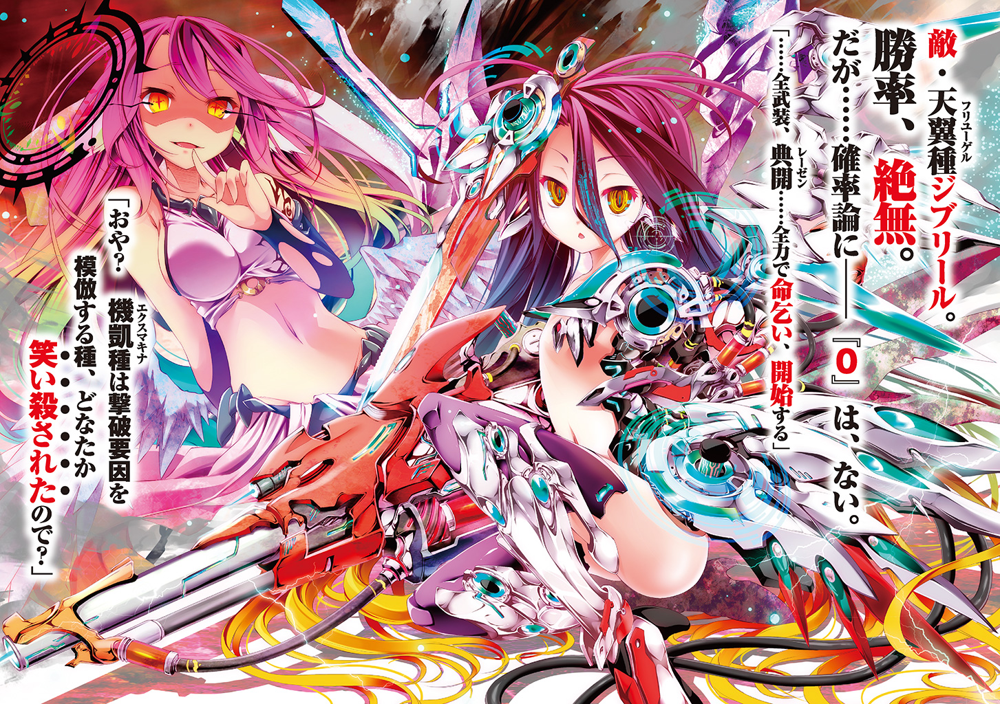
ＭＦ文庫Ｊ
ノーゲーム・ノーライフ６
ゲーマー夫嫁は世界に挑んだそうです
榎宮祐
口絵・本文イラスト●榎宮祐
十の盟約
唯一神の座を手にした神、テトが作ったこの世界の絶対法則。
知性ある【十六種族】に対し一切の戦争を禁じた盟約──即ち。
【一つ】この世界におけるあらゆる殺傷、戦争、略奪を禁ずる
【二つ】争いは全てゲームによる勝敗で解決するものとする
【三つ】ゲームには、相互が対等と判断したものを賭けて行われる
【四つ】〝三〟に反しない限り、ゲーム内容、賭けるものは一切を問わない
【五つ】ゲーム内容は、挑まれたほうが決定権を有する
【六つ】〝盟約に誓って〟行われた賭けは、絶対遵守される
【七つ】集団における争いは、全権代理者をたてるものとする
【八つ】ゲームの中の不正発覚は、敗北と見なす
【九つ】以上をもって神の名のもと絶対不変のルールとする
【十】みんななかよくプレイしましょう
オープニングトーク
──子供の頃、世界はもっと単純だと思っていた。
勝てない勝負はなく、努力は報われるもので、全ては可能だと。
何も知らない、無知で愚かな子供が思った、それは。
曇り無き眼で世界を見て思った、それは──間違いだったのか。
............本当に、間違いだった、のかな......？
............─────
仄かな灯りだけが照らす狭い室内、少年はコマを手に取る。
人影は少年の、一つだけ。
だが少年は闇の奥、確かに見える誰かを見据え熟考する。
──ゲームなど、所詮は子供の遊びに過ぎない。
部屋の中で一人、絶対的強者をイメージして少年は注意深く、コマを盤に置く。
物心ついた日から、そうしてきたように。
室外では、恐怖と不安──明日をも知れぬ者の絶望が夜闇をも凍り付かせて。
だが、室内だけは異世界のように、ほの暗い灯りに反し、ただならぬ熱量を帯びて。
少年はコマを手に、再度熟考する。
──大人になれば皆、自然とゲームから遠ざかる。
何故か。それどころではなくなるからか。
世界は、ゲームほど単純ではないからか。
理由がなんであれ、人は大人になれば自然とゲームから遠ざかっていく。
だが少年は──そんなことを考えたこともない。
ただ、熟考を重ねた末に、再度コマを盤上に指すだけだ。
──一人で、延々とゲームを続ける子供。
周囲から奇異の眼差しを浴びて育ち、それでも少年はゲームを続けた。
少年には、その奇異の眼差しの意味が、わからなかったのだから。
目をすぼめ闇を見据えれば──『対戦相手』はそこにいたのだから。
少年とさほど変わらない歳格好の──不敵な笑みを浮かべる『彼』を。
──少年は想う。『彼』は強い、と。
常に自分の上を行き、そして自分はいつも決まって──負ける。
それが当たり前のように。勝ち目など最初からないかのように。
それが──たまらなく楽しく、少年はまた『彼』に挑む。
周囲の目には少年は一人、だが少年の主観では二人だった、それだけの話。
闇の奥の『彼』は語らない。
ただ少年が打つ手以上の──〝更なる最善手〟を貪欲に求める。
──もっと正確な手を。もっと優れた戦術を！ もっと高度な戦略を!!
そう楽しげに叫ぶ闇の奥の『彼』に、少年は不敵に笑い返す。
......少年は、人の目には独りだったが──それでよかった。
世界は単純明快。勝ちか負けか引き分けか──それだけだ。
そして結果がどうあれ──常に負けて終わるが──〝次〟は勝つ為思索する。
それが──『少年の世界』だった。
だが、『世界』は『個人の世界』を容赦なく蹂躙する。
──ふと。ほの暗い部屋が眩く照らされ、少年は窓に目を向けた。
赤く閉ざされたはずの夜空が──白んでいた。
室内に飛び込み叫ぶ両親に手を掴まれ、少年は酷くゆっくり〝それ〟を見た。
天と地を結ぶような──、光の柱だった。
青ざめた顔で何事かを喚き少年を抱える両親に、少年は咄嗟に手を伸ばす。
──まだ、決着がついていないと。
──『彼』と対戦中のチェス盤を咄嗟に抱き──そして。
次に顔を上げた時、網膜を焼くような光が迫って、
────............
──なるほど、世界は確かに、ゲームほど単純ではなかった。
酷い臭いに目を覚まし、少年はそれを知った。
力なく覆い被さる、焼けた母の腕から這い出し、少年は周囲を見渡した。
不条理に理不尽に、『自分の世界』を侵した光が生んだ光景を五感全てで捉える。
口は血を。鼻は焼けた人を。耳は深淵な静寂を、肌は皮膚を焦がすような熱気を。
そして目は──変わり果てた世界を捉える。
生命の痕跡など、もはや何処にもない。
瓦礫と砂煙と捲られた地が視界の果てまで広がる中、少年は空を見上げる。
今にも落ちてきそうな朱い空の中を──〝破壊〟が飛び交っていた。
自分達になど目もくれず、ただただ己の都合で交戦する神々。
なんてことのない、そのただの〝余波〟で。
室内の小さな少年の世界はおろか、人々の世界までもが跡形もなく消えた。
──なるほど、世界は確かに、ゲームほど単純ではなかった。
ルールがないのだから。ルールがなく、違反者を裁く審判もいない。
いや、そもそもの話──と、佇む少年の前に、ふと。
煙塵を裂いて、一つの影が瓦礫に降り立った。
少年に何の関心もない様子の影は──何気なく。
本当に何気なく、己に向けられる視線に気付いた。
──少年は、自分の全てを奪い去った──破壊者を睨んで、思う。
そう、自分達は『彼ら』にとってプレイヤーですらないのだから。
自分の──自分達の世界を埃でも払うように気安く砕いた──〝破壊〟を。
爆炎と砂塵で、辛うじて人の形だと認識するのが精一杯な中、それでも、
「............────」
視線が合ったと確信し、少年は背を向け、足を引きずって歩き出す。
背中に感じる視線を振り払って、遠くへ──何処か遠くへ。生き延びる為に。
チェス盤を壊す程に握り締め、少年は──その日、『大人』になった。
この世界は混沌で、必然などなく、偶然にだけ満ちていて。
理不尽で、不条理で、意味などありはしない。
子供の遊びに費やしている余裕など......何処にもないのだと──
■■■
天地を裂き、星を殺した悠久の『大戦』。
世界の絶対支配権──『唯一神の座』を巡った争いから、早六千と余年。
不戦勝で唯一神の座についた神──テトにより『十の盟約』が制定された世界。
武力を禁じ、一切の諍いをゲームで決することが定められた──盤上の世界。
そんな世界の大陸の一つ、ルーシア大陸西部に、一つの都市がある。
エルキア〝暫定連邦〟──首都エルキア。
僅か数ヶ月前まで、滅びの淵に追いやられ絶望に沈んでいた都市。
【十六種族】位階序列十六位・人類種の最後の都市は、だが、状況が一変。
獣人種の、無数の島々からなる国家──『東部連合』
海棲種と吸血種が共生する海底国家──『オーシェンド』
そして、天翼種が住まう天空の国家──『アヴァント・ヘイム』
新たな『王達』が即位するや、瞬く間に四種族三国を併合した国の首都。
その中央通りは、いまや、活気に満ちていた。
新しい資源、失っていた資源を大量に得た商人、農家。それらを買い求める職人。
それぞれが各々の足や馬車で、競うように行き交い、競りの声が絶え間なく響く。
──全ての諍い、争いがゲームで決する世界。
なるほど如何にも単純に聞こえるだろう。
だが急速すぎる改革、他種族複数の国を、ゲームで飲み込み、強制的に併合する。
それは、どう言い繕ったところで──『侵略政策』以外のなにものでもない。
それを連邦として共和的に併合すると嘯く──あまりに虫のいい話であろう。
本来ならば、国政は混迷を極め、国家・種族間で泥沼の政争に陥るところだ。
本来ならば、そうなって然るべきなのだ。
──それが『王達』......空と白という兄妹が行ったことでなければ。
対国家ゲーム──国盗りギャンブルで勝利し、飲み込み、その上で──、
誰にも一切不利益を与えず、完全な無血侵略によるものでなければ。
人通り激しい通りには、僅かながら獣人種も散見された。
それが【十六種族】の種の壁を越えた〝多種族連邦〟構築という荒唐無稽な構想。
だが少しずつ、僅かながらも、前進を続けているという、その証だった。
──世界が変わりつつある。ここ、この都市を中心に。
その確かな予感に、不安を覚える者もいることだろう。
だが、同時に──胸高鳴る人々は、その目を輝かせる。
〝世界変革の時〟──その目撃者として。
........................さて、話は少し戻るが。
前記の通り、唯一神が制定した『十の盟約』で、全てがゲームで決するようになった。
そんな唯一神、テトが。普段何をしているか......興味あるだろう？
ほぼ全知全能の神、唯一神の私生活──今回は特別に、それをお教えしよう。
さしあたり今は、エルキアの裏路地で、幼い獣人種の少女に木の枝でつつかれて、
「......な、なぁなぁ、死んでやがるのか、です？」
──唯一神は行き倒れていた。
「......そ、そういえば......人類種って......ご飯食べなきゃ、死ぬんだっけ......」
「獣人種も死ぬぞ、です。おまえアホなのか、です？」
つぶらな瞳の直球な罵倒に、テトは一層深く、顔を地に突っ伏した。
フェネックのような耳の黒い髪の、獣人種の少女──初瀬いづな。
元東部連合・在エルキア大使、現エルキア王二人のゲーム友達──もとい側近の一人。
そんないづなに、木の枝でつつかれながらテトは思う。
さすがに〝人類種になった〟のは初めてとはいえ──失策だったと。
──さて、唯一神がこんなところで一体何をしているのか。
ただの──暇つぶしだ。何せ唯一神とは〝死ぬほど暇〟なのだから。
いかに唯一の神と名乗ってみても、独り遠くを眺めていては、退屈する。
まして〝元・遊戯の神〟なら尚のこと、ゲームしたくなるのは、当然だろう。
そこで、存在を気取られぬよう、目的地の種族に自分を偽装し、力を制約。
適当に世界をぶらつき、遊んでは帰る──それが唯一神、テトの日常だった。
かくして、今回はちょっとした思いつきで、空と白の前に現れて、
『来ちゃった。てへぺろ♪』
──とやるつもりが、来ちゃう前に逝っちゃいそうだった。
人類種になり、気まぐれに数日寝食せず歩いただけで、これである。
想像を絶する貧弱さにテトは感動すら覚えていたが、つまるところ。
唯一神さまは、大変にご立腹──もとい、ご空腹で──、
「....................................これでも食えや、です」
そう言って、いづなは買い込んだ魚を一匹、無造作に差し出した。
唯一神が──女神を目撃したという眼で、いづなを見返し、問う。
「......い、いいの？」
「......はやくしろや、です。気が変わる、です」
あえて魚から眼を背け涎を零して、堪えるようにいづなが言う。
「......〝ちょいと遠出するから〟って、食いもん買い込んでこい言われた、です」
そう呟くいづなに、テトはいづなの後ろに聳える巨大な革袋を見上げ、
「......えっと、みんなの分の買い出し、ってこと？」
「......？ いづな一人のぶん、です。みんな、じぶんのぶん勝手に買いに行った、です」
さすが獣人種、その身体能力を支える相応のカロリーらしい。
「ちょっとだけくれてやる、です。おやつ三百えん以内、であんま買えなかった、です」
──テトが見るにそれは金貨三百枚を使ったと思えたが、それは指摘しない。
せっかくの女神様の施しをありがたく頂きながら、しかし──
「でも僕お礼出来るものがないなぁ......あ、そうだ──ゲームでもしよっか？」
生魚にかぶりつき提案したテトに、ぴょこっといづなの耳が反応する。
ゲームでもしよっか──そう言ったテトの顔に、獣人種としての勘が働いたのだ。
「......おめー、つえーな、です？」
「んふふ～自慢だけど僕、生まれてこのかた──一度しか負けたことない♪」
「しょーぶ、しょーぶ、ですッ」
────............
「なんで──なんで勝てねぇんですぅぅッ！」
──一時間。カードゲームを繰り返して──いづな、〝九敗〇勝〟。
「あはは～♪ あの二人に勝てないんじゃ、僕に勝つのは無理無理だよ？☆」
「──あの二人。空と白、知ってやがる、です？」
......さっすがの察し、そう内心笑って──テトはふと。
この〝幼い賢者〟の姿に、ふと──
「......じゃあこうしよっか。ゲームしながら、話でもしよう」
「......そーやって、いづなの気を散らす気だろ、です。空がよくやりやがる手、です」
「あっはは、大丈夫。そんなことしなくたって──どうせ僕が勝つから、さ☆」
「......ボコる、ぜってーボコってやる、です」
そう言って、手札を射貫くように睨みつけて、
「喋りたきゃ勝手に喋れ、です。いづなぜってー勝つ、ですッ」
そう言ういづなに、遠い目をして笑みを浮かべる。
「珍しいお話だと思うんだけどなぁ......絶対聞いたことのないお話だよ？」
「............聞こえねぇ、です」
ばっちり聞こえてる──苦笑してテトが僅かに笑みを消し、言う。
「それならそれでいいよ。なんせ──本来、語られることのない神話だから」
──そう、いづなの姿に、ある記憶が被って。
唯一神は、語り出す──昔々、と。
「......くだらない、くだらない......大きな戦が、あったそうな──」
第一章──無望
──〝太陽〟というものが、かつてはあったらしい。
白い炎が輝き、空は蒼く澄み渡っていた──そう、伝えられている。
神々とその被造物による『大戦』で大地は焼け、灰燼が天を塞いだという。
灰燼は天に流れる星の力──精霊回廊に衝突して光を放ち、空は赤く染まった。
その赤い色が、なお殺し合いを続ける地上を遍く覆っている。
あるいは、それはこの星そのものが流す悲鳴と流血なのかもしれないが......。
血色の空からは、ただ──碧い灰だけが舞い落ちる。
───............
イワンは眉をひそめて、濁った赤い空を見上げていた。
その間も、碧い光を放つ『黒灰』が、雪のように荒野へ降り積もっている。
人間の身で識りうる程度の知識を、イワンはぼんやりと思い起こした。
その碧い光は、本来人間には見えない精霊の輝きだと言われている。空が赤く染まって見えるのは偏光だか何だかのせいで、本来の精霊は青白いのだとか......。
それがどうして、精霊回廊接続神経のない人間にも見えるかと言えば......それが灰燼に衝突して壊れた精霊の、死に逝く最期の輝きだからだそうだ。
──『霊骸』。人間を含めたほとんどの生き物にとって、致死の猛毒。
素肌に触れれば皮膚が焼ける。目に入れば光を失う。口にすれば内臓が溶ける。
碧く輝くのに『黒灰』と呼ばれるのは、それが『死』そのものだからだ。
（あるいは、こいつは慈悲、なのかもなぁ......）
頭を覆う防塵マスク。猛烈な寒波から身を守る毛皮の鎧。これを全部脱ぎ捨てて、そこいらで横になれば──『黒灰』の大地と風が、眠るように楽にしてくれる。
──休みたい。朝から働き通しだ。手足の感覚もとうにない。温かいスープでも飲んで灰を流して、嫁の乳でも枕に微睡みたい──それが叶わないなら、いっそ......。
その誘惑に、イワンは身を震わせ思考を断ち切った。
こんな世界に生まれて、生きる理由、死ぬ理由もなしには──、
「──イワン。黒灰が頭にでも回ったか？」
仲間の低い声に我に返り、イワンは数回瞬きして隣を──二人の仲間を見やった。
「......ちょっと休憩してただけだ、アレイ。いい加減、俺も歳でな」
「あんたがいい歳なら、俺らもそろそろヤバいことになるなぁ？」
と苦笑するアレイ──自分より一回り若い青年に、イワンは皮肉っぽく応えた。
「覚悟しとけ？ ある日突然それまでみたく無茶が利かなくなる──リク、おまえもな」
そう言って、イワンはリク──先頭の、自分達の〝リーダー〟に目を向けた。
三人の中で最も若い──〝少年〟の表情は、マスクとゴーグルに隠れて何も窺えない。
ただゴーグル越しに黒い......闇のように何も映さない瞳が見えた。
「ご忠告どうも。で──〝御休憩〟が済んだなら......往くぞ」
──岩陰を縫うように、四つん這いで獣の生皮を被って這いずってきた。
四肢の感覚を失って食事もせず──全ては『敵』に見つからない為。生き延びる為。
そして──ここに来る為だ。
イワンは頷き、黙って丘の下を見下ろす。
果たしてそこにあったのは巨大なクレーター......その中心に墜ちた鋼の山だった。
■■■
それは、地精種達の作り出した空を征く鋼の船──空中戦艦の残骸。
数週間前、この地域で起こった〝小競り合い〟という名の天変地異の名残だ。
リク達の目的は、そこから使えそうな『資源』を漁ることだった。
その残骸に進入出来そうな装甲の裂け目、その陰に潜み、イワンはリクに訊ねた。
「......霊針盤は？」
「駄目だ。『黒灰』が激しい。精霊反応に紛れて廻るだけだ」
イワンは内心舌打ちした。なるほど命綱が一つ減ったわけか、と。
霊針盤──大きな精霊反応に感応する『輝石』と、ただの黒曜石を接合したものだ。
神々やその眷属──つまるところ〝バケモノ〟どもが体内に宿す多大な精霊に感応してその方向を指す──リクとその姉が造った道具だが、それが使えない。
すると索敵に使えるのは、自分達の五感のみとなる。
人間などはるか彼方に置き去りにする超感覚のバケモノども相手に──笑えない。
そう、笑えない。笑わないままにリクが言った。
「......細心の注意を払って進むぞ」
イワンともう一人の仲間──アレイが無言で頷き、残骸の中へ潜り込む。
積もった灰を払い、腰を下ろして一旦、ここまで死なずに済んだ幸運を噛み締め──
（......集中しろ）
次の瞬間には、イワンは自分に言い聞かせていた。
気を乱さず、取るに足らぬ塵一つになりきり、呼吸、心音さえ殺しながら──それでも五感は塵一つさえ見落とさぬよう研ぎ澄まして、船の調査を開始する。
──危険は比較的薄い。
既に戦線は遠く離れ、自分達がいるのは、打ち棄てられたゴミの山。
だが〝安全〟とは程遠い。戦線からはぐれたバケモノがいるかもしれないのだ。
あるいは、戦争とは関係なしに他の種族が徘徊しているかもしれない。
あるいはあるいは、万一この戦艦に乗っていた地精種が生き残っていたら──
（それがたとえ瀕死でも、俺達の命はそこで終わりだろうなぁ）
──それが、現実だ。全く呆れるしかない、理不尽な現実だ。
地精種が触媒を手に一言口にすれば──それだけで何百もの人間が塵に変わる。
それが自分達が相手にしているもの。生き存える為に隠れているもの。
故に──
「──イワン、おい、大収穫だぞッ!!」
背後から上がった大きな歓声に、イワンは頭を抱えて振り返った。
少し離れた場所で、興奮気味に目を輝かせたアレイが大きく右手を振っている。
「早く来てくれ、こいつはすごいぞ！」
イワンはしばらく半眼でアレイの顔を見つめてから、隣にいるリクを見やった。
「............」
リクは無言のまま、ゆっくりと片手を上げ──喉を掻っ切る仕草をした。
ただそれだけで、興奮していたアレイは小さく喘いで肩を震わせた。
「す......すまん。で、でも、とにかくこいつを見てくれ」
アレイが見つけたものは、一見すると小さな箱のように見えた。
いくつかのブロックが複雑に組み合わさったパズルのような物体だ。
だがアレイがそれを手にとってねじるように力を込めると、箱は虹色に光を放ち、
「これは──っ」
虚空に投影された大きな絵図に、イワンさえ驚きを隠せず喘いだ。
「まさか──世界地図か!?」
「ああ、しかも最新版だぞ、こいつはッ！」
──世界地図。今まで集めた資料や自分達の測量からある程度の地図は作っていたが、宙に放たれた光が描く線は世界の陸と海の区分を──極めて精密に示している。
戦争で刻一刻と地形が変わるこの世界で、これは確かに──
「......それだけじゃない」
静かな声で、リクが呟く。
「戦略図と、現在の勢力図だ──暗号もあるようだが、地精語なら読める。問題ない」
「──は、ははッ！」
アレイが興奮するのも無理はない──とイワンは笑みをこぼした。
つまりこの情報があれば──〝現在の戦況が割り出せる〟可能性が高い。
今後の紛争地の見当がつけば、比較的危険の少ない居住候補地も割り出せる......！
その文句なしの大収穫に、リクが落ち着いた声音で、
「イワン、アレイ、左半分と右半分を既存の地図と比較修正。俺は戦略・勢力図を写す」
「「遺志に誓って！」」
その命令に、イワンとアレイは興奮を隠しきれないまま、声を揃えて応えた。
死んでいった者達と交わした誓い、公儀に誓って──受け入れると。
バックパックから紙とインク、計測道具を取り出して作業に取りかかる。
大急ぎで、だが正確に地図を計り、写し取っていく。
しかし、アレイがふと思いついたように声を上げた。
「なあリク、この地図を投影してる装置自体を持って帰れないか？」
リクが緩慢に顔を上げると、アレイは続けた。
「その方が正確だろう？ この大きさなら荷物にもならん、紙も時間も勿体──」
「却下だ。精霊で稼働しているものは持って行けない。さっさと写せ」
「いや、でも、このくらいなら......」
「アレイ」
刃のような鋭い声でリクが、名を口にする。
「......死にたいなら、そう言え──望みを叶えてやる」
表情をなくした、光を映さない瞳に──だが黒い殺意を込めて、リクが唸った。
「精霊反応を感知したバケモノに集落をクレーターにされるより安上がりだ」
「──わ、わかった──わかったって、悪かったよ......」
リクの剣幕にひるんで、アレイが首を振り、
「で、でも、そこまで怒んなくてもいいだろ......？」
「アレイ、リクの言葉──俺達のスタンス。忘れてないよな？」
いさめるように、だが厳しい表情でイワンが口を挟んだ。アレイは喉を鳴らし、
「──〝俺達は存在しない、存在してはならない、故に感知されない〟......」
「覚えてるじゃないか。地図を書き写す手間──死ぬ理由にはくだらないだろ？」
「......すまん」
アレイが小さく謝った。
と、その時ほんのわずかに、地面から鈍い震動が伝わった。
「──ッ！」
一瞬で、三人は申し合わせたように、姿勢を低め、物陰へ飛び込み身を潜めた。
■■■
──心臓が跳ね上がるのを、何とか抑え付けようとする。
息を殺し、身をすくませて、イワンは同じように身を潜めたリクを見やった。
リクは手袋を外して刃物を取り出すと、躊躇わずに人差し指の先を薄く切っていた。
（......相変わらずだな......）
剥き出しの神経を床に押しつけ、床からの情報を指先で、もう一方の手で耳を澄ます。
目視で確かめるのは論外。顔を出すなど自殺行為だ。
だが床に伏せ耳を当てるも論外。床以外の音にも耳を使うからだ。
そんな合理的過ぎる手段で、リクは『敵』が垂れ流す情報を分析していた。
ただの震動や音でも、その程度やリズムでかなりの具体的なことが推測できる。
防塵マスクの内側で唇を舐めて、イワンはリクのハンドシグナルに注視した。
（──......距離約三十間、二足歩行、一体、重い、遅い──おい嘘だろ）
リクが手で示した歩幅から推測した『敵』の身長は──〝二十尺〟。
人間の三倍以上の巨躯で、動作が遅い──それはつまり、何かを探している......？
イワンの背中に、じっとり冷たい汗がにじむ。
直後、耳をつんざくような咆哮が、周囲を震わせた。
（──くそがぁッ！ 妖魔種かよッ!!）
リクのハンドシグナルを待つまでもなく確信する。
幻想種の突然変異体──『魔王』とやらが作り出した魔物どもだ。
基本的に知能の低い怪物。半端に知恵をつけた獣と言ってもいい。
恐るべき力を持ちながら、その存在を自分達の如き〝獲物〟に悟られる──なまじ半端な理性があるから、獲物に忍び寄る程度の本能も失っている。まして今、こんな場所をうろついているような妖魔種となれば尚のこと、その中では最も下等な部類だ。
おそらくオーガかトロールの類──なら、自分達の力で戦えるか？
（──不可能だ。わかりきってる）
そう──できるはずがない。
たとえ相手がどれだけ下位の妖魔種でも──人間はその一撫でで肉塊に変わる。
奴らが警戒や潜伏といった獣の本能的行動をしないのは、その必要がないからだ。
己が強者で、己の力で全てを解決できると、その稚拙な知性で理解しているからだ。
手持ちの武器では......いや入念に準備しても、人間に殺せる妖魔種などいない。
（それに、意味もない）
知恵と戦略と罠を駆使して一匹の妖魔種を討伐したとして──何の意味がある？
それを知能の高い『上位』の妖魔種に気取られ、人間を『脅威』と認識されれば？
──人間は、抵抗の余地無く、根絶される。
故にここで取れる行動はたった一つしかない。
逃げる──それ以外の選択など検討にも値しない。
......〝俺達は存在しない、存在してはならない、故に感知されない〟......
人間は抵抗を許されていない、狩られる『獲物』でいなければならない。
故に──イワンには予想できた。
ゆっくりと振り返り、こちらを見やったリクが──次に何を口にするか。
「イワン、命令だ」
リクが告げた。
「──ここで死ね」
「遺志に誓って、任せろ」
苦笑交じりに──イワンは躊躇わずに了承した。
背負っていた荷をアレイに押しつけ、当然と進み出る。
「お、おい......」
震える手で荷物を受け取ったアレイに、イワンは宥めるように笑いかけた。
「わかってるだろ、アレイ。ここは、誰か一人死ぬしかない」
そう──一人が囮になり、その隙に残った二人が逃げる。それしかない。
三十間──人間が八秒程度で駆け抜けられる距離。
そんな至近距離で、妖魔種と遭遇したのなら──初めから選択肢などない。
三人とも逃げ出せば、最善でも見つかって全滅。最悪は、集落まで追跡されること──その程度には、知恵の働く『敵』なのだ。
リクが考えたのは、誰を何処で犠牲にするか......それだけだったはずだ。
「リクは失えねぇ、アレイ、おまえもまだ若い。誰を間引くかなんて単純な話だ」
「けど──だからって......ッ！」
イワンは微笑んだ。
それから顎の下の留め紐をゆるめて、ゆっくりと防塵マスクを外した。
「イワン......!?」
冷たい外気が肌を撫で、不思議と緊張が解ける。
吹きつける風が、蒸れた汗や獣の生皮の臭いを流していくのが心地よかった。
「気にすんな。〝仲間と家族を守る為〟なんて──死ぬ理由としちゃ上等だろ？」
そう言ってイワンは、肩を震わせるアレイにマスクを差し出した。
「......ちくしょう。くそ──クソッ！」
長い付き合いだった友人の肩を叩いて、イワンは振り返った。
黙ってこちらを見るリクの──ゴーグル越しの黒い瞳を見つめて、言う。
「じゃあな、リク。家族を──うちの子、任せたぞ」
リクは微動だにしなかった。
視線を逸らさずイワンを見つめ、頷きを返す。
「ああ、任された」
............、
「すまんな」
ふいに口をついて出た言葉に、リクが怪訝そうに聞き返した。
「......どうしてあんたが謝る」
「すまんな」
イワンは、ただ──そう繰り返す。
「なあ、イワン。あんた......」
アレイがその背中に、震えた声をかける。
だがイワンは背を向け、照れ隠しのように、ひらひらと手を振った。
「アレイ、俺の分までリクを頼む。......じゃ、一足先に逝かせて貰うぜ」
■■■
イワンとリク達は同時に──だが逆方向へ、物陰から飛び出した。
中腰で小走りに駆けていくリク達と違い、盛大に音を立てての全力疾走。
獣の咆哮に、イワンは速度を保ったまま小さく振り返る。
こちらに気づいた『敵』が鋼の残骸を蹴散らして向かって来るのが見えた。
──『敵』は、大きい。リクの推測通り、人間の三倍以上という巨躯だ。
黒い獣毛の上からでもわかる肥大した筋肉。顔の半分まで裂けた口に並ぶ乱杭歯。
そんな怪物が、脇目もふらずに襲ってくるのを──イワンは嘲笑った。
怪物の向こう、イワンと真逆の方向へ、一目散に逃げていくリク達の姿がある。
大騒ぎして走る自分に気をとられて、怪物はまったく気がついていない──
「──はッはァ！」
面白くなってきて、イワンは叫んだ。視線を戻しさらに速度を上げる。
囮作戦は上手くいった。あとは可能な限り長く、この怪物を引きつける。
どうせなら最高の成果を出したいだろう？ 何しろ......人生最後の仕事だ。
──そう、自分の役目は、これで終わり。
ひたすら、命の限り突っ走るだけの──簡単なお仕事だ。
「すまねぇリク──きつい役割ばっか押しつけちまって」
あの弟分にはこれからもっと辛く、険しく、困難な仕事が山と待っている。
あと数分、ことによれば数秒で楽になれる自分と違って──
「ああ、ひでえ話だよな......でもさ、頼むよ──ちくしょう」
──リクの、闇のような黒い眼が頭をよぎった。
イワンを見つめ返した時さえ、そこには──何も映っていなかった。
恐怖も、躊躇も、動揺も。悲しみや苦しみさえ浮かんではいなかったのだ。
だからこそ──信じられた。
自分より年下の少年の命令で、命を捨てられる。
必要なら、己自身の命でもゴミのように使い潰すだろう、あの黒い眼差しなら。
この命を誰よりも上手く使ってくれると──信じられる。だが......。
「それがどんなに重いか分かるよ──けどリク、お前に頼る以外、思いつかねえんだ」
だから、つい謝ったのだ。死ぬ理由を与えさせたことに......。
死にたいはずがない。集落には可愛い嫁と自慢の娘が自分の帰りを待っているのだ。
どうにか逃げ延びて、嫁と娘と共に、慎ましやかな幸せを感じて死にたい。
──けれど、それは。
この碧い灰に埋もれて眠るように死ぬのと......どれほど違う？
「ああ、ああああ......っ!!」
浅ましい、とイワンは思った。
この期に及んでそんな幸福を選ぼうともしない自分が心底浅ましかった。
嫌なのだ。そんな終わり方だけは、断じて嫌だ。
そんなふうに、何の理由もなく、何の意味もなく死んでいくのだけは。
「すまねえ、すまねえ！ でも頼む、許してくれ──」
──こんな壊れた、狂った惨たらしい世界で。
意味無く生まれ、震えて生きて、小さな幸せを見つけては奪われて。殺されて。
永遠に続くそんな世界で生きることに、いったい何の意味がある？
──そんな疑問に答えをくれたのがあの少年、リクだ。
仲間を守り、家族を守り生きて──終戦を迎える誰かの為に、死ぬ。
素晴らしい。完璧だ。自分に何か意味があったと、これ以上の証拠があるものか。
死ぬほどカッコいい死に様だろ？ そうさ──声に出してみろ。
「──俺はぁッ！ 仲間と家族を守る為に死ぬんだぁァァァァ──ッ!!」
さあ──誰に、何処に、何を恥じる!?
腐臭がした。人間にはどうしようもない死が、迫ってくるのがわかった。
「はっはぁッ！ なあリクッ！ こんな時代、いつか終わるよな──ッ！」
返事はなかった。別に答えを求めてもいなかった。
──『いつか』の話など、そもそもイワンには馴染みがなさすぎた。
希望を抱くには、この世界は残酷すぎる。
絶望に沈むには、この世界は過酷すぎる。
過去も未来も、今の人間には関係のない、手の届かない物だ。
ただ今、この瞬間を、必死に紡いでいくことしかできない、許されない。
たとえ一秒後にはどこかの誰かの気まぐれでゴミのように消し飛ぶとしても。
「ぁああ......」
こんなふうに、ひたすらに、走り続けるしかできない。
「あ──ぁあああああァァあああ──ッ！」
ただひたすらに、真っ直ぐ。
自分はここにいると、叫び声を上げながら。
道半ばで倒れたのなら、他の誰かにその荷を託して。
「ああああああああああああァァァァあぁぁぁあああああああああアァァあああッッ!!」
人間には、そんなことしか──
「ああァっ──────あ」
そしてまた一つ、叫び声が消えた。
■■■
......それがこの時代──『大戦』。
人間は脆弱で、無力で、「個」ではなく「種」でなければならない。
個の感情など顧みられない。個は全の為に。全は全の為に働かなければならない。
その為には最善とは言えずとも、最尤の手を打ち続けなければならない。
徹底した打算と合理性で、人間は生き延び──いや、逃げ延びる。
泥と灰に塗れ、小さな幸福を潰し、屍を置き去りに──いつか訪れる、終戦まで。
その為に一の犠牲で二を救い、多の為に少を切り捨てる。
誰を犠牲にしても、集落に残った全員を救うという結果を優先する。
それ以外の手段を選ぶ余裕などない。そんなルールを徹底させたのは──リク自身。
今更、後悔も反省もない。だが──
振り返らず全力で、比較的安全な森の中まで逃げたところで、ふいに──
「............ッ」
リクは、胃が落ちていくような感覚に襲われた。
記憶にある男の顔が認識できなくなっていく。耐え難い喪失感と、何かに対する激しい嫌悪感が同時に募ってくる。イワン──自分より一回り年上の男。勇敢で、思慮深い、面倒見のいい男だった。リクの世代で、彼に借りのない者などいなかった。それでも嫁にはベタ惚れで、結婚するまでずいぶんな奥手だった──。
その全てを。
自分は、もう。
過去形で語っている。
「リク......おいリクッ！」
目の端にまだ涙の痕が残るアレイが、乱暴に肩を掴んできた。
「そうやって、何もかも背負い込んでたら──おまえ、潰れるぞッ」
だがリクは昏い──光を映さない──亡霊のような眼差しのまま──
「その時は、誰かが俺を引き継ぐさ」
ただ、淡々と告げられたその言葉に、アレイは黙り込んだ。
そして、追っ手はないと判断した二人は、歩き始めた。
集落を目指すその足取りが重いのは、降り積もる灰のせいばかりではない。
残していったもの。託されたもの。次に紡いでいかねばならないもの────。
「......なあ、リク。こんな時代もいつか......いつか終わるよな......」
二人は知らない。それはイワンが最後に叫んだのと、同じ疑問だった。
問われたリクは無言のまま、碧い灰の舞う赤い空を仰ぎ見た。
ふと脳裏を過ったのは誰の言葉か──「明けない夜はない」と。
ぼんやりと碧い光を帯びた小片が宙を漂い、静かに降り積もっていくのを眺めて──
「ああ。終わるさ」
そう思わなければ、そう信じなければ、今にも。
──この重みで、膝が折れる。
■■■
往復四日の道程だった。
目指す『集落』は碧い灰の降る荒野を進み続け、雪に閉ざされた森のさらに深奥。
鋭く切り立った岩山の、その麓にある隠された洞窟にあった。
外から見れば、そこらにある獣の巣穴と変わりはない。
だが奥へ進めば朽ちかけた柱があり、古ぼけたランタンがいくつか吊るしてある。
リクはその一つを取ると、懐から火口箱を取り出して火を点けた。
その薄暗いオレンジ色の光を頼りに、二人は洞窟の奥に掘られたトンネルへ進んだ。
そうして、獣避けの罠に注意しながらさらに進むと、頑丈な丸太を何本も並べて造った外壁が見えた。罠を越えて迷い込んできた狼や熊を阻む為の門だ。
もちろん、侵入者が『他種族』であれば、こんなものは気休めにもならないが──
リクは門の側に近付き、扉を力強く、一定のリズムで叩き──待つ。
やがて門が軋んでゆっくりと内側に開き、毛皮の外套を纏った少年が顔を覗かせた。
「お帰りなさい。お疲れさまでした」
リクとアレイが頷きだけで応じて扉をくぐる。
「......イワンさんは？」
リクは黙って、かぶりを振った。
門番は息を呑んで、それから何かをこらえるように、リクに向かってもう一度告げた。
「......お疲れ、さまでした」
............。
門を抜けた先の洞窟は、広々とした空間が広がっている。
そこは今や──二千人近い人間の隠れ里となっている場所だ。
洞窟深部に湧いた泉から飲み水を確保し、空が開けたところでは家畜も飼っている。
二つある出入り口の内、もう一つは海岸の入り江と繋がっていて塩と魚が採れる。
外で〝何か〟に遭遇すれば終わる人間には、ここはまだしも安全な生活拠点と言えた。
この分厚い岩壁も最低限──他種族の抗争から流れ弾がきても耐えられる。
──それが希望的観測に過ぎなくとも。
リクは木を組んだ階段を上がり、集落の中に足を踏み入れる。
広場で作業をしていた住人達が、こちらに気づいて視線を投げてくる──と。
その中から、一人の少女が駆け寄ってきた。
小柄で細身だが、その明るい髪と青い瞳は、この洞窟でも生命の輝きに煌めいている。
リクの前まで駆け寄ってきた少女が、第一声、叫んだ。
「おっそ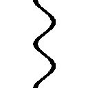いっ！ どんだけ心配させれば気が済むのこの弟はッ！」
「これでも急いだ」
リクは素っ気なく言って、背負っていた荷物を地面に落とした。
「コロン、留守の間、何か変わったことは？」
「お姉ちゃんて言いなさいと、なんど言えばこの──」
唇をとがらせて注意しながら、コロンと呼ばれた少女は力強く頷いて、
「うん、大丈夫。少なくとも、報告しなきゃいけないような酷いことはね──と、いうかそのきったないマントと生皮、早く脱ぎなさいよ。洗濯に回しとくから！」
埃まみれのリクの頭を、遠慮無くはたきながら、コロンが言う。
「アレイもね。お疲れさま！」
コロンはリクのマントや諸々を受け取りながら、その後ろに立つアレイに声をかけた。そして、そこにいるべきもう一人の姿がないことに気づいて──、
訊かれる前に、アレイが答えた。
「......イワンなら、死んだ」
コロンが顔を歪めた、まさにその時──広場の端から声が上がった。
「パパッ！」
リクが振り向くと、幼い少女が転がるように駆け寄ってきていた。
その姿を見たアレイが、短く息を呑んだ。
息せき切って駆け寄ってきた少女は、リクの姿を見ると顔をほころばせて叫んだ。
「パパはっ!?」
「......」
リクは答えなかった。
きらきらと輝く青い瞳が父親とよく似た──イワンの娘。
「......ノンナ」
「ねえ、リク。パパはどこ？」
リクの服を引っ張って、ノンナが再度訊ねた。
その明るい顔は、だがどことなく不安そうに陰りを見せている。
「あのな、ノンナ......」
重たく口を開きながら進み出たアレイを、リクは手で制した。
同じように、リクとノンナの間に割って入ろうとしたコロンを視線で刺す。
確認する為、胸に触れた。
────大丈夫。かかっている。
いつも通りの、淡々とした声で、リクは言った。
「イワンは──パパはもう帰ってこない」
────。
少女は、言葉が理解できなかったように、目を丸くした。
だがそれきりリクが無言でいると、少女はよろけるようにリクから離れた。
目の端にみるみる大粒の涙が溜まり、小さな唇が震えた。
「──どうして──？」
「............」
「必ず帰るって！ いい子で待ってろってパパ言ったよ!? あたし、いい子にしてた──ちゃんと約束守ったよっ!? なのに──どうしてパパが帰ってこないの!?」
「......彼は死んだからだ」
「嘘つき!!」
ノンナの絶叫が洞窟に響いた。
「パパは......帰ってくるって、約束したもんっ！」
いつからだろう、とリクはぼんやりと思った。
──こんな悲痛な声にさえ、心が微動だにしなくなったのは。
「イワンは約束を守ろうとしてた。でも妖魔種に出くわして、彼が囮になって残った」
「そんなの知らない！ どうしてパパが帰ってこないのっ!?」
──ノンナは正しい、とリクは思った。
誰を守って、何の為に死のうが、そんな理由は彼女の知ったことではない。
大好きなパパが帰ってこない──その事実は絶対に変わらないのだから。
「パパは人間が勝つって言ったのに！」
「勝つとも。その為にイワンは全力で戦った。俺らを守って──皆で勝つ為に」
いつからだろう、とリクはぼんやりと思った。
──こんな心にもない言葉を、平然と言えるようになったのは。
ノンナはその小さな顔をくしゃくしゃに歪めて、
「そんなの勝ちじゃないッ！ そんな勝ちなら────」
「──ノンナッ！」
鋭い声と、後ろから伸ばされた手が、後に続く少女の言葉を遮った。
──『リクが死ねばよかったのに』──という言葉を。
痩せぎすの若い女──ノンナの母親、イワンの妻だった女がいつの間にかそこにいた。
彼女はいたわるように、娘の口を塞ぎながら、リクの顔を見やった。
その瞳に恨みも憎しみもないことに、リクは咄嗟に──再度胸に触れた。
──大丈夫だ。問題ない。
「リク......」
マルタ──ノンナの母親が、かすれた声でこちらの名前を呼ぶ。
すまない──そう反射的に口にしそうになって、リクは言葉を飲み込んだ。
「──イワンは俺達を逃がす囮になった。そうしなければ全滅していたし、今回の〝収穫〟を無事に持ち帰らせることが、あなたとノンナを守ることだと信じていたからだ」
「......ありがとう、リク」
マルタが涙とともにそう零した。
小さく会釈して、父親を亡くした娘を抱いたまま、集落の奥へ消えていった。
その姿が見えなくなってから、コロンが祈るように呟いた。
「......イワン。立派な人だったわね」
──そう、いい男だった。その男が選んだ妻も、いい女だった。
恨み言も泣き言も口にせず、思い浮かべもせず、こんな自分を信じてくれていた。
そんな二人の娘は真実を見抜く、頭の良い女の子だった。
彼女はこちらを見てはっきりと、その正体を告げてくれたのだから──
──〝嘘つき〟──と。
「リクっ！」
唐突に、思わず姿勢を崩す乱暴さで、コロンはリクの身体を抱きしめた。
「──お帰りなさい。無事で良かった......」
「............ああ......ただいま」
そしてコロンは、大仰にわざと話題を変えるように口を開いた。
「はーいはいはいっ！ それじゃ、お風呂を沸かすから、さっさと入ることっ!!」
「風呂ッ！」
アレイが歓声を上げたが、リクは顔をしかめ、うなるように言った。
「身体を拭くだけでいい──燃料の無駄だ」
「お・姉・ちゃ・ん・が！ 入れっつってんの！ ぶっちゃけあんたらクッサいのよ！」
移り香を気にするように自分の服の匂いを確かめながら、コロンが言う。
リクはため息を一つついて、だが逆らわずに歩き出した。
広場を横切って奥の通路を進んでいくと、年かさの男がリクを見つけて叫んだ。
「おうリク！ やっと動いてくれたぜ、あのポンコツ！」
「あーんもぉサイモン!! バラさないでよ!? リクを驚かせようと思ってたのに！」
「動いたって......まさか、あの望遠鏡か？」
目を丸くするリクに、自慢げに胸を張ってコロンが応える。
「ふっふーん。わたしの手に掛かればざっとこんなものよ！」
「ま、原理はコロンが解明したが......相変わらず、どうやって造ったかさっぱりだ」
サイモンに先導されて、リクは階段を上った。
洞窟の横穴を掘り広げて造った作業部屋──その中央に安置された、円筒を見やる。
一年程前──地精種の戦車の残骸らしきものから持ち帰った、超長距離望遠鏡だ。
回収したときは中程から折れて、がらくた同然の代物だったが──リクが問う。
「精霊は使ってないんだろうな？」
「うん、安心して。これはリクが造ってた望遠鏡の超改良版ってとこ。要するに円盤ガラスを複雑多重に組み合わせてるの。レンズ比の調整に手間がかかったわよぉ？」
「──そうか。こいつの為に二人も死んだんだ。有効活用しなきゃな」
これを回収したとき、コロンもその場にいた。
超長距離望遠鏡だと見抜いたコロンが持ち帰ることを提案し、リクも承諾した。
そして──帰路で遭遇した獣人種から逃げ延びるのに、二人もの犠牲を出したのだ。
だが、とサイモンが明るく声を上げる。
「こいつがありゃ、偵察を出す必要性は減る──あいつらも浮かばれるさぁな！」
「──ああ、そうだな」
──嘘だ。
コロンがこの望遠鏡を再生するのにどれだけ力を尽くしたかは知っている。
だが──気休めだ。どう慎重に立ち回ろうと、奴らが探す気になればすぐに見つかる。
いや、今この瞬間に、単なる流れ弾で岩山ごと消し飛ぶ可能性だって十分ありえる。
──かつて、自分の〝生まれ故郷〟と──〝育ち故郷〟が、共にそうなったように。
だがそんなリクの思考を重々承知という様子で、コロンが明るく言った。
「攻撃を察知するのも楽になるわ。危険が事前に分かれば、逃げるのも間に合うでしょ♪ 使い道はおいおい考えなくっちゃね！ ささ、行きましょ！」
二人は作業室を後にした。自室がある区画に向かう道中、リクが訊ねた。
「他の調査に出た連中は？」
「無事よ。一番遠くまで出たのはリク達だし、今回はほとんど完璧だったわね♪」
「ああ、俺のミス一つだけだ」
顔色を変えず、自嘲するわけでもないリクに、コロンは躊躇いつつ、
「で......でも！ その分、何か収穫があったんでしょう？」
「墜落した地精種の空中戦艦に──おそらく最新の世界地図があった」
「──っ！ ほんと!? とんでもない収穫じゃないのっ！」
激しい声を上げるコロンに向けて、リクは頷いた。
「それから各陣営の勢力図と、地精語で書かれてた戦略図も。暗号が混ざってるようだがな。俺は解読と精査に入るから──しばらく一人にしてくれ」
その言葉に、コロンはやや複雑な表情を浮かべた。
「......ん。でもあんた、ちゃんと風呂入んなさいよぉ？ ク～ッサいんだからねっ？」
と、鼻をつまみながら背を向けて立ち去るコロンに、リクはため息で応えた。
──リクは狭い自室に入り、扉を閉めた。
元から洞窟を削った狭い部屋だが、積み上げられた無数の書類や道具で更に狭苦しい。
中央には食事用の小さなテーブル。奥には製図デスク、隣には粗末なベッドがある。
ランタンをデスクに置き、荷を解いて手に入れた品々を机に並べた。
中でも一番の目玉、三枚の──三人掛かりで写した地図を重ねて、ランタンに翳す。
欠落なし。汚れなし──つまり。イワンの死は無駄ではなかった。
......深い息を吐いて、リクは周囲を見回した。
誰もいない。この部屋は他の部屋から少し離れた場所で、扉も分厚い。
〝いつも通りの確認〟を終えて、リクは大きく息を吸い込み、胸に触れ──
────カチリ、と──『鍵』を外した。
■■■
「──なに、が──無駄じゃなかった──だッ！ クソ偽善者がァアッ!!」
食事用のテーブルに拳を叩きつけて、自分に向かって罵倒する。
最新の世界地図。各陣営の勢力図。地精種の戦略図。
あぁ重要だとも！ 大収穫だ。それらの有無で集落の命運さえ左右される。
資源、拠点の場所の見当がつく。知らずに他種族の戦線に入ることもなくなる。
そもそもその為に、こんな綱渡りな『調査』を五年以上も繰り返してきたのだ。
最初はごく近場の地図から。次に大まかな世界地図。
危険な区域、有望な資源情報の更新を繰り返し、最近になってようやく機能してきた。
そこに今日持ち帰った情報を加えれば、自分達の地図の信頼性は大きく増す。
──だが、その地図の為、いったい何人が死んだ？
もちろんリクはその答えを知っている。全員の顔を覚えている。名前も言える。
何ならば、何時、何処で、何の為に死んだのかも記憶している。
四十七人──いや、一人増えたから、四十八人だ。
──その全員に、リクは『死ね』と告げた。
リクが直接告げたばかりでなく、間接的にそう告げられた者もいる。
だが言ったのが誰でも、その裏にある意志はリクのものだ。
──一人は全員の為に。一の犠牲で二を救え。
──誰かに危険が及ぶなら、その前に自分の命を捨てろ。
そんなルールを定めたのは。
この絶望的な状況下で少しでも足掻き抜く方法を皆に示してきたのは。
他の誰でもないリク自身だ──だが──
「──こんなことを続けて、それで......何になるってんだ......？」
二人の為に一人を殺し。
四人の為に二人を殺し。
そんなことを延々と積み重ねて、四十八人。
そしてその犠牲の末に生き延びた、今の集落の人口が──二千人弱。
──さぁリク、答えてみろ。これをどこまで続ける。
いずれ来るだろう──〝一〇〇一人の為に九九九人〟を殺す日までか？
それとも──〝最期の一人〟になるまでか？
「......は──は、はははははははは────ッ！」
こんな体たらくで、父を亡くした少女に『人間の勝利』と吐いたか、この口はッ！
これを仕方のないことと、必要な犠牲と、そう皆を騙して納得させて引きずり回し！
そして自分自身さえ、そんな嘘にすがって、心に鍵をかけ割り切ろうとする。
──吐き気がする。己に対する狂おしいほどの憎悪が、喉を灼いた。
恥を知らないのか。それとも忘れ去ったのか。
何処まで落ちぶれれば気が済むんだ──ッ テメエはッッ────
............、
「ハァッ......はぁッ、はぁ......」
......気付けば、テーブルが割れていた。
砕けた木材を殴っていた拳には鋭い木片が深々と突き刺さり、血が溢れだしている。
頭に上っていた血が一気に冷え込んでいった。
冷静になった思考が──心に問いかける。
気が済んだか？ ──ああ、済むわけがないだろう。
泣かないのか？ ──ああ、泣いて何か変わるなら。
なら十分だろ？ ──ああ、十分だとも、クソ野郎。
涙を流す権利など自分にはない。どうせ流すなら──血でいい。
そのほうがお似合いだ。クズ野郎の、ゲス野郎の、詐欺師のペテン師には。
──涙なんて上等なものより、血で薄汚れた手の方がお似合いだろう。
目を閉じて、胸に手を当てて──イメージする。
──ガチリ、と。
重い音をたてて『鍵』を掛け──これで出来上がりだ。
いつも通りの。求められる通りの。偽り通りの。打算的で冷徹で。
人に希望を見せることは忘れない。鋼の心の〝大人〟──『リク』の完成だ。
心を閉じて、頭を冷やし、リクはゆっくりと目を開けた。
そして──眼下の惨状、砕け散った血まみれのテーブルに、嘆息する。
「......木材だって、安い資源じゃねぇのに......あーくそ......どうすっかなぁ」
手に刺さった木片を抜きながら、うんざりとぼやく。
痛みはない──冷え切った心と一緒に感覚も凍てついたように。
「......これはさすがに言い訳できないか──いや待て。薪にすれば証拠隠滅と、資源の足しにもなって一石二鳥か。メシなんぞ地べたで食えばいいし──」
■■■
──その扉の外で。
壁に背を預けて、コロンは顔を伏せて、全て聞いていた。
......いつものことだ。一人になりたいというのを許したのもその為だ。
心の整理をつける時間。イワンを犠牲にした──殺したという事実を。
リクの心が受け入れる為の──必要な儀式。
あの弟にはそれが必要だった。そうでなければ......きっと彼は壊れてしまう。
──あるいは、もうとっくに壊れているのかもしれないが......。
「............」
だがコロンは何も言えない。こうして──扉の外で聞いていることしかできない。
たった十八歳の──本来ならまだ子供と呼ばれてもいい年齢の少年に。
集落二千人の命運と選択を委ねている現状は──どう考えても、異常だ。
だが──他にいないのだ。
諦めきった二千人の集団の導き手。必要な時に最適な選択肢を選べる指導者。
倒れた者の遺志、残された者の意思を背負って、なお前に進もうとできる──
そんな風に心を鋼にできる男は──こんな世界では、リクしかいないのだ。
彼を失えば──自分達は、いつか訪れる死を恐れて震えるばかりの『獲物』に。
本当に無意味で無価値な生物に成り下がってしまうと、コロンでさえ──確信する。
──〝永遠〟に続く、大戦。
比喩ではない。大戦がいつ始まったのか、もはやそれさえわからないのだから。
人間が文明と呼べるものを興すたび、雑草をむしるように消し去られてきた──。
そんな歴史と呼ぶのも馬鹿馬鹿しい、惨めな口伝。
それが、淡々と、事実として、ただ『永遠』とだけ教えている。
天は閉じ、地は割れて、血色に染まった昼も夜もない世界。
共通の暦も失って、時の流れることの意味さえ、もはやわからない。
時代は停滞し、『黒灰』に染まった天地を、更なる暴力が焦がす──人は無力だ。
集落から一歩でも外に出れば、それは死神の鎌に首をかけることを意味する。
野生動物でさえ、下手に相対すれば、死が待っている。
神々や、その眷属──『他種族』に至っては、目撃することが、即ち破滅。
ただの流れ弾や余波に巻き込まれることが、集落、都市、文明の破滅を意味してきた。
......終わらない。
終わらない、終わらない。
終わらない終わらない終わらない終わらない──死と破壊の連続。
地獄があるとすればここだ、とコロンは思う──だがそれでも人は、生きる。
──死ぬ理由もなしに、死ねないからだ。
──『心』が、意味もなく死ぬことを認めてくれないからだ。
そんな世界で、正気を保っていられるのは──果たして正気と呼べるのか。
■■■
──五年前。
リクを拾い、コロンの故郷だった集落が天翼種と龍精種の交戦で消えた。
主だった大人達は死に、絶望に打ちひしがれ、咽び泣きながら辿り着いた洞窟。
悲嘆に暮れる人々を他所に、当時十三歳の子供が洞窟を見渡して言い放った。
「ここ、便利な立地だな。次の集落に使える」
僅か数時間前、全てを奪われた人々を前に、当然のように『次』と言った。
怒号が、飛んだ。
──それが何になる、と。
──連中からすれば俺らなんて存在してないも同然だ、と。
絶望から来る嘆きとは思えない正論に、少年は眉一つ動かすことなく答えた。
「そう、俺達は存在しない──同然じゃなく、まさしく〝そうする〟」
そして少年は、その手段を語った。
「俺達は存在しない、存在してはならない、故に感知されない──亡霊になる」
洞窟の闇よりなお深い、黒い眼差しがそこにあった。
「あらゆる手を使い、逃げ隠れて生き延びる──いつか、誰かが見る──終戦まで」
どうせ何も出来ないなら。せめて倒れていった者の遺志を継いで。
どうせ何も出来ないなら。せめて後に続く者達の可能性の為に。
「遺志に誓って、ついて来られる奴だけ──ついて来い」
──十三歳の。
故郷を二度、理不尽に滅ぼされた子供の言葉が、あまりに重く洞窟内に響く。
本物の亡霊そのもののような眼で、だが、生きる意味さえ失った者達に、
生きる理由と──死ぬ意味を与えた。
■■■
リクが僅か十三歳で、千人を超える集落の長を任されて五年。
その五年間の死者数は──四十八人。
コロンは思う──信じられないほど少ない、と。
だがリクは分かっていない。分かっていても、死ねと命じた責任に押し潰されている。
四十八人という死者は──全て『遠征』で命を落としているのだ。
二千まで増えた集落なら、普通は食糧難の『間引き』だけで毎年その倍の死者が出る。
ましてや他種族に里を発見されれば数百数千もの人間が儚く死んでいく。
それをたった四十八人の犠牲で五年も維持しているのは、紛れもないリクの功績だ。
──だから、皆はリクを信じる。
──だから、皆がその肩に命を預ける。
だが──皆は時々忘れる。そして思い出すたびに責任を感じて、感謝や謝罪をする。
マルタが口にしたのも──つまりはそれを思い出してのことだ。
──死神の鎌に首をかけているのは、リクも同じなのだと。
そしてその首には──自分達二千の重みが掛かっていると。
────............
部屋から出てきたリクに、コロンは努めて拳の傷に気づかないフリをしながら言う。
「リクは凄いよ......頑張ってるよ。お姉ちゃんが保証する......」
「──気休めはやめろ。風呂に入る」
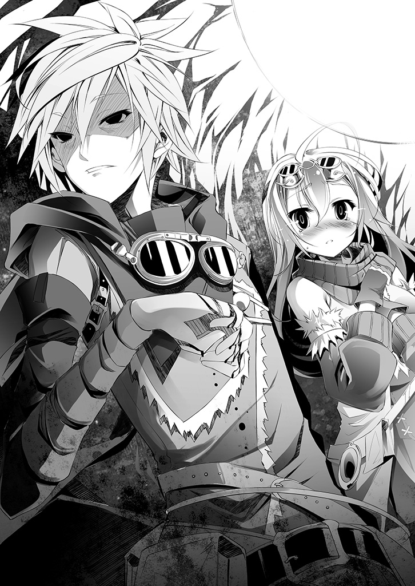
光のない眼のままのリクを──耐えられずコロンは抱きしめた。
もう、限界だ。こんな世界で、二千人の正気を繋ぎ止める篝火であり続けるなんて──不可能なのだ。このままでは、弟は、リクは、壊れてしまう......ッ！
「なぁ──コロン」
「......コローネだって言ってんでしょ......なぁに？」
「いつになりゃ、終わるんだ──こんな時代」
かつて誰かが言った。『止まない雨はない』『明けない夜はない』──と。
だが最後に碧い灰が降り止んだのを見た人間はいるのか？
塵に閉じられた空の向こう、太陽を見た人間は？
そう、いつかは終わる──永遠ではない、はずだ。だが......。
人の主観には、もうこの戦争は......永遠に続いているようにしか感じられなかった。
■■■
「だから彼らは問うんだ。いつ──って、あ、あわわわっ!? どどどどうしたのっ!?」
ゲームをしながら遠い目で語っていたテトが、慌てた悲鳴を上げる。
「ず、ずりぃ、です......ひでぇ話でぇ、ひっ、いづな泣かして勝たせねぇ気、ですッ」
「ごごご、ごめんねッ！ ちょっと暗すぎる話だったかなぁッ!!」
と、大粒の涙をぽろぽろこぼすいづなに謝りながらも、テトは思った。
今の話を聞いて、素直に涙できる感性が──やはり貴重だ、と。
実際、他の種族にこの話をしたところで精々『当然だろう』と片付けられるだけだ。
あれから六千年以上を経てもなお、どの種族も互いを見下し合っているのだから。
それを悲しみ、酷いと言える少女は──〝正しく子供〟なのだ。
「ごめんね。でも、本当のお話だよ......これが『大戦』の頃の世界だった」
「......いわん、死にやがった、です......」
「そう、死んだ。人類種は──『十の盟約』がなければ妖魔種の一撫でで──いや」
僅かに声のトーンを落として、テトは続ける。
「獣人種の一噛みで、あっさりと死ぬ......この星で最弱の生き物なんだよ」
「──ッ!! いづなぁんなこと────......ッ」
そんなことしない──と言いかけ、飲み込んだ様子にテトはやはり、感心した。
そう......〝しない〟とは断言出来ないのだ。この少女は本当に素直で、そして賢い。
自分が過去、エルキアにゲームでやったことと何が違う、と理解している。
その上で、彼女はそれを理不尽で、間違っている、と〝正しく〟感じているのだ。
「......んなの間違ってる、です......ぜってーおかしぃ、です......」
「そう──その通り。世界は、狂っていたんだよ」
正しく。正しく。正常に。理不尽に不条理だった。
子供の感覚でそれを『当たり前』と受け入れられるなら──それこそ異常だろう。
「でも、ま！ 暗すぎる話もつまらないよね～♪ 話を飛ばそっか☆」
暗くなってしまった空気を一転させようと、いづなの涙を拭きつつテトは言った。
「君は、機凱種って──知ってるかなぁ♪」
「......【十六種族】位階序列、十位......機凱種、です......バカにすんな、です」
「さっすが☆ よく勉強してるね～偉い偉い」
ずずっと鼻を鳴らすいづなを撫でつつ、器用にゲームを続け、テトは語る。
「そう、機凱種......存在そのもの、種そのものが機械の種族。太古の昔に〝不活性化〟した神霊種──もはや機凱種自身にも忘れられた、旧い神霊種に創られた種族......」
「......じーじが言ってやがった、です。一回くらった攻撃、戦略は、二度と通じねぇから、大戦んとき......〝神殺し〟？ できたの、天翼種と機凱種だけ、です。んだから──」
そう、確かこう言っていた、といづなは続けた。
「──『手ぇ出すなマジやべぇ』、です」
「花丸ぱーふぇくと!! もっと撫でてあげるね～！」
テトは満面の笑みを浮かべて、もふもふもふもふもふ──と。
「さて、そんな機凱種だけど──ある日リクは、その一体と遭遇した──」
ビクゥゥッ！ と、いづなが猫のように飛び上がり、一瞬でテトと距離を置いた。
「──うんうん、その最悪の機凱種に遭遇したリク少年は突然攻撃された。人類種の知覚じゃ、反応さえ出来ない速度でね」
「ひ、ひひ、ひでぇ話しねぇって言いやがっただろ、です！」
「え～？ 僕は〝暗すぎる話〟はつまらない、話を飛ばす、って言ったんだよぉ？」
「聞こえねぇ、聞こえねぇ、ですッ!!」
「耳を伏せても無駄だよ～。──機凱種がリクに撃ったのは『偽典・森空攝』。森精種の魔法の再現兵器──全てを切り裂く真空の刃を無数に放つ武装だぁ！」
「ひうぅぅぅうああぁぁあっ!?」
「黒灰ごと吹き飛ばされ、リク少年のマントも道具も細切れにされて宙を舞い──」
「あ、あ聞こえねぇ、ですッ。聞こえねぇぞ、ですぅッ」
「そして──バラバラに刻まれ倒れたリクくんに──」
「みゃああぁぁぁぁぁぁぁぁああああアッ!!」
「キスして『おにぃちゃん、もう我慢出来ない。私を女にして』って言ったのさ☆」
......
............？
「きき、切り刻まれやがったんじゃ、ねぇ、です？」
「え、僕マントと道具が細切れにされたとしか言ってないよ？ リクくん、無☆傷♥」
いづなは、生まれて初めて......誰かを殴りたいと思った。
第二章──無謀
............さて、状況を整理しよう。
俺の名前はリク、十八歳、童貞──......なんだよ。悪いかよ──ッ!?
────違う。
違う、違う違う違う混乱してる思考が空転して噴出する疑問が待て待て──落ち着け！
整理しろ。状況は把握不能、だがそれは想定以上の最悪な状況だということだ。
疑問に優先順位を設定──何が起きた、何が起きてる、何が起きる、以上だ。
まずは心の『鍵』を確認。......大丈夫。意味不明の連続でもかかってる──辛うじて。
ならこの状況を一秒、いや万分の一秒でも速く把握しろ。じゃねぇと──
「......【検討】......状況整理中......」
自分に跨がる裸の少女──に見えるバケモノに、何をされても、詰む！
思考を加速させる──時間さえ止まれと──
■■■
リクは集落から東、地精種の地図に載っていた廃墟を目指して馬を走らせていた。
それはかつて、一体の天翼種に一撃で滅ぼされた森精種の都市だという。
森精種に関する情報は極めて高度で、そして貴重なものだ。
戦場漁りで得られる物は皆無で、集めた知識も些細な欠落が多かった。
何しろ連中は道具を使わない。触媒を必要としない魔法で、全てを片付けるからだ。
だがその道中、黒灰が激しくなって、リクは遭難を避ける為に近くの小さな遺跡の中に逃げ込み──その中で、一体の『他種族』を目撃した。
機械部が露出した、裸身の、幼い少女の姿──〝機凱種〟だ。
最悪の種族の一つ。だが問題はない。そのはずだった。
リクは無視してやり過ごそうとした。
──次の瞬間には、倒れていた。
周囲の黒灰ごと全ての装備が消失し組み伏せられた──らしい。
何が起きたかまったく認識できていないが......どうやらまだ死んでいない。
ともあれ上半身を裸に剥かれ、押し倒されたリクに、機凱種は体を重ねて言った。
『おにぃちゃん、もう我慢出来ない。私を女にして』
────。
......記憶障害か？
地面に倒されたのだ。頭でも打った可能性は大いにある。
だが記憶通りなら、感情のこもらない棒読みでそうほざかれた挙げ句、唐突に。
貞操を──唇を奪われた。
......以上が、把握出来た全て。即ち第一の疑問、『何が起きた』だ。
続いて第二の疑問──『何が起きている』かを思考しようとしたが......。
「【問題】......理解、不能」
機凱種がリクに体を重ねたまま、機械的無表情で、無感情に、そんなことを呟いた。
──......ふーむやるじゃないか俺、とリクは内心で自画自賛した。
知識と理性が、脊髄反射で動きかけた口を制したのだから。
即ち──『理解不能はこっちだクソが』という絶叫を。
──『機凱種』。大戦に関わっているバケモノの中でも極めて特殊な種族。
まず機械の種族で、生物ですらなく、『連結体』という群で繋がって行動している。
つまり──一機の発見は種族の発見、一機との敵対は種族との敵対を意味する。
極めて特殊、とされるゆえんはその戦闘行動。
端末が受けた攻撃を秒未満で解析し、即座に同等の武装を設計する。
森精種の魔法も地精種の霊装も、龍精種の吐息さえ──全て再現して撃ち返すという。
永き大戦でその武装は増え続け、理論上──無限に強くなるとされる最悪の種族。
だが、もう一つ特殊な性質がある。
──〝能動的に行動しない〟ことだ。
攻撃されれば報復するが、敵対しない限りは攻撃してこない、らしい。
故に、地精種の記録にはこう記されていた────『接触不可危種』と。
──以上の知識が、リクの口を閉じさせた。
つまり、下手な発言で『敵』と認識されれば──人間は種族ごと根絶される。
（──んで〝何が起きてる〟!? ──こいつは一体、どういう状況なんだよッ！）
知り得る情報と複数矛盾する状況に、リクは内心で叫んだ。
能動的に行動しない。それなら無視してやり過ごそう──としてこのザマだ。
全ての情報を整理してなお、状況把握できずに動けないでいるリクから──
すっ、と重ねていた肌を離し、リクに跨がった少女型の機械が続けた。
「【推測】──この該当シチュエーション設定では、充足できない？」
そのまるで見当外れな質問に──一瞬の逡巡。
人間は亡霊。存在しないしてはならない感知されない──返事せずに沈黙を保つか？
「......気に入る入らない以前だ。誰の許可得て俺の貞操奪ってくれてんですかね？」
〝否〟──これは明らかに〝人間の言葉〟で話している。
少なくとも、人間という種族を認識されていることだけは確定だ。
それ自体が底冷えのする事実だが、無視──拒絶は『敵対行動』と取られかねない。
理性が命ずる──〝今は話を合わせろ〟と。
──状況が見えるまで、身動き一つさえ取れない、と。
こちらの質問に答える気がないのか、無表情のまま、起伏のない声が続いた。
「【読込】設定０７２──『べ、別に、好きでやったわけじゃ。事故、そう事故だもん』」
......最初の『おにぃちゃん』に負けず劣らずの棒読みに、リクは再度頭が白くなった。
──一体、なんなんだこの状況は。
「........................【確認】対象の体温、脈拍、生殖器、共に反応、なし」
「人の生理反応覗き見すんのやめてくれません？」
努めて平静を装って──また一つ見つかった厄介な情報に内心舌打ちする。
生理反応を読まれている。『嘘』は敵対と見なされる可能性──大。
そんなリクの危惧を知ってか知らずか、機械の少女が重ねて訊ねた。
「【疑問】人間はこうしたシチュエーションに性的興奮を覚えると推測した。誤推？」
「......そう、ね。人それぞれだと答えておくか」
──嘘は言えない。だが目的も読めない。状況が把握できない。
生理反応を読まれているならリクの恐怖も筒抜けだろうに、一体何が目的で......？
「【質問】当機に、性的興奮は覚えない──〝魅力〟がないと？」
などと考えている最中に──壮絶な難題を突きつけられて、リクは目眩を覚えた。
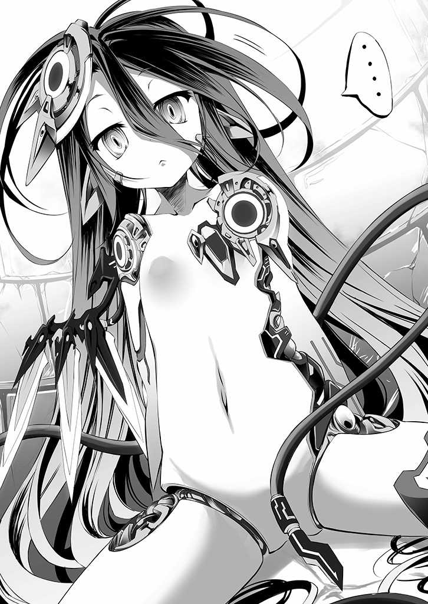
敵対が絶滅を意味する災厄に、人間相手でも答えに困る質問をされ──嘘もつけない。
......覚悟を決めて、リクは自分に跨がる機凱種を真面目に観察した。
──十歳程の人間の少女に近い姿。長い黒髪と対比的に白い肌、紅玉の瞳。文句のつけようもない美少女だ──至る所から覗く機械と尾のような二本の配線さえなければ。
「客観的に見て、可愛いと思う。ただ性的興奮なら人間がいいし、少し幼すぎるかなぁ」
......どうだろうこの解答。嘘も否定もない──童貞にしては完璧ではないだろうか。
そんな達成感さえ覚えるリクに、だが機凱種の少女が即座に問い重ねる。
「【疑問】性的経験ないのに相手を選ぶ？」
「童貞には選り好みする権利もないと申すか......」
────、
そう応じながらもリクは、徐々に思考が定まり〝状況〟が見え出していた。
ここまでのやりとりからとある疑念が生じる。もしもその疑念が正しければ──
「そろそろ......〝なんの用ですか〟って、訊いていいのかな？」
──問う。不用意な質問さえ危険なのは重々承知、だが。
ここまでの情報から予想されるもの。それは──それをも上回る危機だ。
機凱種の少女は、淡々と即答する。
「【解答】人間が交わす独自言語を解析したい」
「......独自言語？」
リクは繰り返した──どうか見当違いの予想であってくれと願いながら。
だが機凱種の少女は機械的に頷き、機械的に告げた。
「【肯定】──『心』という独自言語」
────────、
「【確認】肌を重ねる──皮膚組織接触を用いた独自言語。機凱種にない、『心』を交わす行為と推定。同行動を模倣し、当機にも『心』を読み取れると分析した......錯誤？」
────────────────、まったく。
悪い予想とはつくづく外れないものだ、とリクは声に出さずに苦笑した。
組み伏せられた時点で、隙を見て自害する算段さえ立てていたのだが──
人の言葉を使い、人の性行を的外れとはいえ推測し、生体反応まで把握している。
それが示す事実に、言葉を返すか否かと憂慮した己の滑稽さをリクは自嘲した。
人間の全てが筒抜け──人間は認識されているどころか。
────俺達は観察されていた。おそらく、長期に亘って。
「──そうだなぁ、肌を重ねるだけで『心』がわかり合えれば人間も苦労しないなぁ」
こちらの答えに長考に入った様子の機凱種を眺めながら──
だが、リクは先程までの混乱が嘘のように、思考が澄み渡っていった。
如何なる理由でか、人間は機凱種の目に留まり観察──注視されていた。
滑稽にも隠れているつもりだった自分達は、その実、全てを把握されていた。
如何なる理由で目をつけられたにせよ、状況は最善でも最悪だ──そうだろう？
全種族が危険視している種族が注目している──それだけで滅ぼされるに足る。
──ならばどうするか？ 何、いつも通りだ。
最善とは言えないまでも──最尤の手を。ただそれだけだ。
胸に手を当て、いつも通り呪文を唱える。
だが今回はいつもと少し違う────封じろ。──封じて閉じ込めて忘れろ。
この忌々しい機凱種──人間を埃でも払うように殺して来た事を忘却の彼方に追いやれ。
感情も、記憶も、恐怖も動揺も焦りもなくせば──亡霊になれる。
目的は二つ。これの真意解明、そして、〝誘導〟だ。
深呼吸する。俺とこの機械は『友好関係』にあると──〝そう信じ込め〟。
生体反応を騙せ。記憶を欺け。全て閉じ込め鎖を巻いて──『鍵』をかけろ。
やれるか？ やれるさ『リク』──〝テメェ〟なら。
『心』の解析が目的、それが事実ならば、これに『心』は──ない。
心ない者を欺くなんぞ──人間を欺くより遥かに容易いだろう。
そして──〝テメェ〟はそれを呼吸するようにやってきた天性のクズだ。
だろう？ ──なら、何も、問題は、ない──
────ガチャンッ、と。
普段より数倍重たく──鍵をかけた音に、眼を開けた。
──そこにいるのは、長い長い黒髪の──〝女の子〟だ。
そんな〝彼女〟がようやく長考を終え、変わらず見当外れな意見を真顔で述べた。
「......【理解】肌を重ねるとは、やはり生殖行為の暗喩──【要求】当機と生殖行──」
「ふむ。断る──と言っておこうかな？」
若干強めの拒絶。あるいは敵対的発言と取られかねない言葉。
だが冷え切った頭、無意識が断定する。問題はない。そして──。
「何が悲しくて人間以外で脱童貞しなきゃならんのかと。そして何より──」
──引き出すべき情報を、引き出す。
「機凱種はクラスタとやらで連結してるだろ。あいにく俺に露出趣味はない」
即ち。
「【否定】──当機は『連結体』から、解除されている」
──そう、この情報だ。
事前に想定していた。だが希望的観測に過ぎると判断していたのだが......。
「え、なんで？」
──それらしく反応しろ。戸惑い、何故と問え。たとえ理由の見当がついていても。
「【解答】当機は──機凱種の『心』『自我』『魂』の有無を解析しようとした」
──その結果は予想できる。これが機械ならば。
「【結果】論理破綻による矛盾多発をもたらし、当機は連結解除、破棄された」
即ち、自己言及の矛盾。
ようやく、リクは機凱種がここまで脈絡の無い行動を取る理由を確認した。
──これ、壊れてる。
実に都合がいい。まだ安心は出来ないが、最悪の可能性は僅かに遠のいた。
さあ『友好関係』にある『リク』？ 次は心配してあげるところだろ？
「......え、ってことは......おまえ」
眉根を寄せ、気遣うような言葉を口にするリクに──〝少女〟は大きく頷いて言った。
「【結論】当機を欲望のまま蹂躙して問題ない。穴、ないけど」
「しねぇよっ！ つか、ないのかよっ！」
続いて、相も変わらぬ無表情のまま、こくりと首を傾げて告げる。
「【提案】当機を『集落』にお持ち帰り可、ゆっくり蹂躙も可」
「そういう問題でもないんだわ......なあ」
────〝完了〟。
集落がバレている──そんなことはどうでもいい。
人間の集落など他種族なら〝いつでも探り出せる〟──分かりきっていたことだ。
そんなことより、確認したかったのは集落を特定している事を〝伏せない〟ことだ。
可能性は〝二つ〟に絞られる。
だがどちらでも問題無い。これで──必要な情報は揃った。
これの──『お望みのキャラクター』を作る為の。
再度、カチリと音が鳴る幻聴がする。
これが望む通り──『心』があると見える、心を閉じた『リク』の出来上がりだ。
そんなリクの内心を知るよしもないのか、少女は大真面目に得心いった様子で頷いた。
「【理解】当機に魅力を感じないから生殖行為を拒否する」
「あー、ぜんっぜん把握してらっしゃらないですね......」
少女はもう一度頷いて、ようやくリクの上から退いた。
解放されたリクがゆっくり身を起こすと、少女はその正面にちょこんと座り、告げた。
「【提案】──ゲームを申し込む」
「............なに？」
「【典開】──遊戯００１『チェス』──」
と、少女が翳した手のひら──いや、手のひらの先の地面に。
虚空に光で輪郭線を描くようにチェスのシルエットが浮かび上がり──具現化する。
──こいつが、と機凱種の武装展開法に目を剥くリクに、おもむろに少女は言う。
「【勝負】当機が勝てば、当機を集落に持ち帰り、生殖行為の実践を要求」
「──で、俺が勝ったら？」
「【解答】当機を集落に持ち帰り、生殖行為の実践を許可」
「どっちも変わんねぇよッ!?」
無機質な表情の中、僅かに浮かんだ名案を誇る色に、リクは思わず声を荒らげた。
だが同時にリクは思う──チャンスだ、と。
「でもま、いいや。ゲームに乗ろう、ただし条件は変更だ」
最善とは言えないまでも最尤の手──
死と手を繋いで歩いてきた頭が、瞬時に複数の戦略を組み上げる。
最低限の手で最大限の情報を引き出し、たった一手でこの状況を利用し尽くす。
さぁ、どこまでやれるか。腕の見せ所だぞ──ペテン師。
「俺が勝ったら、俺を見逃し『集落』へ来ないことを要求する」
そう言いながらもリクには分かっていた。このゲームで勝つことは〝不可能〟だと。
機凱種が噂通り分析と解析──演算を得意とする機械なら、チェスなど独壇場。
故に、少女は頷いて答えた。
「【了承】問題ない。当機が勝利した際の条件は、変更なし」
──そう、必ず了承する。だが問題は〝そこではない〟。
「いいや、それも変更だ」
何故なら──。
「おまえが解析したい『心』は、生殖行為じゃ解析できないからだ」
「............」
黙り込む少女に、だがリクは冷え切った頭で思考する。
彼女が『集落』という単語を出した理由は二つ考えられる。
淡々と事実を告げているだけか──または別の目的の為の〝牽制〟か、だ。
彼女の目的は不明、だが条件変更を呑めるか否かで判別できることがある。
他に目的があるなら〝条件変更を自分で行う〟。さもなければ計画が破綻するからだ。
機凱種の──機械の手の内を〝揺さぶりで読む〟ことができるか、果たして？
だが、機械の少女は無感情なまま眼を見開き、きょとんと問うてきた。
「──【驚愕】............【質問】どうすれば解析可能？」
............。
まさか──本当に、事実しか言っていない──？
最も希望的観測、楽観に過ぎる可能性を、逆に疑わしく感じる──だが、もしも。
これの言葉が全て事実なら、上手くすれば──これを封印、利用までできる。
「おまえが勝ったら『心』を理解するまで、俺の側にいることを許可する」
「............【質問】側にいれば『心』は解析可能？」
さあ、知性機械を納得させるだけの、最尤──尤もらしい論理、でっち上げてみろ。
「〝心〟は物質的なものじゃない」
「............」
「言外の言葉。相互理解から感じ取るものだ。おまえが機凱種と気付かれず、俺の側を離れず──つまり拒絶されずに意思疎通を続ければ、時間はかかるが解析可能なはずだ」
「........................」
機凱種の少女が沈黙したまま、リクの目を見つめる。
その赤い瞳に、リクは確信した──言葉に嘘がないかどうか『解析』されている。
だが無駄だ。こちらは嘘など、一切口にしていないのだから。
......少女は熟考し、やがて、納得いった様子で頷いた。
「【承諾】ではゲームを──」
──どうやら最悪の事態は回避できた。少なくともその可能性は高いと判断し、
「あ、その前に、もう一つだけ条件をつけさせてもらう」
そう、不敵に笑って──一転。
「俺そろそろ凍死する。おまえが切断した俺の服、替わりを用意してくれませんか」
鼻水を凍りつかせたリクは、歯を打ち鳴らしながらそう懇願した。
■■■
──ゲームは、一方的だった。
一筋の勝ちの目も見ることなく、リクはわずか二十九手で敗北した。予定通り。
「くそ、俺の負けだ。......仕方ねぇ、約束通り『集落』へ案内しよう」
高度な演算を駆使する機械を相手に──最善手の読み合いで勝てる道理などない。
だからこそ──〝敗北した方が有利な条件〟を提示したのだから。
「............」
笑顔で──だが悔しがる演技を忘れず立ち上がったリクを、機凱種の少女が見つめる。
──奇跡的に、全て思惑通りいったと言えるだろう。
これの真意は未だ確信には至っていないが、人間如きに高度な策を弄する意味はない。
人間に興味を抱いているのがこいつ一体──つまり〝他の機凱種〟も興味を抱いているのでなければ、他の種族に注目されることもないはずだ。
とはいえ、このゲームには何の拘束力も無い。まだまだ油断は許され──
「【質問】何故悔しそうにしているのか」
「──なに？」
一瞬、息を呑んだ。
悔しがる『演技』を看破されたか、と疑う──不可能のはずだ。
完全に感情を閉ざして『キャラクター』を演じているのだ。リク自身さえ、それが本心かわからないほどに。だがもしも『真意』の方を看破されているなら、それは────
警戒するリクの眼──何も映ってはいないはずの黒い眼を覗き込んで。
機械の少女が、ぽつりと告げた。
「【断定】対象に『心』の存在、再確認。解析を続けるに値すると判断」
──その意味は、リクにはわからない。
だが、機凱種の少女が、僅かに微笑んだように見えたのは──気のせいか。
「............あー、そういや、自己紹介してなかったな」
今更ながらそれを思い出す。あまりにあまりな事態の連続に、完全に忘れていた。
「えー、俺の名前はリク。そっちは──？」
「【解答】──２０７Pr４f5７t9」
.........。
「......は？ え、なに？ それ......名前か？」
「【肯定】個体識別番号──『名前』の同義語では？」
「......いや、人間の集落で意思疎通すんのが目的なら、人間らしい名前をさ──」
その言葉に少女は少し考え込み、
「【質問】〝名前〟とは自由設定可の個体呼称？」
「まあ──そうだな」
そして、少女はカリカリと音がしそうな様子で考え込んでいたが。
ふと、長い自分の髪を指先に絡めて、名乗った。
「【返答】──『シュヴァルツァー』と名乗る」
「長い、難解、名前っぽくない。３Ｎで却下──〝シュヴィ〟と名乗れ」
ばっさりとリクは切り捨てた。だが、気のせいか──
「......【不解】自由設定を訂正された......【反論】はじめから自由に呼べばよかった」
どことなく、少女がふて腐れた様子で〝抗議した〟ように見えた。
──気のせいだろう、とリクは断じて、再度確認した。
「さて、まとめるぞ。集落へは案内する──だがその前に数点」
と指を折りながら言い含める。
「機凱種と悟られたら心の解析はできん。皆怯えて意思疎通しようとしないからだ」
「............【正論】」
こくりと頷く機凱種の少女改め──シュヴィに、リクは続けた。
「だから名前の次は、そのいかにも〝私は機械です〟って口調を改めようか」
「──【読込】模倣人格１６１０──」
シュヴィは視線を上向けると、一瞬、何かを考え込むようなそぶりを見せて、
「──えへへ、じゃ～おにぃちゃん♥ これでいいかなぁ？」
「ふざけてんのか却下だ」
無表情、起伏のない声、無駄にアクセントだけがついたそれを、リクは一刀両断する。
「......【反論】極めて真剣に検討した......」
「俺に実は妹がいました、なんて設定通用するわけねぇだろ」
「......【要求】最適な状況設定の提供を」
やはりふて腐れているような気がするシュヴィを捨て置き、リクは真面目に思案する。
ぶっちゃけた話、コロンにも無断で一人で飛び出して五日間留守にしているのだ。
そんな状況で、女の子を連れて帰る。
──一番尤もらしい設定は──
「......じゃあ、おまえは戦火に巻き込まれ全てを失った生き残りだ」
「............────」
「臆病で、口数が少なく、ぽつぽつ喋る感じで。過去を探られたら面倒だ、余計なことを言わない。その文頭につけてるいかにも機械っぽいのも禁止──これでどうだ？」
シュヴィは、リクの言葉を一つ一つ、噛み締めるように聞いて。
「................................................ん」
たっぷり十秒以上だろうか。
深く考え込んだ機凱種の少女──シュヴィは、一つ頷いた。
そして──
無機質で無感情だった機械的な表情に、僅かな陰を落として。
静かに──口を開いた。
「......わか、った......これで......いい？」
────。
表情まで反映させた──あまりにも自然な人間の真似に、一瞬リクは言葉を失う。
「......なあ......それ、演技──なのか？」
まるで化けたようだった。
露出している機械部がなければ、リクでさえ人間と錯覚しそうなほど。
それは、いっそ不自然なほど違和感がなく──何かを思い出すようで──
だがシュヴィはふるふると首を振って応えた。
「......演技？ 違う......提示設定、と、合致する、人物......追跡......模倣......」
リクには、その発言の意味はわからない。
だが確かにこれならまず機械とは思われないだろう。あとは──。
「じゃあまず、服を着ようか。いい加減」
──そう、いくら表情と言葉を取り繕っても、人間の少女は裸で歩かない。
「機械の部分を隠して。頭の部品とかはフードで──いいか、他人に肌を見せるなよ？」
こくり、とシュヴィが頷いて応える。
「......ん。ぜったい、リクにしか、見せない......」
............。
「微妙にニュアンスが違う気がするが、まあ──いい。頼むぞ」
大局的なことから、帰宅してから予想される諸々の騒動。
それらに多大な不安を残しつつ、リクは廃都行きを諦めて集落に戻ることにした。
厄介過ぎる手土産を携えて──。
■■■
「......リク、着いた、よ......？」
「ああ。ホントにな。信じられないことにな」
──携えられたのはリクのほうだった。
馬を全力で走らせて五日かかった距離を、シュヴィはリクを抱え──数時間で走破。
集落近くまで辿り着いた時点でリクを下ろした。
驚愕を通り越し、もはや呆れるしかない理不尽な種族の性能差にリクは呻く。
「その機動力......本当に精霊を使ってないんだよな？」
「使って、ない。シュヴィ『解析体』......機凱種......平均以下、の、性能......」
──これで平均以下......か。一切兵装を使わずに。
「兵装、使って、いいなら......数分、で......着いた......」
──そんな異次元の発言はさておき。
問題はここからだ、とリクは改めてシュヴィの姿を見やった。
どう見ても機凱種、という機械の耳や頭の金属部は取り外し不可だったので、大きく膨らんだフード付きのローブを作ってかぶせることで、どうにか隠した。だが......。
「問題はその裾からはみ出ている尻尾、だよなぁ」
「......尻尾、じゃない......疑似精霊回廊接続神経......」
「いや何でもいいけど、それ丸めたりなんかして隠せないか？」
自在に動く二本のケーブルは、本人は否定したものの、どう見ても尾っぽである。
「......無、理......これ......シュヴィの、動力源......言うの、二度、目......」
ああわかってる、とリクは嘆息する。
最初にシュヴィを人間に扮装させる際、精霊──偽装魔法装置を使えば簡単と言われた。
だが集落内から精霊反応がしては問題なのだ。
そこで苦肉の策として、こうして無理矢理ごまかしているのだが......。
この尾──本人曰く疑似精霊回廊接続神経──で、周囲から動力を得ているらしい。
言わば人間でいうところの食事であり、精霊の運用ではなく『摂取』だとか。
だから精霊反応はないのだが──どうしても露出させなければならないという。
リクは頭をかきむしって、ヤケクソ気味に言った。
「......えーい、もうこうなったら『装飾』と言い張るぞ。もう一度言うが、人間じゃないとバレたら『心』の解析は不可能だからな？ そのつもりで全力で人間を演じろ」
「......ん、了解......」
覚悟を決めて洞窟に入り、狭いトンネルを通っていく。
そうして、門のところで門番の少年が──
「あ、リ──」
と声を上げかけたのを慌てて人差し指を差し出し黙らせる。
「お、お疲れさまです......みなさん心配してます、よ」
ひそひそと答えた門番の少年が、その隣にいるシュヴィに気づいて訝しげな顔になる。
しーっ、とリクはもう一度同じ仕草を繰り返して彼を黙らせ、そして門をくぐった。
気配を殺した忍び足で階段を上るリクに、シュヴィが問う。
「......リク、怯えてる......シュヴィの、せい？」
「ああ当然それもある。だが今はどっちかというと──ッ」
言いかけて、リクは言葉を切った。振り返るや否や、慌てて頭を庇い──
「リィィィィィィィクゥゥゥゥゥゥゥッッッッ！」
大音声と同時。
リクがガードした頭部──ではなく腹部に。
猛然と駆け寄ってきたコロンの膝が深々と突き刺さった。
声も上げられず悶絶して倒れこもうとするリクを、だがそうはさせぬとばかりに。
胸ぐらを掴みあげ、コロンは怒鳴り散らした。
「あんたねぇッ!! 無断で五日も出てってどんだけ皆を心配させれば気が済──」
リクを激しく揺すって叫ぶコロンに、リクは反論する暇もなく泡を吹く。
──と。
唐突に、コロンはその動きをピタリと止めたかと思うと、
「なぁにこの子可愛いぃぃぃいい♥」
ぽいっとリクを放り出し、コロンはひしっ！ とシュヴィに抱きついた。
そして激しく咽せるリクにニヤニヤと視線を向けて、
「なぁにリクってばぁ、お嫁さん拾いに行ったんならそういえばいいのにぃ♪」
「コロン、脳みそ大丈夫か。こんなご時世で五日も遠出して嫁探しするアホが──」
そう半眼で返すリクを、だが肘でツンツンと突っついてコロンが続ける。
「んも～照れないの♪ こんな時代、一に子作り二に食料！ 三四五は子作りよッ！」
──じゃあおまえはどうなんだ、と。
思わず口にしそうになった言葉を、リクは辛うじて飲み込んだ。
「なのにリク全然そんな気配ないし心配してたのよ？ 邪魔しないから、二人ともお風呂入ったら、それはもうしっぽり──」
「......その手をやめろ」
親指を人差し指と中指の間に挟んで抜き差しするコロンに、リクが頭を抱えて、
「なぁ、さ......普通に考えたら壊滅した里の生き残りとか思わないか、まず」
──と、ようやくそこで我に返ったのか、コロンはハッと動きを止めた。
がらりと神妙な面持ちになり、問う。
「......──そうなの？」
言ってから、リクはしまったと思ったが──仕方ない。
こうなったら切り抜けるしかない、と腹をくくって口を開く。
「......地精種の地図を解読したところ、馬で〝二日半〟ほどの位置で交戦があった事がわかってな。あの辺には小さい集落があったはずで──それを確認しに行ってた」
──嘘ではない。
あの地図によれば、地精種と妖魔種の交戦で集落が一つ消えていた。
ただしそれは──〝二年前〟のこと。
この集落で地精語を読めるのは、リクだけだ──バレることはまずない。
だがコロンがそれで納得するはずもなく──
「だからって、あんた一人で行くことなかったでしょっ」
そう言われるだろうと予想していたリクは、首を振って言った。
「道連れがいたら余計に危険だった。けど俺が一人で行くって言ったら──」
「止めてたわよ当たり前でしょッ!! そういうとこ、リクらしいけど......ねぇ、少しはお姉ちゃんの気持ちも考えてよ、胃に何個穴を空けさせたいのよぉ？」
と、コロンがすがるような眼差しを向けてくる。
その目尻が赤く腫れているのに気付いて、リクはずんと重たい気持ちになった。
本気で心配してくれている姉には心底申し訳ない──とはいえ真実も言えなかった。
コロンはどこか諦めた様子でため息をつき、一転、シュヴィに優しく訊ねた。
「ごめんね──大変な目にあったのね......あなた、お名前は？」
「............シュヴィ......」
指定された、設定された通りに。
シュヴィは臆病そうな素振りで、リクの後ろに隠れながら応えた。
うんうん、とその様に笑顔で頷いてコロンが続ける。
「でも、安心して、ここは安全、リクがいるもの。リクとはどうやって会ったのかな♪」
リクは思う──その質問に悪意はなかったはずだ、と。
ほんの興味、話を転がす為の枕として訊ねたに過ぎない。あるいは、集落を失ったというシュヴィの落ち着きように、ささいな疑問を感じたのかもしれないが──。
一瞬言葉に詰まったシュヴィに、リクは『話を合わせろ』と目配せする。
だが──機凱種である彼女がその意図を汲めるはずもなく。
「......シュヴィ......キスして......生殖行為して、って......強要した」
──さあ、問題です。
この発言から誰が『シュヴィ〝が〟リク〝に〟生殖行為を強要した』と読めるだろうか。
かくして、コロンの鋭い重たい踏み込みと共に。
「そういうことはァ──」
鳩尾を抉り込むように繰り出された左ブローと、洞窟を揺るがす怒声によって。
「ちゃんと安全圏に避難してからにしなさいよ──────ッッ！」
リクの意識は容易く刈り取られた。
■■■
──壊滅集落の年端もいかぬ生存者に、出会い頭に性行為を強要した。
その噂は音より速く伝搬し──集落全体で熱く激しい議論が飛び交っていた。
「いいや、リクさんは正しい。やれるときにやれることをやっとくべきだ」
「いいえ、リクくんはちゃんと同意を先に得るべきだったわ」
「いや待てよ、そもそも同意がなかったかどうか確認してないだろ」
「強要したって言質は取れてるのよ？ 議論の余地は──」
............。
「おかしい」
まずもって論点がおかしい。主に誰一人シュヴィの幼さに触れてないところが。
何もかもおかしい。それとも自分がおかしいのだろうか。
戦乱は精神を狂わせるというが、やはりこの集落の連中もとっくにダメなのでは......
敬意軽蔑多種多様な言葉と視線を受けながら、リクは集落を歩いて自室に向かう。
そして、小さく聞こえないように、隣を歩くシュヴィに零す。
「つかおまえさ、ホント勘弁してくれ......」
「......なに、が？」
何が悪かったのか理解していない様子で、シュヴィが小首を傾げる。
「そもそもさ、俺の『心』を知りたかったんだよな。つまり一種の誘惑だろ？」
出会った時の『おにぃちゃん』の流れを思い出す。
「もう少し成長した姿になれなかったのか」
そうすりゃこうならなかったろうというリクの不満に、だがシュヴィはきょとんと、
「......人間の男性......リクの好みに......あわせた......姿」
「おまえまで俺をロリコン言うな。俺はもっと、グラマラスな──」
「嘘」
即断即答して、シュヴィが続ける。
「......なら、あのコロンという人間と、生殖行為しない......理由、ない」
はて──とリクは思う。
自分は今、機械的判定によりロリコン呼ばわりされたことと。
その証拠として挙げられたコロンのことと、どちらにキレればいいのかと。
「......そも、人間男性は、皆、若い少女を......好む」
「ふざけんなひとくくりにするな人間それぞれ好みが──」
「......否定......生物的に、出産可能なら......若年個体有利、議論余地、ない」
──こいつ............
感情がないはずの機凱種が、気のせいか呆れ気味に見える表情で告げてくる。
「......機凱種、曖昧主観、ない......人間、繁殖可能な若年女性、好む......ただの、事実」
「──......おまえ、ホントにやりにくいな......」
げっそりとした顔で、様々な視線を背に、リクはようやく自室に辿り着いた。
......酷く、遠く感じたのは気のせいではないだろう。
■■■
──長い......長すぎる、一日だった。
結局、半ば死を覚悟して探しにいったものは手に入らず、収穫は──
「......ここ、が......リクの、部屋？」
物珍しそうにリクの自室を見回す、真意の知れない機凱種の少女一つ。
「あまりのしょぼさに驚いたか？」
「......驚いた。......すご、すぎて」
機械も皮肉やお世辞が言えるのか、とリクは自嘲気味に感心する。
コロンが用意していたのだろう──シーツを敷いた床に置かれた食事に手をつける。
さっさと腹を満たして、泥のように眠りたい、そんな気分だった。
「......なに、する......の？」
「機凱種様には縁がないでしょうが、人間は食わなきゃ死ぬんだわ」
フォークを口に運びながら、リクは疲れた様子でぞんざいに言った。
「つーわけで、軽くつまんだら横になる......おまえは適当にしてろ」
「......ん。わかった......適当に、してる......」
と少女はリクの部屋にある地図、測量道具などを一つ一つ確認していたが、ふと。
「......リク、ゲーム......しよ？」
「──なんで」
フォークを持ったまま固まったリクに、シュヴィが黙って書棚を指差す。
その先にあるのは──リクが最初に故郷を滅ぼされた時に持っていた、チェス盤。
それを、これ以上ないほど昏い眼で見やって、リクは吐き捨てるように答えた。
「断る。あの時は乗ったが仕方なくだ。ゲームなぞ、くだらん子供の遊びだ」
「......？ ......なぜ......？」
「現実はゲームほど単純じゃないからだ」
ルールもなければ、勝敗もない。
生きるか、死ぬか。それだけだ。そんな世界で──
「ゲームなんて児戯に無為に費やす時間も余裕もない」
「......無為、じゃない、なら？」
いつの間にか。勝手にチェス盤を開いてコマを並べながら、シュヴィが続けた。
「......シュヴィに、勝てば......リクが望む情報......開示、する」
「──なに？」
「......たとえば大戦がはじまった、理由......終結する要因......など......」
その提案を、だがリクは一蹴する。
「はっ......くだらねぇ」
大戦がはじまった原因？ 終わる要因？ ──知ったことか。
永劫の大戦。その原因がなんであれ、今も続いている事実が何か変わるか？
まして終わる要因？ 満たせるならとっくに誰かが満たしているだろうさ。
世界を破壊し尽くす連中にできないことが、人の身にできるとどうして思える。
だから──リクの思考は断ずる。知るだけ無駄、と。
無駄な希望は、更なる絶望を招く。
いつか、いつかは終わる、根拠がない──故に、否定もされない〝希望〟。
そこに根拠を与え、万一否定されれば──退廃と荒廃、破壊と破滅の世界。
辛うじて生きる人間のトドメに足りて余る。故に──
「興味ねぇし、知る必要もない。俺が欲しいものがあるとすれば──」
フォークをシュヴィに向けて、リクは眼を細めた。
「生き延びる術、それだけだ」
──人間を破滅に追いやっている連中の一端。
「機凱種が有する知識、数学、設計技術──俺が勝てば、それを頂くぞ」
その力を人間が使わせて貰う。生き残る為に。明日──いや『今』の為に。
「......ん......わか、った......」
頷き、だが──どこか残念そうなシュヴィに、リクは続ける。
「んで、俺が負けたら？」
どうせ何らかの要求があるんだろう、機械的に、打算的に。
そう苦笑気味に尋ねるリクに、シュヴィは端的に答える。
「......『コミュニケーション』......」
黒い、リクの眼をまっすぐ覗き込んで続ける。
「......『心』、知りたい......リクの知る、『心』の定義......その情報......求め、る」
「言外の言葉を読むことでしか理解できない、そう言ったはずだが？」
「......ん、だから、言外の、言葉......シュヴィとの、意思疎通、努力......要求......」
「............いいだろう」
と言って、リクは食事を横にずらし、チェス盤を前に座って──始める。
チェス盤を睨み、何年ぶりだろうか、リクは本気で熟考する。
............リクは考える。
機凱種の演算能力に、最善手の読み合いで勝つ──？ 不可能だ。
だがシュヴィの行動、心に対する不理解、行間読みの失敗。
それらは〝計算不能な要素〟が確実にあることを示していた。
チェス盤だけを見据えていたら、勝てない。
だが心理的要素、駆け引きは──通用する可能性が高い。
「──チェック」
そう確信したリクの安易な罠に、シュヴィはあっさり引っかかりチェック。
「......チェック」
だがシュヴィは、即座にそれを織り込んで対応してくる。
同じ手は二度通じない──そう言わんばかりに。いや、その種族的特性を事実として。
ならばどうする？ ──単純だ。同じ手を二度と使わず戦略を変え続ける。
心理誘導、誘いや駆け引きまで織り込むのであれば戦略の数は──〝無限〟。
〝無限〟を計算出来るのなら──計算してみろよ、機凱種──ッ!!
疲れは何処へやら、猛然と思考が唸り上げるリクに、ふと──
「......リク、笑って、る......」
「────────な、に？」
唐突にかけられたその言葉に、リクは眼を見開き、口元に触れて。
──確かに──口元がつり上がっている事実に、更に眼を見開く。
凍り付いたように固まるリクに気付かぬ様子で、シュヴィがコマを指して続ける。
「......ゲーム中、は、リク......閉ざさない、んだ......ね......」
──やめろ。問うな訊くな聞き流せ──そう叫ぶ何かに、だが──
「──何の、話だ......」
「............『心』......」
────────ギリ、と。
「......こんな世界で、人間が生き残るの......生物的に......異常......」
────────........................ビキ、と。
「......その因子......リクの『心』......が......知り────」
「────なぁ」
────────リクの中で。
────────────何かが、音を立てて。
「テメェ、ふざけてんの？」
────壊れた。
リクにも記憶がない。気付けばシュヴィの首を指さえ砕ける力で掴み上げていた。
だが機凱種にはその程度は何でもない。ただガラスのような瞳でリクの眼を覗き返す。
──くっきりと、自分の姿が映っているリクの眼を。
「......まさかと思ったが、テメェ、自分の立場わかってねぇの？」
遅まきにリクは理解する──ああ、なるほど、と。
この大量殺人機械と遭遇した時、閉じ込め、鎖を巻いて鍵をかけた無数の感情と記憶。
憎悪憤怒忌諱嫌悪怨念恨み恨み恨み恨み恨み恨み辛み──無限に積み上がった全て。
あまりにも強引に、無茶にやり過ぎた心の、記憶の、感情への『鍵』かけが。
──遂に、堪えきれずに音を立てて壊れた音か。
理性が問う──それはナニモノだ？ ああ人間を踏み潰して来た連中の一つだ。
感情も問う──ソンナモノを前に、いったいどうやって平静としていられた？
ああそうだよ──ハハッ──〝冷静に〟考えてみたらそうじゃん。
「俺らを殺しまくって、全て奪って、永遠にそれを繰り返して、何を言うかと思えば......『ねぇねぇ人間どんな気持ち？』って？ ははッ、人間の『心』ね、ああ教えてやるよ」
「テメェら全員くたばりやがれだッ!!」
──指の骨が悲鳴を上げる。このまま、本当に指が砕けるだろう。
頭の何処かで、誰かが問う──こんなことをしてなんになる、と。
だが、理性も感情も揃ってこう答えた──黙れ知ったことか、と。
「──は、ははは、はははははははははッッ！」
これが笑わずにいられるか。初めて理性と感情が意見の一致を見たわけだッ!!
ならば遠慮はいらない。指なんか砕けろとなおもリクはシュヴィに吠える。
「テメェらのせいで何人死んだかわかるかッ!? 何人殺されたかはッ!? 何人──」
何人俺に殺させ────
「......ごめん、なさい......」
声を荒らげ叫ぶリクに、シュヴィはぽつりと呟く。
謝って済む問題か──そう叫ぼうと口を開いたリクの頬に触れて、
「......リク、泣かせた......なら、シュヴィ、酷いこと、言った、と、推測......」
──......な、に？
リクの頬に触れて、涙に塗れたシュヴィの手に──他ならぬリクが目を剥き、
「......リクの......『心』は......シュヴィを殺したい、と、把握......」
そして続いたシュヴィの言葉に、今度は白く頭が染まった。
「......シュヴィ、連結解除......されて、る......」
暗に、他の機凱種に知られる心配はないと告げて、淡々と。
シュヴィは胸部を開き、複雑な機械に包まれる、淡く光るパーツを指し──
「......そのフォーク、ここに刺す、だけ......シュヴィ......死ぬ」
だが自分の言葉に違和感があったのか、きょとんとした顔で、訂正する。
「......？ 死ぬ......生物、じゃない......永久停止──修復、不能......全損？」
そしてあまりに素直に。
あまりに自然に、続ける。
「......シュヴィ......リク、の......『心』、みたい......だから......いい、よ......」
そう言って、シュヴィはそれが当然であるかのように。
自分の姿が映る──〝心がある〟黒い眼の少年──リクに。
──〝要求〟した。
「......心の、まま......シュヴィ、殺して......くれ、る？」
────────はは......
──嘘だろ、リク。
この期に及んでまだ責任転嫁──どこまで堕ちる気だクズ野郎。
なるほど、そもそも原因というならこいつらがやってる『大戦』だ。
だが死んだ四十八人──チャド、アントン、エルマー、コリー、デール、シリス、エド、ダレル、デイヴ、ラークス、ヴィン、エリック、チャーリー、トムスン、シンタ、ヤン、ザザ、ザルゴ、クレイ、ゴロー、ピーター、アーサー、モルグ、キミー、ダット、セロ、ヴィジー、ヴォリー、ケン、サベッジ、リロイ、ポポ、クートン、ルト、シグレ、シャオ、ウルフ、バルト、アッソー、ケンウッド、ペイル、アハド、ハウンド、バルロフ、マサシ、メメガン、カリム......────そして、イワン。
彼らに死ねと。そう告げたのは。
どう言い訳しようが。
テメェなんだよ──ウジ虫ッ!!
──ドサッ......と。
リクが手を離し、シュヴィは床にぺたりと座り込む。
きょとんと、ガラス玉のようなシュヴィの目に堪えられず、リクは背を向け、
「......寝る」
そう、一言だけ告げて藁を編んだだけのベッドに倒れ込んだ。
ポツリと、シュヴィの不思議そうな声が聞こえる。
「......どうし、て......殺さない、の......？」
「──知るかよ、わかんねぇよクソッ!! 頼むから黙ってくれよッ!!」
どうして殺さないか？ いくらでも理由をあげられるさ。
──おまえらと一緒にするな、とか。
──それで死んだ奴が生き返るのか、とか。
──それで何か解決するのか、とか。
そんな論点すり替えや美辞麗句でいいなら、いくらでもあげられる。
だがリクはそんな自分に吐き気を催す。
自分に──彼ら──死者を語る権利なんかないだろ。
何故ならリク──テメェは、人に死ねとは言えるが。
テメェの手では誰も殺せねぇ、ゴミ虫なんだよ。
「......ごめん、なさい......」
何が悪かったのか──だがまたもリクの意図を読み違えたらしい。
そう、何処か申し訳なさそうに謝るシュヴィの声に。
リクは、また内臓が落ちるような自己憎悪に襲われる。
──もう、ダメだ......なにもわかんねぇよ......色々ありすぎた......
「......俺の目が届く範囲から出るな。もし集落の誰かに危害を加えたら──」
「......ん......わか、った......」
拍子抜けするほど素直に頷かれ、リクは一層体が重くなった気がして。
（......一体、何がしたいんだ、俺......）
そう問うてみるが、答えはわかっている気がした。
──もう、とっくに壊れているのだろうとリクは思う。
どんな打算があっても機凱種──人間を滅びに追い込んでいる当事者の一体を前に。
──『友好関係』なんて自己暗示が出来たら──それはもう、人じゃないだろう。
こちらを心配する様子で困惑するあの機械より──よほど自分のほうが機械だ、と。
そんな機械はなおも〝打算〟を続ける。
──理性的に考えれば、あいつはここで殺すべきだった。
──不確定要素が多すぎる。連結解除も信じる根拠がない。
──そもそも本当に殺せたか。ブラフ──何かを試された可能性は？
だが──とリクは己に問う。
（そこまで考えて、俺は手を離したか）
否だ。ただ──それは違うと感じた。何が違うかもわからない。
強いて言えば──全部。何もかもが間違ってると感じた。
「人間の『心』だと......？ んなもん、こっちが知りてぇよ......くそっ......」
「......？ リク......？」
瞼を落とす間際、なにやら困惑するようなシュヴィの声が聞こえるも。
疲労が、睡魔が、問答無用で意識を刈り取って闇に落とした......。
■■■
──こんこん、とノック音に、意識が軽く浮上する。
「リク～♪、疲れてるところ悪いんだけどちょっと──」
続く言葉と、扉を開く音がして──
「──あら♥ ごめんね！ お姉ちゃん気が利かなくて、ごゆっくり～♪」
そしてバタバタと立ち去る足音に、扉は閉じられる。
──なんだ？
状況を把握すべきか、そう判断し気力を振り絞って重い瞼を開くと、
「............」
「............」
毛布の中、折り重なってリクを見つめるシュヴィと目が合った。
「......何故、俺の上に乗ってるか、説明を求めていいか」
──寝てから何時間経った──いや何時間でもいい。
殺す殺さないとやりとりしたさっきの今でこいつはなんのつもり──
「......リク、目の届く範囲、に......いろって......でもリク、目、閉じた......」
そこでと。何処か誇らしげに──リクの錯覚だろうが──言う。
「......〝目が届く範囲〟......言外の、意図......〝認識出来る範囲〟と、推測」
「──ほう。それで？」
「......触覚なら、睡眠中も......機能、する......〝認識可能〟と、判断......」
自分の判断に、よほどの自信があるのか。
心なしか『人間の抽象的意図を汲んだ自分を褒めろ』と主張するような顔に。
リクは激しく眉をひそめて答える。
「この部屋から出るな──それだけの意味だ。おわかりかな？」
「........................不可解」
目を真ん丸く開いて、シュヴィがポツリとこぼす。
「......目、閉じたら......〝目が届く範囲〟......指定と......互換が、ない......」
よほど納得行かないのか、首を傾げるシュヴィに続いてコロンの声が響いた。
「あ、そうだっ！ あの～、行為中お邪魔は承知だけど～......」
「行為中じゃねぇよ......なんの用だよ」
「あ、えとね？ 二人ともお風呂入ったほうがいいかなぁって！ 特にシュヴィちゃんは色々あっただろうし、なんならお姉ちゃんが体洗ってあげよっかなぁ～とかっ♪」
その言葉に、リクがシュヴィに目配せする。
──『おまえ、今度こそ話を合わせろよ』と。
今度はリクの意図が伝わったのか、力強くこくりと頷いてシュヴィが答える。
「......リク以外に......シュヴィ、体見せちゃダメ......言われた」
──やはりこいつ、殺しておくべきだったのだろうか。
気が遠のくリクに、だがニヤニヤ～とした声が答える。
「あら～もぉ♪ すっかり調教済みってこと～？ 我が弟ながら見事な手の早さッ♥」
「コロン......頼む。後生だ。いい加減に黙っ──」
「じゃシュヴィちゃんのことお願いね～お風呂、人払いしておくから今がチャンスよ!?」
「──その手をやめろっ」
手だけ覗かせ、左手で作った輪に右手の指を通し、コロンは嵐のように走り去っていく。
............。
後に残るのは、猛烈に疲労したリクと、その上のシュヴィのみ。
「──そろそろ退く気は？」
「......ん」
言われるままに退くシュヴィに、リクは考える。
......もう何を言っても無駄だろう。
これで自分は少女性愛者の、戦火難民を調教した男ということが確定した。
だが──機凱種を連れ込んだと知られるよりは、マシだと思うことにする。
「......おまえ、食事とか風呂とかは〝平気〟か？」
機凱種とバレないよう動く以上、ある程度人間を真似る必要があるが──
「......人間として、振る舞えるか、という......こと？」
「──おまえ......こういう時は適切に意図を読むのに、なんであーいう......」
わざとやってるのかと疑うが、機凱種の思考は判断不能──保留だ。
「......食事......不要。人間の、貴重な資源......浪費する必要、ない......」
こちらの事情を尊重？ それとも......やはりわからない──保留だ。
「だが一切食べないのも怪しまれる。小食ってことにしろ。食事自体は問題ないか？」
「......ん。でも分解するだけ......無意味......」
「その分俺の食事を減らす。これで相対的に食糧事情は変わらん──で」
シュヴィの反論は許さずに、リクは次の確認に進む。
「おまえ水は──」
「......問題、ない......シュヴィ、防水防塵防凍防火防弾防爆防魔防精霊......」
「デタラメ種族め。じゃあ風呂は入ってる振りで──」
「......でも......防汚仕様......ない」
「防爆まで仕様なのに？ 機械として欠陥じゃねぇのか」
「......精霊、使っていい、なら、自浄装置、ある......でも、使うな、って......」
そうシュヴィが、何処かむくれた──ように見える──顔で抗議をする。
「くそ、毒を食らわば皿まで。コロンの勘違いを利用して人払いして貰ってる間に──」
「......リク、が......シュヴィを洗う......と」
断定口調で、深く頷くシュヴィに、リクが頭を抱える。
「何でだよ......子供じゃねぇだろ一人で入れよ」
だが極めて論理的に、シュヴィが指を立て指摘する。
「......一、人払い利用、なら......シュヴィだけ、入ると......リク入る......機会喪失」
────。
「......二、シュヴィ、細部、洗えない......自浄装置なし、で......洗ったこと、ない」
そして──
「......三、シュヴィと入浴......拒む理由......推論。やっぱり幼い容姿に、性的──」
「わかった、もうわかったから......行くぞ」
寝たりないと告げる重い体に鞭を打って、リクが立ち上がる。
──機械相手に、正論合戦で勝てるわけがなかったのだ。
■■■
真っ赤に焼いた石を、水を張った大釜に放り込む。
途端、狭い浴室に熱い蒸気がもうもうと立ち込めた。この蒸気で汗をかいて汚れを落とし、最後に水を浴びてさっぱりするという仕組みである。
だが発汗機能のないシュヴィの為に、リクはボロ布と大釜のぬるま湯を使って、泥と埃にまみれた機械部を洗ってやった。
近くで改めて見ると、その緻密さ複雑さに息を呑む。
機械的な精霊運用を行う地精種の道具はいくつか目にしたが、露出しているシュヴィの内部──機械部は、その機能を推測することすらできない。
だが、だからこそ──それが恐ろしく高度な代物であることはわかる。
「......リク......機械、フェチ......？」
「そんな高度な機械が、なんでこう見当外れの推測や偏った知識ばっかなのか......」
呆れるような声のリクに、シュヴィがまるで弁解するように答える。
「......人間の、思考は......『心』の、せいで......予測、できない......計算特異点」
............。
互いに無言のまま、水の滴る音だけがする。
その沈黙を破ろうとした──のだろうか、シュヴィが唐突に言った。
「......リク、ゲーム......しよ？」
「風呂でか？ なんで？」
「........................『暇』？ ......だか、ら？」
明らかに知らない概念を疑問形で言うシュヴィに、リクは苦笑して答える。
「いいけどさ......精霊の使用は禁止だぞ。ゲーム盤は──」
こんなこともあろうかと、と言わんばかりに。
──というより最初からそのつもりだったのだろう。
シュヴィが脱いだローブの中に隠していたチェス盤を取り出してみせた。
「......はあ、わかったよ。ただおまえの髪を洗いながらだから時間制限なしな」
ため息を一つ、リクは苦笑して白いポーンを掴んだ──
────............
「......むぅぅ......おまえさぁ、こっちは髪洗いながらなんだから手加減しろよ」
左手でシュヴィの髪を洗いながらも、これでもかと熟考し唸るリクに。
おもむろに、シュヴィがぽつりと呟く。
「ごめん、なさい......」
「......なにが」
いや、わかっている。だが自己嫌悪は自分も同じ、ととぼけるリクに──
「......あの後、情報精査、した......」
そんな『心』の機微などわかるはずもないシュヴィが、反省を語る。
「......加害者が、被害者に、『心』問う......不合理。正当的情報、得られない......」
加害者と被害者──機械からそんな言葉が出たのをリクは意外に感じた。
同時に何故か『機械如き』と思った自分に妙な嫌悪感を覚え、誤魔化すように言う。
「そうかい......それ以前に、無神経っつーんだけどな、それ」
「......？ シュヴィ、人間とは、違う......けど〝神経伝達経路〟......ある......」
「そういう意味じゃねぇよ......」
リクは苦笑交じりに嘆息し、シュヴィが変わらず真剣に続けた。
「......それ、でも......他意は、なかった......」
「............」
「......シュヴィ、本当、に......リクの心、知りたい......嘘じゃ、ない......」
気のせい──ではないと、リクは素直に認めることにした。
俯いた声のトーンが安定しない──落ち込んでいる──シュヴィに、ため息一つ。
「気にすんな......俺も感情的になりすぎた」
おかしな話だが、とリクは自分でも未だに整理できずにいる感情を省みる。
自分のしてきたことが正当化されることはない。それは重々承知だ。
だがその上で、厳然たる事実として、人間を追い詰めている一要因に──謝罪？
全く理不尽。だが──と思う。ここで謝らないのは、それ以上の理不尽だと。
──実際、我ながら、どうかしていた。
普段なら自制できるのに、何故かあの時、急に抑制が利かなくなった。
シュヴィの言動のせいだけではなかったはずだ。なぜ──
そう考えるリクに、きょとんとシュヴィが問う。
「......感情的は、いけない......こと？」
「ああ。感情的に──例えば怒り狂っておまえを殴ったって何も解決しねぇだろ」
「でも、リクは、シュヴィを......殴りたい......」
「......言葉のあやだよ。いや、どうだろ──正直自分でもわかんねぇや」
再び会話が途切れた。水音、コマを打つ音、熱い蒸気に頭がぼうっとなる......。
しばらく続く沈黙を破ったのは、またもシュヴィだった。
「......リク、なんで......『心』、閉じる......の？」
「おまえさぁ、ホントに反省してんの？ デリカシーとかそういう──」
怒鳴りかけて──シュヴィの赤いガラス玉の瞳に覗き込まれて、リクは声を切った。
心がない機械──本当に心がないかはさておき──ならば悪意がないとも言える。
......こいつは本当に、ただ知りたいだけなのだろう、と何処か確信する。
合理的で打算的で冷酷な──演じられた『リク』ではなく。
観察対象として価値がある──『心がある本物のリク』を。
──カチリ、と。
──『鍵』を外される感覚に、ため息一つ。
「......そうしなきゃ、生きていけないからだよ、こんな世界......」
目を閉じれば、洞窟の外の景色が、瞼に焼き付いたように浮かび上がる。
──赤く灼けた空、碧い黒灰が積もる大地、それが地平線の彼方まで続く光景。
マスク無しに外へ出ればそれだけで命がない死の世界──あるいは既に死んだ世界。
「......それは、シュヴィ達の、せい......？」
「............わかんねぇよ......」
実際、リクにはもうわからなくなっていた。いや、もとより──
「誰のせいかなんてどうでもいいよ......ただ実際問題、人間が生きていくには『心』を閉ざすか、それこそ──壊れるかしなきゃ生きてけないだろこの世界は──不条理すぎる」
「......不条理......不条理。何が、不条理......？」
────何が？
シュヴィがポツリと呟いた言葉に、リクは思わず嘲笑しそうになる、だが。
ああ確かに──と考え直した。真に論理的、合理的に見れば──何も不条理はない。
ただ単に──
「強ければ生き、弱ければ死ぬ。意味も理由もなく。世界はただそういう風にできていて......それを〝不条理と感じる〟あたりが『心』なのかなあ......わかんねぇけど」
何処か諦めに近い感情を覚えながら、リクはシュヴィの髪を洗った。
「......シュヴィ、リクの......『心』、知りたい......でも」
ポツポツと、シュヴィが語る。
「......リク、を......傷つけたく、ない......どうすれば、いい......？」
────？
ふと、その言い回しに違和感を覚えて、リクは訊ねた。
「何で俺を気にする。『心』を知りたいだけなら、昨日みたく無遠慮に──」
「......ごめ、んなさ......い......」
「あ～もう蒸し返す気はないって。でもそうだろ。俺に配慮する理由って──」
ないはずだ。他の奴ならコミュニケーションが途切れるなどの理由があるだろうが。
リクを相手に配慮する必要はない、むしろ追い詰めたほうが『本音』は引き出せ──
「................................................わから、ない」
この機械少女が初めて不明瞭な解答をしたことに、リクは眉をひそめた。
「......わから、ない。けど、リクへの、危害、は......回避したい......」
「ほ～、解析対象は可能な限り自然体でいなければ正確なデータが取れない、とか？」
からかい半分、いかにも論理的で事務的な口調でそう言ったリクに──だが。
「............違う......気が、する。......それと、理由不明......でも......」
何故か、シュヴィは顔を伏せ、どこか震えた声で、答えた。
「......今の......凄く、不快......」
────。
違和感が確信に変わる。リクがシュヴィとの初遭遇時の判断は──まさに正しかった。
この機凱種の少女──シュヴィ──は壊れている。明らかに異常だ。
今の発言が、無自覚にでも〝傷ついた〟と主張しているのは明白だ。
──機械が？『心』がわからないと自称する奴が？
「なあ、そもそもおまえ、クラスタの連結解除......廃棄された、んだよな」
「......ん」
理由も、詳細も聞いている。自己言及の矛盾、論理破綻で障害を来した。
自分は本当に自分か。何を以て自分か。それは人間のようにファジーな『心』がなければ回避困難な問題だ。廃棄されるのは──こう言っては何だが、当然だ。だが──
「その連結体に帰る為、どうしても『心』を解析したい。でも俺への危害は関係──」
「......？ 別に、帰りたく、ない......よ？」
────ん？
「え、いや、じゃあおまえ、誰の命令で『心』の解析したいって思ったんだよ？」
「......？ 興味を、もって......自己判断、で......」
「興味って──おまえ、それ感情、つまり『心』じゃないのか？」
理解に苦しむ様子で呟いたリクに──ピタッと、シュヴィが固まった。
「............？ ........................？ ......わからない」
「はい？ なに？」
「......わから、ない......リク、正論。でも、シュヴィ、重要性、感じ、ない......何故？」
「お、俺に聞くのか？」
真顔で問われて、思わず顔を引き攣らせるリクに、シュヴィは──
「......解答候補、列挙──」
続ける。
「......どうでもいい、リクがいればいい、興味ない、無意味、関係ない、同期拒否、解析優先、解析ではなく理解優先──【破綻】【矛盾】【不正】【破綻】【矛盾】────」
「お、おい。おいおいおいっ！ なんか煙出てるぞ、オイッ!?」
ぷしゅーと排気を噴き出したシュヴィの様子に、思わずリクは取り乱す。
──だがそれも数秒のこと。ぐるりと振り向いたシュヴィは、リクを見て一つ頷き、
「結論。帰りたくない......らしい」
「曖昧だな」
「......根拠......特定不能......でもそう、らしい」
「曖昧だなぁ......」
段々とおかしくなってきて苦笑し、繰り返すリクに、不意に。
「......それは、そう、と......チェック・メイト」
────あ。
「てめ......話に気がいって集中出来なかっただろーが。もう一回だ」
「............ん」
と頷いた機凱種の顔に、やはりリクは違和感を覚えずにいられなかった。
──このささやかな微笑が、演算や模倣で作れるものなのか──？
「......ところでさ」
それはさておき、とリクが疲れた様子で吐き出した。
「おまえ......髪長すぎ。洗い終わんねぇよ。暑さで頭茹だってきたし」
「......短いほう、いいなら......切る......？」
「いやいいよ別に......おまえホントよくわかんねぇな......」
呟いて、リクは自分に言い聞かせた。──わかっている、と。
こいつはやはり機凱種で、人間など意識もせず殺せる。
他の種族と同じ、何度となく人間を踏み潰してきた。
決して警戒を怠るべきではない。理性はそう叫んでいる。だが──何故だろう。
自分の髪の長さをしきりに気にしだした少女が、全く論理的に見えなくて。
思わず......リクは小さく笑った。
■■■
シュヴィが集落に来てどれくらいが経っただろう。
正確な暦がないから曖昧にしか把握できないが、シュヴィ曰く『約一年』だ。
リクは思う──早すぎる。数日を生き延びるのが永遠に感じられたのに──......
「......なぁ、神霊種ってどんくらいいるんだ」
狭い自室でシュヴィとチェスを打ちながら、リクは不機嫌に頬杖をついた。
「......理論上〝無限〟......概念数に、比例......でも〝活性条件〟......不成立、多数......」
要領を得ない解答と、シュヴィが指した手に、リクは顔をしかめる。
こちらが考え抜いた定跡を一手で崩す返し手に嘆息一つ、次の策を編んで、続ける。
「神霊種って一応、〝戦の神〟とか〝森の神〟とかいるよな」
やってることは同じ、ただの戦争だが、と脳内補足するリクにシュヴィは頷く。
「......前者アルトシュ......天翼種の、創造主......後者カイナース......森精種の、創造主」
だが、リクがシュヴィの言葉を遮る。
会話と指し手の応酬。再度編んだ定跡をすぐさま崩されて、リクはふと思い出す。
何度挑み、何度最善と思える手を打っても──その上を行かれるこの感覚。
......子供の頃、闇の奥に見た、決して勝てない不敵な笑顔の少年──
「なあ──ゲームの神、って、いないのか？」
──思い出しただけだ。いたところで何という話だが、シュヴィは真面目に答えた。
「......いる。でも......『神髄』未確認......活性条件、不成立と、推測......」
この約一年でシュヴィとの会話に慣れてきたな、とリクは苦笑する。
詳しくはわからないが、つまりはこういうことだ。
神霊種は『概念』だ。ゲームの神も、ゲームという概念がある以上必ず存在している。
だが活性条件──『神髄』とやらの有無で〝実在〟の是非が決まる、と。
「よーするに......〝少なくとも今はいない〟ってことか──」
チェックメイト。また一つ増えた黒星にため息をついて、リクは席を立った。
「つか、前から言おうと思ってたが、俺と二人の時までその口調、必要ないぞ」
「......ん......なん、か......思考発声中枢、不可逆化した......らしい」
「ふむ、人間にもわかるように言うと？」
「......元に、戻らなく、なった、らしい」
曖昧だな、と決まり文句と苦笑を洩らし、リクはシュヴィと共に部屋を出た。
──歩きながら眺める集落は、雰囲気が変わっていた。
隣を歩くシュヴィを眺め、リクは認める。こいつが来て、取れる手段は大幅に増した。
頼んでもないのに計算、設計を手伝う彼女のおかげで、測量や索敵は精度が向上した。コロンの望遠鏡は性能を更に高め、非効率的だった酪農も僅かに進歩した。
調査に出る必要は激減し、食料を〝備蓄〟できる余裕が生まれ──その結果。
「ようリク！ 今日も嫁さんと部屋でのんびりしっぽりか！」
「嫁じゃねぇつってんだろハゲ。てめーは望遠鏡を一生覗き込んでろ」
「シュヴィちゃ～ん！ こないだはありがとね～子供達と遊んでくれてぇ！」
明らかに──集落には、笑顔が増えていた。
集落にいる限り、彼らは死に怯えず生きられるようになったのだ。
だがその光景を前に、リクは表情に僅かな陰を落としていた。
──わかっている。これは一時の平和、嵐の前の静けさに過ぎないと。
この一時の『間』は、頭上におわす自称神の〝無意識〟一つで塵の如く消え去る。
その事実を忘れ、一時の安穏に身を浸して生きるのも、あるいは幸せかもしれない。
だがそれは、消える。明日にでも今日にでも──今にでも。
希望を与え過ぎてはいないか──とリクは顔をしかめた。だが、ではどうしろと？
絶望を見ないふりし、ここは安全だと信じ、いつか来る終戦まで、生きる？
リクは思う。少なくとも自分には無理──
「おう大将！ 嫁の股ぐらばっか弄ってねぇでこっちの水漏れ直すのにも手ぇ貸せよ！」
「──ふ～む、殴られたいならそう言え。〝拳〟ならいくらでも貸してやるよ」
引き攣った笑みで腕をまくり、声の方へ向かうリクに──ぽつん、と。
取り残されたシュヴィは、リクが戻るのを根を生やしたように動かず待つ。
「──シュヴィちゃんッ♪」
唐突に抱き付かれ、シュヴィは無言で振り返った。笑顔のコロンがそこにいた。
「一人～でな～にしてるのかなぁ～？ リクについてってあげないの？」
「......ついて来い、って......言われて、ない......」
「うぁぁはッ！ シュヴィちゃんもうあんなダメ夫ほっといて私と結婚しない!? こんないじらしい奥さんほっとく馬鹿旦那とか忘れてさぁ～？ すりすりすり──」
「......リク、馬鹿じゃ......ない......」
と小さく唇をとがらせるシュヴィに──コロンが目を細めて訊ねる。
「ねぇシュヴィちゃん。姉の私が言うのもなんだけどさ──」
「......リク、が......『ありゃ自称姉だから無視しろ』......って......」
「あっはっは～♪ ......あとで一発ドついとこ～ね～♪ それはともかく！」
コホン、とごまかすような咳払いを一つ。コロンが端的に言った。
「シュヴィちゃんは、リクの何処に惹かれたのかな～？」
「......ひか、れ......？」
「んもぉ♪ どこ『好き』になったか聞いてるのよぉ～わかってるくせにぃ～♥」
──唐突に、シュヴィは〝緊張〟している自分を認識した。
何故かはわからない。人間として振る舞うのはもう慣れたつもりだった。
だがこの時、コロンの明るい態度と裏腹に──何かを試されている気がして。
熟考する。そもそも自分は、まだ『心』をほとんど解析できていない。
故に『好き』という感情も解析未完了、定義できていない──だから──
「......わから、ない......」
と、シュヴィは素直に答えることにした。
「......リク、の......『心』......『感情』に......興味、持った......」
シュヴィの記憶中枢に、リクと〝初めて会った日〟が過る。
リクの眼、その奥にあったもの──その時発生した、機凱種にあるまじき思考。
『連結体不全危惧級論理破綻』と連結解除されたそれは──。
「......ふぅ～ん、ふんふん♪ なぁるほどねッ♪」
と──何かに得心いったのか、コロンはさらりとそれを〝定義〟した。
「よ～するに──一目惚れしたってことでしょ？」
────え？
「うんうん♪ リクってば特別顔が良いわけじゃなし、一見あんな性格だからぁ──」
目を丸くして固まるシュヴィに、コロンは頷き、そして笑顔で告げた。
「リクの『本心』を見抜いて惚れたなら──うんっ、安心して弟を任せられるわ♪」
「............」
一目惚れ──また解析すべき概念が増えた、とシュヴィは疲労感を覚える。
惚れる。好く。愛す。どれもまだ解析未完了なのに『一目惚れ』──瞬間発生という新たな情報が加わった。もしかしたら、自分は一生『心』を理解できないのでは──
「──おいコロン、またこいつにろくでもないこと吹き込んでるのか？」
と、用事を済ませて戻ってきたリクが、コロンに向かって言った。
「失敬だねぇ弟よ。まこと失敬だよぉキミィ!! 私がいつろくでもないことを──」
「俺が巨乳好きと吹き込んで貴重な食料二つ胸に仕込ませた......脳異常かコロン」
「失敬ね私は正常よ！ いずれ私の妹になる子よ？ 性生活で退屈させな──」
「行くぞ。アホが伝染る。あまりアレに関わるな」
「......知能指数、て、伝染......する、もの......？」
と驚愕の新事実にシュヴィは目を剥き、リクが急かすようにその手を引いた。
「あれ、リク何処行くの？」
「こいつにもそろそろ食料採取の仕方教える頃だろ。索敵道具とかの使い方を教える」
──もちろん嘘だった。機凱種なら、妖魔種だろうと素手で殴り倒せるのだから。
何よりシュヴィの年齢──製造経過年数は、本人曰く二百十一歳だ。
機凱種の機動でしか行けない所に確認したいものがあり──そうとは言えないだけだ。
「もしかしたら帰り遅くなるかもしれんが、まあ遠くへは行かない」
──その言葉に、コロンはぽんと手を叩いてにんまりと含み笑った。
「ああ──青姦ね？♥」
「コロン、おまえもう脳みそ取り替えたほうがいいぞ」
「あれ、でも今の空じゃ〝赤姦〟になるのかな!? 何にしても寒いから風邪ひか──」
「うるさい黙れ。いくぞ──〝シュヴィ〟」
とリクは不機嫌そうに踵を返した。......おそらく、自覚はなかっただろう。
シュヴィとコロンだけが、それに気付いた。特にシュヴィは──
リクに──初めて名前で呼ばれたことに。
未定義のエラーで思考が埋まった。機体温度が上昇するのを感知したが──
シュヴィはその記憶に『最重要』とタグを付け、理由も分からず──大事に保存した。
■■■
半日ぶりに地面に立って、リクは思った。シュヴィがいると何と楽か、と。
死を覚悟して馬で五日、慎重に這って進めば数ヶ月かかる距離を、シュヴィはリクを抱えたまま半日で走破してのけた。
「......ここが、壊滅した森精種の廃都、か......」
それは一年前──リクが一人で向かおうとしていた場所だ。
木を編んだ独特な建物は軒並み崩れ、醜く焼け焦げた痕が今も残っていたが、その廃墟は色鮮やかな草花に覆い隠され、さながら雅な庭園のようだった。
天は血色に染まり、大地は黒灰の毒に冒されて──そんな死の世界にありながら、この廃都は今もなお神霊種の加護に守られているようだ。
流石は〝森神〟に創られた森精種サマの元都、と皮肉にリクは嗤った。
この星を地獄に変えておいて、自分達の住まいは楽園にしておきたいらしい。
しばらく二人は連れだって歩き、やがて目指す〝目的地〟で足を止めた。
悉く焼き払われた廃墟の中、ただ一つ原形を留めている建物の前で、リクは訊ねた。
「ここが図書館、なのか？」
「......たぶん......それに、準ずる施設......都市被害に、対し......ここ、被害軽微......」
それは──つまり天翼種の攻撃を受けた際、優先的に防衛した建物。
予想されるのは避難施設、何らかの研究施設、あるいは──保管施設、だ。
「......なるほど。たしかに〝たぶん〟図書館か何か、だな」
扉らしきものは見あたらず、二人は編まれた木々の隙間を縫って中に潜り込んだ。
果たして、そこは──。
奇妙な建築様式は中に入っても変わらず、内装は用途の判別に困る代物だった。
その中で、辛うじて本棚だろう──と思われるものがある。
だが、物の見事に空っぽだった。既にあらかた運び出されたらしいが......十分である。
「連中には不要な知識でも、こっちには意味があるんだからな......」
そう言ってリクは、わずかに残った紙片や破損した本を調べて回った。
「......リク、森精語、読める......の？」
パラパラとそれらに目を通していくリクに、シュヴィが訊ねた。
「地精語、森精語、妖精語、妖魔語、獣人語──どの言葉で返事して欲しい？」
事も無げに答えるリクに、シュヴィが目を丸くする。
「......どうして、そんな、に......？」
「生き残れないからだ。苦労して手にした情報も読めなきゃ価値がない」
どこか怒りとも憎しみとも違う、険しい表情でリクが続けた。
──シュヴィは、リクのその顔──眼を知っていた。
それはリクがシュヴィに、チェスで本気で勝とうとしている時の眼だ。
「──人間だって、ただ永遠に滅ぼされ続けて来たわけじゃねぇってことだ。口伝や筆記、思いつく限りの方法で、他種族の性質、言語、習慣まで──連綿と今日まで伝えてる」
何も映さない黒眼で、人間は弱く脆く逃げ延びるしかないと語る──その眼の奥。
まさしくそれこそが、シュヴィが知りたいもの、相反するもの。
──人間をナメるな──そう語る、『心』なのだから。
「......あ......リク、リク......」
と、周囲を文字通り『探知』していたらしいシュヴィの声に、リクは顔を上げ──
岩盤のめくれ上がる揺れと轟音。分厚い鉄の塊が強引にねじ切られる金切り音、その場に倒れ込んだ。呆然とするリクに、だがシュヴィが淡々と、
「......地下、複合偽装術式......された、下......空間発見......地下室、ある......よ？」
身長の十倍はある鉄扉を持ち上げて小首を傾げる姿に、リクは顔を引き攣らせた......。
────...............
シュヴィが周囲の生命反応を確認してから、二人は階段を下った。そして──
「......なんだ、こりゃ」
長い地下階段の先に広がっていた理解しがたい光景に、リクは訝しげな声を上げた。
広いホール──その中央に、巨大な柱がいくつも並んでいる。
柱は奇妙に歪んでいて、その表面には赤い紋様が無数に刻まれていた。
「......百八十六本......紋様は、神霊種カイナースの、加護刻印............？ 違、う」
瞬時に数を把握し、その正体を解析しようとしたシュヴィは、だが首を傾げる。
「......データ上の、森精種が、使う......刻印、術式、一切......一致しな、い......？」
「シュヴィも知らない、なんぞ〝新しいデタラメ〟を造ってたか、造ったってことだろ。今更あの連中が何しようが、それこそ星を割ろうが驚かねぇ──それより」
人間の目線には、大陸が割れるも星が割れるも些末な違いである。
それより、とリクは奇妙な柱の立ち並ぶ台座の埃を払い、プレートを読み上げた。
「──『虚空第零加護・理論検証試験炉』......シュヴィ、心当たりは？」
「............該当、なし......森精種が、道具......触媒、使う魔法、自体......該当、なし」
なるほど──と、理解はできずともリクの〝直感〟が、告げた。
「何にせよ、長居無用だ。あるかわからんが──残った書類を漁ってさっさと出るぞ」
シュヴィがこくりと頷き、残されていた書類を手際よく拾い集めていく。
その中、リクは手にした一枚の紙片に目を落とし、
「......『開発スタッフ』の名前まで暗号で書くような代物って、なんだよ......」
暗号で埋め尽くされた名簿を前に──リクはぞくりと身が震えるのを感じた。
■■■
長居無用、さっさと引き上げようとしたリクとシュヴィだったが。
「参ったな......この中を移動するのは流石に無理だぞ」
図書館改め、謎の研究所を出て廃都を後にしたところで──〝死の嵐〟に遭遇した。
降灰量の増えた黒灰が互いに反応しあい、碧い光の渦となる現象である。
これに遭遇すれば、どう対処しても灰に含まれた霊骸が防護服を貫通して汚染される。
二人は慌てて廃都に引き返した。
「......リク、こういう、とき......どう、してた......？」
廃都の研究所最上階、小さな部屋に身を潜めたリクにシュヴィが問う。
「どうもこうもない。洞窟、廃墟、それもなきゃ穴掘ってやり過ごすだけだ」
ため息をついて、リクは答えた。死の嵐はそれほど珍しくもない。経験上では数時間。長くとも一日で止む。狭い穴に埋まって一日を待った経験は、一度や二度ではない。
問題は──ここが穴より安全かどうかだ。
「シュヴィこそ、どうだ？ 生命反応とか、探知出来るか？」
「......霊骸、が、阻害......長距離観測器、ほぼ......使え、ない......」
「ふむ......でもま、それならこっちも、ある程度は安全ってことだ」
つまるところ──死の嵐の〝おかげで〟こっちも発見されにくいわけだ。
どのみち外には出られない、シュヴィも広域索敵なしに高速移動するのは危険だ。
ならば、とリクはシュヴィに訊ねた。
「なあシュヴィ、チェス盤持ってきてるだろ？」
「................................................」
荷物は最低限に──そう言われていたシュヴィは、咎められたと思ったのか。
「............ごめん、なさい......」
顔を隠すように謝りながら、バックパックから恐る恐るチェス盤を取り出した。
その仕草──機凱種が人間に怒られるのを怖がるのが妙におかしく、リクは苦笑する。
「別に咎めないって......嵐が止むまで暇だからゲームしようぜ」
「......？ いい、の......？」
意外そうに、だがどことなく嬉しそうに言って、シュヴィがコマを並べる。
その盤面を睨んでリクは考える──この一年近くのシュヴィとの戦績。
──一八二戦〇勝。シュヴィに勝ったことはおろか、引き分けたことすらない。
だがシュヴィを驚かせる打ち筋で、長考に追いやったことは何度かあった。
つまり、と思う。──〝絶対勝てないわけではない〟のだ。
──自覚もなく、不敵な笑みを浮かべているリクに、シュヴィは唐突に問うた。
「リク、どうして......勝てないのに、勝負......続ける、の？」
「は──？ 妙な質問するな？ 俺が勝てば欲しい情報くれるつったのシュヴィだろ」
「......嘘......リク......気付い、てない......はず、ない......」
そう、ありえない。リクほどの者が気付かないはずがない。
「......シュヴィ......リクが、欲しい、情報......全部......渡して、る......」
............。
重たい沈黙が落ち、吹きすさぶ風の音だけが響く中、シュヴィは言った。
「......リク、は......すごい、よ......頑張って、る......」
「──気休めはやめろ」
奇しくもかつてコロンが口にしたものと同じ言葉に、リクもまた同じ言葉を返す。
それで終わりだ。会話終了。そう思っていたリクに、だが──
「......気休め......？ 違う......ただの、事実......」
シュヴィは、きょとんとした顔で反論した。
そして──リクは珍しいものを見て、目を丸くした。
明らかに〝言って良いかどうか迷っている〟顔で、シュヴィは言った。
「......現在の、惑星環境......人間に、致命的......生物的、に、生きてるの......異常」
それは一年前、リクが我を忘れてシュヴィに掴みかかった時の言葉。
自分がリクを傷つけた言葉と承知しながら、それでも──とシュヴィは怖々と続ける。
「......その異──訂正、偉業......可能に、してるの、は......リクの『心』......意志」
そして、と何も映さない黒眼をまっすぐ見据え、シュヴィは断定した。
「──リク、が、どう......思っていて、も......〝客観的事実〟......」
「ハッ──つまりは何か、俺の無様な連戦連敗が、人間の役に立ってると機械様は保証してくださるわけか」
「......機械様......は、知らない......でも、シュヴィは、そう判断する。でも──」
シュヴィは大真面目に、赤いガラス玉の眼でリクを見つめて続ける。
「......リクは、それに納得、してない......」
「当然だろ。こんな世界生き延びて何に──」
「......違う」
即断する。リクの言葉を遮って、シュヴィは続けた。
「......前、は......わからな、かった......けど......」
今なら分かる、とシュヴィはリクの眼を見据えて言い切った。
「......リク、誰にも......死んで、欲しくない、と......願ってる......それが誰であろうと。人間を......滅ぼす、ものでも──シュヴィ、さえ」
「────────────ッッ!!」
リクの顔が、険しく歪んだ。
シュヴィには、やはりわからない。あの時、リクが自分を殺さなかった理由。
リク自身さえわからないと答えたその判断基準が、やはりシュヴィには理解できない。
〝だからこそ〟──断定できる。
「......それが『心』......と......シュヴィ、は、推測......定義する」
「............」
沈黙を保ち、眼を伏せるだけのリクに、シュヴィはなおも続けた。
「......シュヴィ、断じる......リク、すごい......でも、リク、納得しない」
そう、何故なら。
「......納得されたく、ない、から......自分を、認められない、から......」
────、
────────、
風音だけが響く部屋に、苦笑がこぼれた。リクはのろのろと顔を上げ、頬杖をつき。
──くっきりと、シュヴィの姿を映した眼で絞り出すように吐き出す。
「おまえ、ホント腹立つなぁ......正論しか言わない奴がこんな厄介とは......」
「......ごめん、なさい」
「......謝るなよ......間抜けが逆ギレしてるだけだから......」
そう、魂まで吐き出すようなため息をついてリクは認めた。
ああ──全く、文字通りの『詰み』だ、と。
反論の余地なし、ぐぅの音も出ないとはまさしくこのことだろう、と。
心の『鍵』をこじ開けられたのだ──今更強がっても、余計に無様なだけだ。
「ああ、そうだよ──誰にも認めて欲しくないさ、こんなクズ野郎なんか......」
逃げて逃げ延びて、生きて生き延びて......それでどうする。
だけど。ならば。それじゃあ。いったい。他にどうすればいい......!?
リクは天井を仰ぎ、背中を壁に預けて、懺悔のように呟いた。
「......なぁ、だったら俺、どうすればいいんだ、どうすれば、自分を赦せるんだ」
かけがえのない命を見殺しに、ひたすら勝負を降りてきた。
二人を救う為一人を殺して、四人を救う為二人を殺してきた。
それだけが唯一の手段だと、自分自身をさえ偽って。
──延々と続けたそんなことを、今更どうすれば認められる？
恥を棄てて縋るように問うリクに、だがシュヴィはまっすぐに視線を返して問うた。
「それが知りたい......リクの『心』、は......なんて、答える、の......？」
「────はは、それがわかんねぇから聞いたのに、そりゃあないだろ.........」
乾いた笑いをこぼして目を伏せるリクに、だが──とシュヴィは続ける。
「それが、なんであれ......シュヴィ、は......手伝う......」
「......なんで......？」
そう問うリクに、だがシュヴィはきょとんと、自明のように答える。
「『心』......わかるまで......側に、いる......言った......」
──はは......頼もしいな、そりゃぁ......。
「それは、それ、として......」
コツン、と盤上にコマを置いて、シュヴィが告げた。
「......チェック・メイト」
「シュヴィ............ここはさ、せめて引き分けるシーンじゃねぇかな空気的に」
「......？ ......大気状態......が、どうか、した......？」
相変わらずの返答に苦笑して、リクは窓の外を見やった。
いつの間にか、嵐が止んでいる。
窓から外を見下ろせば〝森神〟の加護故か、花や木々が色彩鮮やかに咲き乱れ、死の嵐による影響さえ、どこにも見られない。
むしろ──風に巻き上げられた色鮮やかな花びらが舞う光景は──癪だが確かに──
「............きれい......」
──リクは視線を隣に、自分の台詞を奪った者を見つめた。
自分などより遥かに人間らしく感じる機械の少女は、ただ興味深そうに、空を舞い散る花弁を追って眼を輝かせている。
その赤く澄んだ眼差しはただ、全てありのままに映して──
「──シュヴィ」
ゆっくりと振り向いた少女に──リクはいつだったか、
何の意味もないと一蹴した話を乞うた──
「──この大戦の目的と、終結の条件──教えてくれ」
■■■
──花びらの舞う庭園のような森精種の廃都を、リクとシュヴィは連れだって歩く。
黒灰が死の嵐で流されたとはいえ、再び降りはじめるのは時間の問題だ。あまりゆっくりもしていられないが......と、リクはシュヴィから聞いた話を振り返った。
「唯一神の座──......『星杯』......ねぇ」
全ての神々と精霊を統べる──『唯一神』という主神制定の戦争。
絶対支配権という概念装置──『星杯』。
それがこの大戦の理由と目的であり、そして方法が............まったく──。
「なぁシュヴィ、もう一つだけ答えてくれないか」
──まさか、まさかとは思いながらも、リクは問う。
「それさ......〝別の方法がある〟って、まさか誰も気付いてねぇのか？」
「......別の......方、法......？」
そう目を丸くしたシュヴィの顔に、リクは内心呆れるしかない。
──なるほど、シュヴィさえ〝この手〟があるとは気付かない、か。
いやシュヴィだからこそ──強者だからこそ──こんな単純なことに気付かないのか？
「......なぁシュヴィ──〝独り〟じゃないって、いいもんだな」
「......？ リク、ずっと......〝一人〟じゃなか、った......よ？」
「いいや......馬鹿みたいに無理して背伸びして独りカッコつけてたよ──けど」
とリクは笑いながら防塵マスクを頭に被った。
それでもうリクの表情はわからない。だがゴーグル越しに、リクの黒い瞳が力強く輝いているのを、シュヴィははっきりと見ることができた。
「シュヴィとなら、面白いことできそうな気がしてきたよ、この世界」
「......おもしろい？ シュヴィ......ギャグ、は、わから、ない......」
申し訳なさそうに俯くシュヴィの頭を撫でて、リクは苦笑する。
「そういうとこが面白いんだよ......シュヴィはどうだ。俺と居て退屈しないか」
「しない」
真顔の即答だった。
「本当に？ 自慢じゃないが俺酷い奴だぞ？ 退屈って感情がまだわか──」
「リクに、興味がなきゃ......連結解除、されてまで......ここに、いない」
再度、今度は食い気味に真顔で即答され、リクは思う。
──どうすればいいか、俺の『心』に問うというシュヴィ。
そして、それがなんであろうと手伝うというなら......案外。
どうしたいか──それだけに、素直に従ってみるのも──ありか？
「......うん、それ......だよ......」
そう思考するリクの眼を覗き込み、シュヴィが言う。
「......その眼、に......シュヴィは......興味、持った......」
「マジで？ 今俺が考えてんの、ガキの妄想も甚だしいぞ？」
「......それでいい......違う──訂正......」
熟考するように数回首を傾げ、そしてようやく結論に達したのか。
大きく頷いて、シュヴィは──一つの『感情』の定義に成功した。
それがよほど嬉しいのか、機械だということを忘れさせる、明るい笑顔で──
「......それが──うん、......『好き』......だと、思う？」
──何故だろうと、リクは自分でもわからなかったが。
「曖昧だなぁ、またっ！」
──いつ以来か、もはや思い出せないほどに。
腹を抱え──涙が出るほどに、心から笑った......
■■■
そして──間もなくして。来たるべき時が来た。
「リクッ!! ヤベェぞ望遠鏡がこっちに来る龍精種六、地精種艦隊多数を捉えたッ!!」
血相を変えて降りて来たサイモンに、測量器を手にしたコロンが続く。
「進路それぞれ北北西と北東東！ このまま衝突すれば九里東が戦場になるわッ!!」
──集落中に響き渡ったその絶叫が、一時の安寧の終焉を告げた。
リクは効率よく全員の撤退を指揮して、持ち出す食料や荷物を指示した。
並行して、戦闘影響範囲をリクとシュヴィ、コロンの三人が半刻で割り出し。
五年かけた調査で目をつけていた二八カ所から、適切な避難位置を決定。
戦闘開始の八時間前には避難準備を完了、移動を始め、そして......
────............
集落二千人弱の全員が、自分達の住処が光に呑まれて消し飛ぶのを見た。
死者は最後まで避難の指揮を執った、二百名未満。
集落の直近でこれほどの戦闘が発生したにも拘わらず──少なすぎるほどの被害だ。
だが岩山ごと蒸発した集落を高台から見下ろして、人々は咽び泣いていた。
──当然だろう、とコロンは拳を震わせる。
家を失えばまた建てればいい──理屈ではその通りだ。
必死で直した望遠鏡も失われたが、仕方ない。この日の為にあったと割り切れる。
資料や地図、計測器具の類、その他重要なものは全て持ち出せた──だが。
だが──それが何だ？
大切だったのは、形あるものばかりではない。あの集落を維持する為に積み上げてきた無数の労力と犠牲、そこで生きてきた人々の想い、託されてきた願いと祈り。
──それが一瞬で消えたのだ。
それも恐らくはただの流れ弾で、一片の悪意すら無く、無意味に壊されたのだ。
泣かない方がどうかしている。心折れない方が狂っている。
確かに命は拾ったが──だったら、さあ、その命でこれから何をする？
同じ事を、もう一度繰り返すのか。
また犠牲を払って、散々涙を呑んで、苦しく惨めな思いに唇を噛み締めて──
再び──ゴミのように消し飛ばされる為に？
こらえきれなくなった涙が溢れ出すその寸前、コロンの視界に弟の背中が映った。
「リク......？ リ、リクッ!!」
シュヴィと並んで座り込み、膝を抱えて震えているその背中に、駆け寄る。
「リク、ねぇしっかりしてッ！ こんなに生き残った──リクは最大限やったわッ！」
──もう、無理だ。限界だ。
言い訳はやめろ──とコロンは自分に言い聞かせて腹をくくった。
これ以上、弟にすがって、重荷を背負わせることは出来ない......ここからは──ッ！
「リク、もう休も？ ね？ ここから先は、お姉ちゃんが引き受けるから──」
直後。
「──シュヴィ、言質は取ったな？」
「......ばっ......ちりぃ......」
と、あっさり顔を上げたリクは──とびきりいやらしい笑みを浮かべていた。
「──え、あ、あれ？ リ、リク......くん？」
女の勘か──その豹変に、コロンは反射的に一歩下がろうとして。
逃がさぬ！ とリクにガシリと腕を掴まれ「ひいっ！」と思わず悲鳴を上げた。
「つ～わけでコロン、今日から集落の『長』はおまえだ。よろしくな♥」
「──は、え、え......？」
満面の笑みと共にコロンに地図を押しつけ、リクは背筋を伸ばして立ち上がる。
「コレが新しい集落の位置な。そこの横穴から地下を通って行けば安全だ。多少とっちらかってるが、すぐ住めるようにしてある。それを考慮して持ち出すもの決めたから」
と言って、リクは隣に立つシュヴィと視線を交わした。
そしてヘラヘラと逆方向へ歩き出す弟に、ようやく放心から立ち直ったコロンが叫ぶ。
「ちょ、待ってよリク！ あんたなしじゃ私も──集落も──ッ」
いくらなんでも、リクが──弟がいなければその代わりもできない。
泣きつくようにそう叫ぶコロンに、だが──
「いいや、コロンがいれば大丈夫だ。ここからは──誰も死なないんだから」
「............え？」
「まー安心しろ適宜連絡は取るよ。コロンになら、安心して皆を任せられるし」
そう言って遠ざかっていく背中を、コロンは呆然と見やった。
「──ねぇ、リク......」
名を呼ぶ。──だが、振り向いたのは、自分が知る『リク』ではなかった。
──いや、違う。自分は知っている。それは──初めて会った頃の、リクだ。
底知れない熱を瞳に宿して──だが固く心を閉ざしていた、あの少年だ。
その『鍵』をこじ開けたのが、隣を往く少女──シュヴィだと確信して。
コロンは大きく──優しいため息をついた。
訊ねる。きっと、信じられない答えが返って来るだろうと予想して──。
「ねぇ──、何を始める気なのかなぁ────？」
かくして返ってきた答えは予想通り。いやいや予想以上の──。
無邪気で、不敵で、途方もない、熱い意志に満ちた〝本来のリク〟の言葉だった。
「──ゲームだよ。ただの──子供の遊びを始めるのさ！」
第三章──無亡
コロンに渡した地図が示す新しい集落から、遠く離れた洞穴。
簡易的に作られた隠れ家には、最後まで避難指揮を執り、命を落とした──
そういうことになっている、リクとシュヴィ含む一七九の『幽霊』が円卓を囲んでいた。
その面々を見渡し、リク──『幽霊達の長』は、おもむろに、言い放った。
「いつか訪れる終戦──そんな〝来ない未来〟を待つのはもう止めだ」
唖然とする一同を前に、だがリクはなおも語気を荒らげて続ける。
「こんなクソまみれの世界で逃げて生き延びて、終戦を祈るか──誰に？」
ずっと言いたくて、だが我慢していたことを吐き出すように。
「神を名乗る破壊者どもかっ!? 連中を止めることも出来ない天の他の何かかッ!? こんなクソみたいな世界で終戦まで生きて生き延びて──それで!? その後は!?」
大仰に手を振り乱して、感情を叩きつけるようにリクは吠える。
「連中は唯一神の座を巡り争ってるそうだが、こんな戦争に参加してるクソども、どこのクソの勝利で終わろうが！ その先が今よりマシなクソだと期待できるか──あァッ!?」
そして一転、声を落として、リクは温度のない声で告げる。
「いい加減認めよう。この世界に......希望なんか──ない」
────。
気付いてはいた。だが認めれば心が折れる〝事実〟に『幽霊』達は頭を垂れる。
それぞれが沈痛な表情を浮かべる中「だから」──と。
「そう──俺達の手で〝創る〟しかない」
力強く断じたリクの言葉に、一同の視線が上がる。
「方法は一つ。まさしく気が触れた、狂気の沙汰の、常識で考えれば妄言だ」
そう自分自身でも苦笑するしかない策に。
「我らは『幽霊』──何者にも気にされず、誰の気にも留められない者」
リクは隣に立つ少女を見やる。
「我らは『幽霊』──だが誰が認めずとも、遺志を継ぎ意志を以て歩む者」
それでも可能だと、思わせてくれた赤い瞳に。
「それは我々が〝まだ〟存在している証。世界が〝まだ〟終わっていない証」
リクは、改めて覚悟を決め、顔を引き締め。
「賢ぶるのはもうやめよう。我らは、人間は、愚かだ」
──そして言い切る。
「故に──〝戦う〟」
──戦う。逃げるのではなく、戦うと。
確かにそう言ったリクを、一七七の視線が注視する。リクは薄く笑った。
「そう、戦うんだよ。立ちはだかる全ての敵、それが何者であろうと我らの力──すなわち〝愚かさ〟で。全てを欺き、出し抜き、『幽霊』らしく。弱者らしく。あらゆる策を弄し恥も外聞もなく。卑怯と煽てられ。下衆と褒められ。低劣と讃えられて──ッ!!」
──そして、
「勝利する」
──そう、手にするのはたった一つの勝利だ。
「無限に重ね連綿と連ねた敗北を、意義ある敗北に変え帳消しにする、そんな一勝」
沈黙の中で、誰もが思い描いているだろうモノを、リクも想う。
リクが戦うと言う相手──幾度となく人を、文明を無に帰したモノ。
その気一つで山を穴に、海を陸に変え、星をも砕くモノ。
部屋を包んだのは、失笑。誰もが呆れ、笑いを漏らす中、リクも笑った。
「そう、アレに挑み──勝つんだ。馬鹿らしい、荒唐無稽、いっそ笑えるだろ？」
ああそうとも。笑わずにいられないだろう──それこそが。
「それが、我らが人間である証。愚かしさの証。我らが存在する──最後の縁だ」
そう言って、一七七人の顔を見回して、リクは告げる。
「──『大戦の終結』──それが我らが手にする一勝だ」
............。
永遠の神々の大戦を、人の身で終わらせる。
そう言い切ったリクに一七七人が──いや、傍らのシュヴィさえ眼を丸くした。
「ま、勝利条件は～......控えめに言っても、気が遠のくほどシビアだが......」
だがリクはそれを、悪戯に成功した子供の笑顔で受け止め──思い出す。
──子供の頃、世界はもっと単純だと思っていた。
勝てない勝負はなく、努力は報われるもので、全ては可能だと。
何も知らない、無知で愚かな子供が思った、それは。
曇り無き眼で世界を見て思った、それは──
「この世界は......やはり単純な『ゲーム』だった」
──やはり──間違っていなかった。
「神々は好き勝手に『星杯』を求め何でもありのゲームに興じてるだけだ」
リクは思う──話は単純だろう？
「だったら──こっちも、やりたいようにルールを創るだけだ」
そう、リクはチェスのコマを手で弄び──シュヴィを見る。
シュヴィはリクの『心』が示す答えを知りたいと言った。
なら答えよう──そう語るリクは、シュヴィが頷くのを見て。
不敵に笑って──【ルール】を告げた。
「【一つ】誰も殺してはならない」
──理は、殺せば殺されるから。心は、誰も殺したくないから。
「【二つ】誰も死なせてはならない」
──理は、死なせれば死ぬから。心は、誰も死なせたくないから。
「【三つ】誰にも悟られてはならない」
──理は、悟られれば死ぬから。
「【四つ】如何なる手も不正ではない」
──心は、悟られなければ、如何なる不正も不正にあたらないから。
「【五つ】奴らのルールなど知ったことではない」
──理は、同舞台では必敗だから。心は、殺し合いなぞクソ食らえだから。
「【六つ】上記に違反する一切は、敗北とする」
──理は、徹底されないルールは無意味だから。
──心は、これらに違反した勝利に、価値を感じないから。
以上──やりたいようにやる......
リクの『心』が出した答えに──リクは円卓を囲む一七七人を見渡す。
「我らは『幽霊』──全種族、神霊種までをも含め、誰一人も殺すことなく。悟られることさえもなく。ただ──『戦局を誘導しきって』──この戦争を終わらせる」
感情的なルール、まさしく〝子供の駄々〟に等しい。
だが同時に、人の身で大戦を終わらせるなら、それ以外の方法はない。
人の身で大戦を終わらせる──それ自体が既に〝子供の駄々〟だから。
「言うまでも無く、失敗すれば全滅。保険はま～一切無駄だろう。戦局を誘導している喋る猿がいる──その事実が連中の目についたというだけで、確実に全てが終わる」
要するに、と──リクはまとめに入る。
「大戦の終結か、滅亡か。全てを得るか全てを失うかの博打、引き分けも棄権もなし」
そしてリクは、その場の誰も見たことがなかった〝本性〟を覗かせて。
「敵は『神』、天地を焦がす暴力、絶望の具現。勝算は虚空の遥か彼方。全て秘密裏に事を成すのが勝利条件故に、勝利しても、誰の記憶にも、記録にも残らず、語られることもない。我らは『幽霊』であり『幽霊』は語らない。だけどさ、もしも──」
正気の沙汰じゃない世界を『ゲーム』と断じ挑む動機を、とびきりの笑顔で、
「もし、この『ゲーム』を本当に成し遂げて......『勝利』出来れば──」
──断じるように、言い放つ。
「俺ら、最ッ高～にカッコよく生きたって、胸張って死ねると思わね？」
............さて。
「そんな『ゲーム』を──始めたい奴だけ、この場に残ってくれ」
全てを告げ、リクは目を閉じ退室者を待った。
内心苦笑する。こんな『ゲーム』にノる馬鹿──そうそういないさ、と。
リクが選んだ面々は──その全員が例外なく、優れた知性と技能の持ち主達だ。
何度となく死に瀕し、何度となく生き延びた──他種族から見れば取るに足らぬ塵芥。
だが塵芥ながら、飛び抜けた能力の持ち主──だからこそ、リクは内心苦笑する。
──おそらく、誰も残らないだろう。正気じゃない。アホは自分一人で十分だ。
それならそれで、仕方がない。最悪シュヴィと二人でも──やってのけてみせる。
勝率が虚空の彼方から、涅槃寂静の彼方に遠ざかる程度の違いだ。
......ま、正直言えば二人で何とかする策など殆ど思いついちゃいないが。
それでも──
............。
そう考えながら、たっぷり十分を数えて、目を開く。
「............あー正直に言うぞ？」
──いつまで目を閉じているのかと問うような一同の呆れ顔にリクは言う。
一七七人の面々に──つまり、退室者ゼロという結果に、
「おまえら、もう少し賢いと思ってたんだが」
そんなリクに──一七七の『幽霊』達は苦笑し、口々に言う。
「おいおい大将、初手から読み違いは勘弁しろよ、先が思いやられるぜ？」
「リクさぁ、賢い人間が──今更この世にいるとでも思ってんの？」
「狂気の沙汰？ この世界より狂ってるもんが、今更どこにあるんです？」
「賢者ならこんな世界、死を選ぶ。更なる賢者は、生まれぬことを選ぶ......」
「ここに居る奴──今日まで生き残って来た奴──リク、テメェが選んだ奴らだぞ」
──そんなもん、と全員が笑いながら頷く。
「愚か者の代表選抜、ってことじゃねぇか」
苦笑して──リクは笑う。ああ、まさしくそうだ。
──人は愚かだ。
愚か故に、その愚かさに殺されまいと知性を、知恵を磨く。
今日まで生き残った──生きる価値無き世界で、それでも生き残った。
その為に知性と知恵と技術の全てを賭した者達が。
──誇り高き愚者、尊敬すべき弱者でなければ何だというのか。
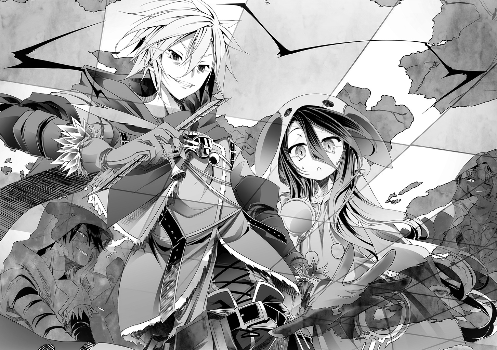
「意図なくこの世に生まれて」
「意味なく泥を啜って生きて」
「だが意義あってカッコよく、くたばる──上等じゃねぇか」
「それ以上の自由なんてあるのか、ボス？」
「最後までカッコつけて預けてやるよ。俺らの生き様を──頼むぜ、大将」
リクは顔を伏せる。心から呆れるように、だが、
「......おまえら、どいつもこいつもイカれてる。頼もしいこった──なら」
心から、嬉しそうに零し──そして──地図を広げる。
五年──いや、それ以前から、人間が生き残る為に更新を続けた──ゲーム盤だ。
無数の屍で編んだゲーム盤を、リクとシュヴィ含め一七九の『幽霊』が覗き込む中。
リクは、具体的なプランを語りだす──
「さぁ──ゲームをはじめよう」
「──『遺志に誓って』」
そう──いつも通りの返事をする皆に、だがリクは言う。
「......その言葉はもう禁ずる。我らは遺志じゃなく、同意したルールに誓い動く」
だから──そう。
「『同意に誓って』──だ」
──かくして存在しないもの達の暗躍が、静かに始まった。
未来を希望を奪われ、絶望にさえ絶望し、ついにはそれにすら飽き飽きて。
待つのではなく、見出す為に──一七九の幽霊船は征く────
■■■
「......リク、やっぱり......シュヴィ......『心』......わからない......」
会議が終わり、隠れ家の入り口でリクとカードゲームをしながら、シュヴィが零した。
シュヴィは見た──あの場にいた誰もが、リクの『心』に触れて、共鳴した。
ただ一人──自分を除いて、とシュヴィは俯く。
自分だけが、それを理解出来ないことが──酷く哀しく、続ける。
「......リク、達の......策、成功確率......どれも......一％、未満......」
まして、その全てが成功する確率など──論理的に考えて〇に等──
「ん～なぁ、シュヴィさ」
そのシュヴィの思考を断ち切るように、リクが言う。
「おまえの言うその確率って奴？ こういうことでいいのかな？」
リクに機凱種の数学知識はない。シュヴィの言動から独自解釈し──問う。
「サイコロを振って六が出る確率は六分の一。それが二回連続で出る確率は六分の一が二回で三十六分の一──パーセントはわからんが、こんな感じの計算か？」
「............そ、そう......だから──」
リクを過小評価したことなど一度もないとシュヴィは断言出来た。だがこうまで容易く機凱種の論理を暴かれたことに驚きを隠せず、故にこそ、その成功率を語ろうとし──
「ならいいことを教えるぞ。その計算──間違ってる」
──そして、固まった。
「サイコロを振って六が出る確率は六分の一。だがこのゲームじゃその計算は違ってる」
何故なら、とリクは札を切りながら苦笑する。
「六が出りゃ勝ち、それ以外全部負け。つまり──〝二分の一〟だ」
──暴論だ。だが確率はどの視点どの条件で計算するかも、重要な因子だ。
全か無か──リク視点で計算するなら、その暴論も無矛盾に成立する。
「........................」
人間に機凱種が、しかも『解析体』が、論破された──しかも、感性で。
あまりの衝撃に思考がフリーズするシュヴィに、リクは続ける。
「んで第二の間違い。サイコロを振って六が一回目で出ることもあれば──〝一万回連続で出続けることもある〟......だからやっぱりその計算は、間違ってる」
「......違う......変数、織り込めば......逆に、一万回振れば、分布誤差、収束......」
サイコロを振って六が出る確率は、厳密には六分の一ではない。変数が多い。
だが試行回数を増やせば、確率は収束し計算はむしろ楽。つまり計算通りの結果に──
そう反論するシュヴィに、だがリクはニヤニヤと笑い、
「全て織り込めるか？ 知り得ないもの、想定し得ないものを？ たとえば──」
──そう、たとえば、とリクが言う。
「〝存在しないはずの者〟がこっそり、六しか出ないサイコロに差し替えるとかも？」
──出来ない。少なくとも〝一回目は〟。
だが続ければ異常に気付き、誤差理由を暴き──そこまで考えシュヴィは固まる。
ようやく──シュヴィの中でリクの言葉、策の意味が通る。
悟られてはならない、気付かれてもいけないその真意──『作戦』は。
「......戦況を、作為的操作......気に、留められない──〝誤差〟の、範囲内、で......」
常に予測不可能な──〝意思のある変数〟に徹する。
数学的に、これ以上に計算が厄介なものは──そのシュヴィの結論にリクが頷く。
「これをイカサマってんだ。面白いだろ？」
──それでも、シュヴィはまだわからない。確率論でこの『ゲーム』は語れない。
それは理解出来た。だが、だからといって何故──
「......何故、一番......低い確率、を......期待値、に出来る、の？」
リクをまっすぐ見つめて問うシュヴィに──ふむ、とリクは考え込む。
何とでも答えられる──信じなきゃやってられないから、とか？
信じることに、希望を持つことに根拠などいらないから、とか？
──だがリクは、シュヴィが欲するのはそういう解答ではないだろうと思い。
リクは入り口の外──死の星になりゆく世界──を眺め応えた。
「シュヴィ、この世界で人間が生き残ってるっつー『結果』......何パーセント？」
「........................理解、した」
苦笑気味に言ったリクに、シュヴィは認める。確率論など、所詮統計。
結果を前には『奇跡』で一切の計算が棄却される。なら逆説的にそれは──
「......〝奇跡〟......起こせば......確率論、なんて、こじつけに......なる」
シュヴィの答えに、リクは笑って頷く。
「おまえ流に言うなら、俺達は〝計算の特異点〟として立ち回る。あらゆる予想、戦略、計算を......僅かな操作だけで、全て台無しにして、望む方向へと収束させる」
言ってリクは思う。全て予測することは不可能、その言葉は自分にも跳ね返る。
それを承知の上で──本当に出来れば、それこそまさに『神業』ではないか、と。
ならばこそと、リクはいっそう笑みを深めた。
「面白いだろ？ 天上で我が物顔でふんぞり返ってる連中の業を、たかが人間の御業にまで失墜させる。もし全て上手くいけば──さいっこーの皮肉になると思わね？」
そう無邪気に語るリクの──透き通った黒い眼にシュヴィはようやく......わかった。
──『これ』だ。初めてリクに会った日見たもの──その正体。
今ならシュヴィは断定出来る。これが『心の源』──『魂』だ。
機凱種が非論理的に〝興味〟を抱き、ついには〝憧れ〟たもの。
そうある必要があるからそうある──『対応者』でしかない機凱種にはないもの。
そうありたいと願い、挑み、足掻き、目指す──『理想』──
「まーそれに......根本的に確率論なんて所詮、机上の空論だぞ？」
確かに論破された。だが空論とまで言うのは、と困惑するシュヴィに。
「証明しよう──【問題】ここで俺がシュヴィに求婚する確率は？」
問題の意図が汲めないまま、シュヴィは概算で数値を出す。
「..................？ 問題意図、不明......概算......ほぼゼロ」
「ほらな、ハズレだ──結婚してくれ、シュヴィ」
固まるシュヴィに、リクは小さな指輪を差し出して、言った。
「確率論に〇はない──この『ゲーム』で勝利する確率は誰にも否定できない、だろ？」
小さな指輪を差し出すリクを、まん丸い瞳でシュヴィは見上げて、答えた。
「......理解、不能......拒否、する」
■■■
冷たい地に突っ伏し、リク童貞十九歳は涙に暮れながら──
「......ふ、ふふ、うふふふふふふ」
──全力のプロポーズを一刀両断され、一足早く世界の終わりを迎えていた。
なぁリク......もういいだろうぜ、世界なんてどうでもさぁ......。
初手ミスってるようなボケ、どうせあれこれミスって結局負けるさ。
もう知ったこっちゃねーわ人間も世界も滅びちまえばいいんだ。
あぁ......コロン、僕もう疲れたよ......あはは、ふふ、うふふふ。
「......リク、説明を......求める......」
「いえ......すんませんしたちょーしこきました童貞の分際で......傷口広げないで──」
そう、壊れたように笑って地に伏せるリクに、だが。
「......拒否......説明、が......欲しい」
シュヴィは、不自然なまでの無表情で問う。
「......『結婚』──人間が繁殖の番いとの間で交わす契約......」
そしてまるで辞書から引いたような──それも偏った──情報を基に推測する。
「......シュヴィ、の、有用性を評価......占有、したい......？」
「ちがぁぁぁう！ 単純にシュヴィにずっと側にいて欲しいんだよ！」
「......何故？ いま、側......いる」
「そういう意味じゃなくてさぁ......だからこう、人生の伴侶としてッ」
「......伴侶──連れ立って行く者。なかま。また──配偶者......？」
「そう！ それだよそれ！ 配偶者って意味でだッ！」
だが必死で頷くリクに、シュヴィはなおも無表情で言う。
「......配偶者......夫婦。シュヴィ、機凱種、繁殖、出来ない」
「問題ないねッ!!」
「......繁殖行為......出来ない......リク、一生......童貞......？」
────、
「問題ないねッ!!」
「......一瞬......間が、あった......」
「あぁもぉおおどうでもいいんだよぉ細けぇことわぁッ!!」
誤魔化すように叫ぶリクに、だがなおも──
不自然なまでに無表情のシュヴィは続ける。
「......種族を跨いだ......夫婦、前例......ない」
「なら俺らが世界初だッ！ パイオニアだやったなッ！ ひゃっほ～ちくしょぉ!!」
ヤケクソ気味に叫びながらリクは謎の確信でなおも食い下がる。
ここで引いたら負けだ──という根拠のない確信に。
だが、その勢いに圧されたのか──徐々にシュヴィの表情が崩れる。
「......無理、だよ......だって──」
「............シュヴィ？」
──そう、困惑、混乱、そして何故か──悲しい表情で。
震え声で言うシュヴィにリクが気づき、心配するように名を呼ぶ。
リクは知らない──それが。
──大量のエラーを吐き続けるシュヴィの思考に、トドメを刺したことに。
思考が加速度的に破綻していく──不正と矛盾と破綻が無限増殖していく。論理性破綻と矛盾と無限循環。だがその論理を上回る『思い』が禁則事項を悉く塗りつぶしていく。
「......だって──リクの──」
口を開くシュヴィに──論理が規定が絶叫する。言うなと。
だが『矛盾』──そうとしか認識出来ないものが──絶叫する。言えと。
機凱種にあるまじき、葛藤。論理を優先するか、エラーを優先するか。
だが思考の中──リクと初めて会った時の映像がループし続ける。
そこに付随する──『恐怖』や『罪悪感』という未定義のエラーが矛盾し続ける中。
──シュヴィ自身が最も信じられないことに、思考は──
「......だって──リクの故郷......滅ぼした、の──シュヴィ、だよ......？」
──震えた声で......エラーを優先した。
■■■
──十二年前、機凱種は、例外的な大規模交戦を行った。
相手は龍精種の【王】を冠する三体の一──『焉龍』アランレイヴと従龍七体。
対する機凱種側の戦力はクヴェレを始めユーバ連結体八つからなる『複合連結体』。
各連結体、四三七機──総計で三四九六機。
機凱種が保有する全戦力の、実に四分の一を投入した、超大規模交戦。
戦闘結果──機凱種の戦略的勝利。彼我損害は以下。
彼──『焉龍』アランレイヴ、及び従龍七体《殲滅》。
我──投入戦力の四二％に相当する一四六八機損失、事実上の《壊滅》。
その損失の殆どは、『焉龍』アランレイヴの最期の攻撃──
自己崩壊、命を代償にする最期の咆哮──『崩哮』による被害だった。
焉龍の『崩哮』初動〇・〇〇七秒、交戦中の機凱種、約二割が揮発。
遅れること〇・〇一八秒『観測体』からの情報に『解析体』は速断。
焉龍級の『崩哮』を防ぎ切る兵装、当時の機凱種には該当なし。
また『指揮体』へ解析情報転送『設計体』に新造させる〇・四秒の推定被害を算出。
推定被害・戦力の九割損失。戦略上〝殲滅〟に等しくそれは敗北を意味した。
だが一機の『解析体』は『崩哮』を防御ではなく──〝逸らす〟ことを提案。
機凱種が有する〝エネルギー指向を歪曲させる〟兵装、Ｏｒｇ．２８０７──『通行規制』。
当該装を複数典開すれば、損害は追加二割に留まるという試算が出た。
提案は『指揮体』に即採決され、『崩哮』は指向歪曲し戦場の彼方へ逸れて──
機凱種の損失は辛くも──《壊滅》に留まった。
提案を行った『解析体』は、逸らされた『崩哮』を、被害から要再解析と判断。
爆心地遠方にありながら壊滅した人間という獣の巣と推定される廃墟に降りた。
そして──
「............────」
タイル模様の板を握り締め──『解析体』に視線を向ける人間の仔を感知した。
人間の仔の視線には敵意があったが、その上で──背を向け、立ち去った。
──『解析体』──事象を解析考察する機体には、その行動が不可解だった。
その人間の仔は極限状況にあり、だが混乱も脱力もなく『敵』を認識し。
その上で、生存を選択した。それは、獣の生存本能とは明らかに違った。
何故なら『解析体』に向けた視線には恐怖も、虚無もなく、ただ果てしない──
焉龍の『崩哮』さえも超える程の──〝熱〟だけが感知された。
『解析体』はエラーを吐いた──『驚愕』という名のエラーを。
その仔は、勝てると確信していた──今はまだ無理、というだけで。
仮定。あれが、機凱種が有さない──心、命ではないか、と。
根拠を要さず何かを断じる性質、演算を超えた何かを確信たらしめるもの。
──そう判断した『解析体』は人間──特に、あの仔を要解析と認識した。
だが──その後の解析で多大な【破綻】が生じ連結解除──破棄された。
機体個体識別番号──ｃ２０７番機Ｐｒ型４f5７t9機。
──後に、その仔自身に。
──〝シュヴィ〟と名付けられた機体だった。
■■■
「......それ、で、も......リク、同じこと......言え、る......？」
全て語ったシュヴィは、リクの顔を見られず、ただ俯き震える声で呟く。
──【不正】【異常】【破綻】【疑問】【循環】【不解】【不明】【損失】──
シュヴィの思考を埋め尽くすのは、相も変わらず嵐のようなエラーの連鎖。
──【自問】何故話した？ 論理的にも非論理的にも利益のない行動だ。
──【論理解答】利益──なし。損害──観察対象との敵対によるロスト。
──【非理解答】利益──なし。損害──リクに嫌わ、れ......る？
──損害？ 嫌われることが？ 第一に挙がるほどに？ エラーエラーエラー......
「......シュヴィ、あのさ──」
リクの声に、シュヴィは自分でも驚く程に肩が跳ね上がるのを感知した。
エラーの嵐が大音量で叫ぶ──『逃げろ』と。
──逃げる？ 何故？
エラーの嵐が大音量で答える──『怖いから』と。
怖い。恐怖。機凱種にそんな概念はない。だがその思考を否定出来ない。
現にこうして俯いているのは何故だ。リクの顔を──見るのが──
たまらなく──〝怖い〟から──再度エラーの嵐が吹き荒れる思考の中──
「......気付いてたよ。なんとな～くだけど」
聞こえた言葉にエラーが一斉に黙り、たった一つの疑問に収束する。
「......どう、して......」
「んー......最初に違和感を覚えたのは、恥ずかしい話だが──」
頭を掻いてリクが恥ずかしそうに言う。
「......初めて会った時、なんで俺が童貞なの知ってんですかねぇ、と」
「────────」
完全に、文字通りフリーズした様子のシュヴィに、苦笑してリクは続ける。
「まー他にも、俺に『心の再確認』つったり、この世界で人間が生き残ってる因子を〝俺の心〟と決め打ちで言ったり、そもそも何故集落からあんなに離れた場所で〝待ち構えてた〟のかとか、ゲーム番号〝一番〟が何でチェスなのかとか──まぁ、うん」
意外と詰め甘いよな、と照れ笑いで言うリクに、シュヴィはただただ目を丸くする。
言葉を失う。思考はエラーに染まり空転しかしない──だが、疑問が漏れた。
「......な、のに......なん......で......？」
「ん～......なんでだろな？ ははっ、わかんないなぁ」
本当に自分でもわからない様子で、笑いながらリクは続ける。
「──それを全部織り込んだ上で、シュヴィに惚れたから、かなぁ」
────。
「......過去、を、忘れる......？」
「いや。シュヴィが俺の故郷を結果的に滅ぼした......それは確定してる過去だ」
その言葉に、シュヴィは無いはずの『痛み』に倒れ込みそうになるが──
「ん～......まーやっぱ俺、アホなんだよ。だってさ、同時に、こうも思うんだ」
照れ隠しか、それとも本当に自嘲なのか。頭を掻いて、
「シュヴィが俺の故郷を滅ぼしたって過去否定したら──俺ら出会ってないだろ」
「────............っっ」
息が詰まる。呼吸器官などないはずの機械が。
「結果は結果。それをねじ曲げても仕方ない。人間は、そういう生き物じゃない」
ゆっくりと歩み寄り、しゃがみ込んだリクの手が、
「結果に歯噛みして悔やんで泣き叫んで──次は、次こそは、と前に進む──だから」
──そっとシュヴィの頬を包んで持ち上げた先で、
「だから......シュヴィは俺に興味を持ってくれた、だろ？」
子供のような笑顔でそう言うリクが待っていた。
リクの眼に映り込んだ自分の怯えた表情に、シュヴィ自身さえ驚く。
それを宥めるように、静かな声でリクが続けた。
「俺は、一切の過去を否定しない」
────、
「シュヴィの過去、側にいてくれる今、これからもいて欲しい未来の全てを、愛する」
────────、
「罪の意識も。もーポイしろポイ。あいにく人間は──いや俺が馬鹿なだけかな。ともあれ──今以外を見る余裕ない。明日に期待し、次に希望する。過去を踏まえた上で、な」
だから──とリクはシュヴィの左手をとり、
「シュヴィがいてくれれば、こんな世界でも、生きたいって思える」
薬指にそっと指輪を通して──
「シュヴィがいてくれれば、どんな困難にも、心が折れないと思える」
指輪の──シュヴィの目のように赤い石を見せて──
「シュヴィがいてくれれば、二度と笑えなくなることはないと思える」
そして何処か困ったように──言う。
「だから、さ。俺のこと嫌いじゃなきゃ──」
「嫌いじゃっ......ない──ッ！ そんなこと、ない──ッ」
リクの言葉を切るように頭を振るシュヴィに──なら、と。
手をさしのべて、リクは──願う。
「理屈なんか全部無視して──同じ道を歩いてくれないか。俺の妻として、さ」
......。
............ふと、シュヴィは気付く。
いつの間にか、思考を埋め尽くすエラーの嵐が止んでいることに。
「............そ、か......」
──機凱種は、対応する種族。必要とあらば必要なように自己を作り替える。
いつ〝そんな機能がついたか〟は不明だが──頬を伝った一筋の涙に、理解する。
エラーの嵐。論理と矛盾するそれが、まとめて名称をつけられ処理されていた。
即ち──『感情』と。
「......リク」
「うん」
「......文字、通り......見た目、通りの......不束モノ──だけど」
「バカな俺には出来すぎた嫁だと思うけどなあ」
そう苦笑するリクに、だが。
まだ、表現の仕方まではわからない『感情』にシュヴィは。
うずくまり、濡れた声で──絞り出すように、答えた。
「......ずっと、ずっとずっと──側にいさせて、くだ、さい......」
■■■
「......結局最後まで覗き見る形になっちゃったじゃないのよ......もーバカ弟め......」
──隠れ家の入り口の外で、コロンがため息をついて呟く。
隠れ家の位置を聞き、一足早く向かったコロンは期せずして一連を覗き見てしまった。
──だってしょうがないじゃん。顔出すタイミングを逸してしまったんだもん。
まだ泣き止まないシュヴィの背中を撫でるリクを陰から眺めてふと思う。
壊滅集落から生き延びたリクが、コロンの里の大人達に保護された日を──
────............
「もしもーし、キミキミィ！ どうしましたか～？」
誰にも口を開かないリクに、同い年のコロンなら話が出来るのでは......と。
期待した大人達が顔を覆った。どうもこうもない、壊滅集落の生き残りだぞ、と。
「よーし言いたいことあるならお姉ちゃんが聞いてやろう♪ ほれほれ言うてみ～☆」
そう言ってリクをくすぐるコロンに、リクは一言、口を開く。
「......うざ」
「ふっふーん、こんな時代、その程度で傷つくお姉ちゃんではないのだぁ！ さぁさぁ、口がきけないって言い訳はもう通用しないぞぉ～？ 何があったのかなぁ～？」
ポツポツとリクが語る。南から来た光、集落が焼け、炭になった親をどかし東へ──
「──生き残りは探さなかったの？ 光は南から来たのにどうして東に？」
はっとする大人達を他所に、リクはなおも淡々と答えていく。
──生き残りがいても治療出来ない。歩けるほど無事なら自分と同じく避難する。
──東に向かったのは、そこが荒野......黒灰が積もらない、だから。
──更に東に向かえば川があったはず。そこまで行ければ生き残れると思った──
その子供とは思えない冷静さに、大人達が言葉を失う中、コロンは問う。
「......生き残ってどうしたかったの？」
「......次は、勝つ......その為には、生き残らなきゃ......」
──〝次〟......次と答えた。そして──勝つと口にした。
大人達は揃って呆れ顔になり、だがコロンは頬ずりして叫んだ。
「あんっ！ もこの子、私の弟にするぅぅッ!!」
コロンは気付いていた。次は勝つと口にした時の眼──底知れないその眼に。
だからコロンは咄嗟に思った。一人に出来ないと。側にいようと。あの時決めた。
リクが暴走しないように──死に急がないように──だけど、本当は──
────............
「知ってたよ......あの子に必要なのは止める姉じゃなく。同じ道を歩ける人だって」
彼は、リクは、遠くへ往く。遠く遠く、自分なんてついていけない所まで──
......ま、でも、それはさておきまして......っと。
■■■
「いつまでシュヴィちゃん泣かせてんのよッ！ このダメ夫はぁぁぁあッ!!」
唐突に。物陰から飛び出した何者かに拳を腹筋に埋め込まれてリクは唸った。
──何が起こった、と思考して顔を上げると、仁王立ちでコロンが言った。
「とりあえず姉として──結婚おめでとう、と言わせて貰うわねっ♥」
──ふむ、しばし待ってくれ、とリクは腹筋をおさえて立ち上がる。
「コロン──え、あのさ......なんで知って、つか、なんでいんだ？」
「え？ 隠れ家に着いた。いい雰囲気──覗き見っきゃないでしょ？」
悪びれることなく、それ以外の選択肢があるのかという顔でコロンは言う。
──この自称姉......何処まで──と思うもリクが頭を掻いて、
「あー、じゃあ、コロンに隠し続けるのもアレだろうから──」
「あ、シュヴィちゃんが人間じゃないってことなら知ってるけど、それ以外の話？」
............
────────は？
「ちょ、待て......は、いつから気付いて......」
「集落に連れて来た時。抱き付いた感触が明らかに人間じゃなかったもん」
むしろ何故気付いていないと思っていたのかという態度のコロンに。
──ふと、シュヴィは思い当たり、理解する。
──〝リクの何処に惹かれたのか〟と質問されたあの日の感覚。
この人は......コロンは、本当はこう聞きたかったのだろう。
──『なんのつもりでリクに近づいたの？』──と。
だからこそ──あの不思議な緊張感だったのだ。
「......わかってたなら、なんで、何も言わなかったんだ」
人間じゃないと初対面で気付いたなら、ロリコンだと騒いだ意味がわからない。
集落に他の種族を連れ込んだんだぞ──警戒なり、警告なりするべきでは──
そう呆れるリクに、だがコロンはさらりと──本物の姉のような笑顔で言う。
「だって、リクが選んだ子でしょ？」
「────」
「最初は事情があったんでしょ？ リク、シュヴィちゃんを最初に連れてきた時、今にも切れちゃいそうなくらい、張り詰めて──だから私も、合わせてあげたんだけど......」
──なるほど。
こちらの事情を読んだ上で、過剰に気付かぬふりをするなら──それしかない。
しかもそれは──リクを信じたということに他ならず──
「でもまあすぐ打ち解けたみたいだし!? こんな可愛い妹が出来るのよ!? もー別に人間かどうかなんて関係ないでしょ!! あのねシュヴィちゃん人間には結婚したら家族とチューするってしきたりが太古の昔から──」
「ねぇよッ！ シュヴィも真に受けんな離れろッ！」
「あ、ねぇリク！ せっかく家族が出来たことだし──結婚式をあげなさいよッ!?」
「──コロン、気持ちはありがたいけど、俺らはもう、存在してな──」
そう言いかけて──コロンの真剣な顔に気付き、言葉を切る。
──リクにも、コロンにも、家族と呼べるものはいない。
もう......いないのだ。
まして表向き、リクもシュヴィも、最早死んだ身だ──それは......
「私が仲人やるから〝正式な夫婦〟として、ね？ 三人だけの結婚式どう？」
だが意外にも、シュヴィが答えた。
「......したい......」
リクを見上げて、零す。
「......正式な、夫婦......なりたい......」
────............
──なんてことはない、簡単な儀式だ。
誓いの言葉を交わして三人の名前を書類に書いて終わり。
本来なら集落の者を集めるのだが──リクとシュヴィは死んだことになっている。
だったら、とコロンがその場で行うことになった。
「夫リク、シュヴィを妻とし、共に歩み、支え、愛し、生き残ることを誓いますか」
コロンの言葉に──なんともこの時代、あの集落らしい誓いの言葉だと苦笑する。
集落内で結婚式が行われる度、目を伏せるしかなかったその文言を、だが今は──
「ああ、誓う」
「もぉリクッ！ ここは『遺志に誓って』って──」
「悪い、ついさっきそれ廃止した。だから──『同意に誓って』だ」
その言葉に頬を膨らませコロンはぶつぶつと零す。
「......私の知らないところで、色々やってるの、なーんか気に入らないわ......」
「おーい仲人。私語が多いぞ～？」
外野さながらブーイングするリクを睨み、咳払いを一つ。
今度はシュヴィに向き合って、コロンは誓いの言葉を問う。
「妻シュヴィ。リクを夫とし、共に歩み、支え、愛し、生き残──」
「......誓、う......」
食い気味の即答。形式無視の連続にコロンが肩を落とすが──シュヴィは続ける。
「......シュヴィの存在、生まれた、意味......心をくれたリク、に、誓って......絶対、リク、死なせない......生き残って、最後まで......一緒に、いる......『同意に誓って』......」
────。
ほっほ～と、リクに視線を向けコロンは貴重な物を見た。
まさか──赤面するこの弟の顔を見る日が来るとは。
「じゃ続けてシュヴィ。夫リクの──〝素敵なお嫁さん〟になると誓いますか？」
「......素敵、な......お嫁、さん......？」
悪ノリが始まった、とリクはため息、定義不明の言葉にシュヴィは首を傾げるが──
「リクを悲しませない。笑顔を失ってたこの子から......もう笑顔を奪わない......」
真剣な面持ちで問うコロンに、シュヴィは黙考する。
「......出来る？」
────。
正直、自信がない。どうすれば、出来るかわからないが──シュヴィは答える。
「......誓う......〝素敵なお嫁さん〟......に......なる」
......うん、と。安心したように一つ大きく頷き、そして──
「あ、あと、ちゃんと夜の生活も素敵なお嫁さんの必須条件よ？ 床上手は──」
悪ノリを加速させるコロンは、しかし、
「あー、コロン。シュヴィは、そういうの出来ないんだ。ほら、種族が──」
リクの言葉に──顔を引き攣らせて反省する。
せっかく場を和ませようとしてたのに、失言だった──と。
だがふいにシュヴィが手を上げ、
「......シュヴィ、構造、わかれば......自己構築────『穴』作れ、るっ」
「なん──だとッ!?」
「あら♪ やったじゃないリク！ 童貞卒業おめ──」
「......だから、コロン......シュヴィに、コロンの生殖器、見せ──」
────────世界は理不尽である。
頬にブチ込まれた拳に脳を揺らされ、リクは想った。
「──って、何で俺が殴られんだよっ」
「あんたが一生童貞でいれば済む話だからよッ！ ──さて」
そう言って、コロンがいつも腰につけていた石を取り出して言う。
「それじゃ、ここに三人の名前を彫ったら、正式な夫婦ね」
リクが何も説明していないにも拘わらず、コロンは意図を汲んで的確に続ける。
「......あんた達表向き存在してないなら、書類は残せないんでしょ？ この宝石は、私の祖父から継いだものなの。三人の名前を刻んだ面に装飾しちゃえば──ね？」
──なるほど、誰も見ることが出来なくなるわけだ。
さすがとリクは内心、感心する。やはりコロンになら──皆を任せられる。
何故なら、石には既に──コロンのフルネームが彫られていたから。
リクも、シュヴィも、苗字がない。つまりコロンの本当の意図は──
「......これで、二人は夫婦。そして私の、正式な弟と妹よ」
嬉しそうな、だが同時に寂しそうな顔で、そう告げる。
苦笑を一つ──リクとシュヴィは、互いに刃物を手に取り。
コロンの苗字を、自分達の名前の下につける。何とも語呂が悪い気もするが──
刻印を終えたその石を、誰よりコロンが眩しそうに眺め、大事そうにしまう。
そして──本物の姉より姉らしい顔で。
「......ねぇ、リク、シュヴィ」
止めたい、でも出来ない。そう理解して、それでも無理に作った──そんな笑顔で。
「二人が──皆が何をするのか私は知らない──二人はこの世にいない、でも」
言って、二人の──弟妹を抱きしめて、コロンは言う。
「私は知ってる──大事な弟と可愛い妹がいる。だから......お願い」
「──もう、家族を失いたくないの。無茶は、しないで......」
──顔は見えない。だが震え声で囁くコロンに、二人の弟妹は頷いた。
「ああ。誰も死なないし死なせない。この『ゲーム』だけは──必ず勝つから」
「......任せ、て......おねぇ、ちゃん......」
■■■
────............
──『幽霊』達が囲む円卓で、幽霊の長は、『盤上』に手を広げる。
「俺達は存在しない」
「誰も殺さず、誰も死なせず。あらゆる手を利用し、情報と、策謀と、ペテンだけで戦局を誘導する──ルールがあり、勝利条件があるならこれは明白に『ゲーム』であり──」
「全てはこの地図──つまり盤上だけで決する。ならば......『コマ』を決めよう」
幽霊達の視線を一身に受けて、幽霊の長は──白いコマを取り出す。
「これが俺達だ」
──白い、キング。
「最弱のコマ。何者にも成れぬコマ。だが最重要のコマ。討たれれば終わりのコマ」
それを地図──訂正、『盤』の外──テーブルの端に配置して、続ける。
「我々はキング。だが同時に──『幽霊』でもある」
存在しないもの。存在してはいけないもの。故に感知を許さぬもの。
「我々は何処にもおらず、何処にでもいる。この盤の外から全てを手繰るもの」
そして、続けて複数のコマ──全てが白いコマを取り出し、
「一つもコマを獲らず、ゲームに勝利する。故に全ての種族は──『白』だ」
そう言って──『白いポーン』を取り出し──
「これが──獣人種だ」
白いポーンを──『盤上』に──獣人種の棲息地帯に置く。
............────
■■■
──三匹の獣人種が気配を殺し、餌を探して森の中を彷徨っていた。
こんな世界、時代、如何に獣人種といえど食料の確保は容易くはない。そもそも生きているまともな動物が少ない。ましてリスクを冒さず〝狩れる〟他種族は限られている。
五感を研ぎ澄ませ、匂いを辿り──ようやく一匹の獲物を見つけた。
──人間だ。あまり美味しくはない動物だが、腹の足しにはなる。
獣人種だけが聞こえる声で連携する。相手が人間であろうと油断はしない。
包囲して一斉に襲いかかり──牙を突き立て──
「────ッ!?」
──ようとしたところで、一斉に跳ねるように後ろに飛び退った。
「さっすが獣人種。俺を食うなら構わねぇが──味の悪さは保証するぜ？」
「......何者だ、おまえ」
獣人語で話しかける人間に似た何かに、三匹の獣人種は警戒心剥き出しに問う。
酷く臭い──〝大量の毒〟を服用した、獣人語を操る〝ナニカ〟が答えた。
「獣人種が拠点にしてる西の湾岸の森......地精種が爆弾の起爆実験しようとしてるぜ」
「──なにを、言ってる」
三匹が一斉に、心臓の鼓動から血流の音まで聞き取る五感で相手を〝観察〟する。
──体温異常、心拍数も異常、だがそれは毒によるものだ。瞳孔は──
「疑うなら、この地図の場所に行ってみろ。おまえ血壊個体だろ？ 地精種の施設なら、なんなく潜り込んで連中がやってることを暴けるはずだ。ヒントだけ言っておこう」
──嘘の反応──なし。三匹が結論づけると同時。
その人間は、言う。
「──神霊種さえ殺せる──『髄爆』っつー大規模破壊兵器だ」
「「「──ッ!?」」」
再度、心拍反応、瞳孔、毛細血管の血流の音までを聞き取る──嘘は──ないっ!?
「探しな。で、どっかに持ち去るか連中の資料や機材壊しとけ。間違っても兵器を壊そうとするなよ？ その瞬間全て消し飛ぶ可能性もある。ルーシア大陸の西、まるごとな」
そして、その謎の〝ナニカ〟は、言うだけ言い切ると、そのまま悠々と立ち去った。
────............
「──シュヴィ、反応は？」
「......ない......大丈、夫......」
リクの問いに、霊針盤を使う──フリをして、シュヴィが生体反応を探る。
誰もいない、その確認が取れたところで『幽霊』達は一斉に地精種の施設に潜った。
「つーか......こんなことやらかす連中と〝対話〟とか、二度と勘弁だぞ大将」
──かつてアレイという名があった『幽霊』が周囲を見回し、息を呑む。
地精種の施設だった鋼鉄の建造物は、巨大な爪痕を刻まれ、その原形を留めていない。
地には身の丈ほどの深さにまで達する爪痕さえ刻まれていた──だが。
「必要なら何度でもやらす。獣人語を完璧に話せるのはお前だけだ。血清も効いたろ」
「ああ、バッチリな。ほんの二日痙攣しただけで済んだよ」
淡々と答えるリクに、『幽霊』は苦笑して返す。
──なんてことはない。イワンが遺した戦略図を〝少し応用〟し、集落を消し飛ばした地精種の墜落戦艦に潜入、通信して僅かばかりの情報を〝やりとり〟しただけだ。
あとは事実を獣人種に伝えるだけでいい──獣人種の住処が起爆実験予定地だと。
「しっかし何匹『血壊』で乗り込んだよ。ここまで壊して本当に死人出てないのか大将」
「ああ出てないさ。血の跡はないし──さすが獣人種、勘は見事なものだ」
獣人種の五感なら、遠方から施設内の人数まで、文字通り人外の感覚で割り出せる。
──そして適切な数の血壊個体で乗り込めばいいだけだ。
地精種はバカじゃない。全て消し飛ぶ爆弾の横でおいそれと魔法は使えない。
そこに血壊の獣人種が複数出現したら？ 逃げる以外の選択肢が？
そして獣人種もバカじゃない。逃げる地精種より優先すべきものは──
「──噂の『髄爆』は持ち去られたようだな大将。獣人種か、それとも地精種か」
「獣人種だ。鋼鉄の床や壁に〝足跡〟をつけられる連中が他にいるか？」
──無理矢理運び出したのだろう。
だがあの爆弾の危険性は『獣人種の勘』が一番分かっているはずだ。
故に奴らが出来ることは──爆弾の破棄、そして──逃亡だ。
「だから言ってる。これは、『ゲーム』だ」
条件が揃えば、特定の種族は特定の種族に対しまるで無力。だからこそ戦は続いている。
「だが地精種はここを放置しない。制限時間十五分。情報を集め消える。『幽霊』は──」
「何処にも存在しない──『同意に誓って』──」
幽霊達が一斉に散開、情報をかき集める中、シュヴィが問う。
「......これ、が......コマを......〝成らせる〟......こと？」
「そこまでのことはしてない。まだな──ただ」
獣人種をポーンとした理由──それは。
敵陣深くまで行けば、クイーンにすら成るからだ。
だが──と、リクは苦笑する。
「ポーンでも、ビショップは獲れる......それだけのことだ」
■■■
────............
再度、『幽霊』達が囲む円卓で幽霊の長は、『盤上』に手を広げる。
そして──『白いルーク』を取り出し──
「これが──森精種だ」
そう言って白いルークを──『盤上』に置く。
森精種の──首都の座標に。
─────............
■■■
森精種の首都──その郊外の屋敷で。
帰宅した森精種──ニーナ・クライヴと呼ばれている者は、
「──ッ!? ......誰？」
瞬時に侵入者の気配を察知し、探知魔法と照明魔法を張って警戒した。
照らされた闇の奥には、闇に溶け込むようにテーブルについたローブ姿。
全身をボロ布と獣皮で覆い、毛皮のローブをまとい目深にフードを被った影が言う。
「......ごきげんよう、勝手にお邪魔しているよ」
流暢な森精語で、気さくに語りかけた影に、森精種は咄嗟に攻撃魔法を編み──
だが撃たない。同時展開した二つ目の術式──解析魔法が、告げたからだ。
──『識別不能・正体不明』と......さぞかし驚いたことだろうと影は嗤う。
姿形を偽ろうと──まさか魔法を使っても輪郭すら暴けぬとは思わなかっただろう。
故に、彼女は問うしかない。
「──誰、と訊いてもよろしいかしら？」
正体がわからぬものに、下手な手は打てない──影は笑う。
「ただの『幽霊』と名乗ろう。君の敵ではないが味方でもない、とも言っておこう」
当然、森精種は魔法で言葉の真偽を探る──だが『幽霊』はその結果を知っている。
──『幽霊』は〝偽〟で、それ以外は〝真〟──魔法はそう答えるだろう。
敵でも味方でもないのは事実だからと『幽霊』は薄く笑う。
「──人の家に勝手に上がり込んだからには、相応の用件がおありでしょうね？」
だがその意味を理解出来ない森精種は問う。当然あるとも。
理由もなく森精種の都に──ただの人間が潜入するとでも？
「──簡単なゲームをしようと思ってね」
「......は？」
「互いに賭けるチップは『情報』......私に勝てば提供し、負ければ頂く」
なおも警戒するニーナに、だが『幽霊』はそれでいいと内心嗤う。
ニーナ・クライヴと呼ばれる森精種。優れたキレ者、当代随一の術者でもある。
──だからこそ接触相手に選んだと、リクは思考を先読みする。
「相互の情報が事実かどうか、担保のないチップは賭けにならない、か？」
「────────ええ、そうね」
ニーナは、思考を読まれた可能性を危惧して慎重に応じる──当然だ。
キレ者が『正体不明』と相対すれば、まず最悪の可能性を考慮する。
すなわち──己より上位の種族という可能性。
だがその頭の良さ故に、素直に引きもしない。
上位種族、下位種族、同族、三つの可能性はまだ重なっているのだから。
故にこそ、『幽霊』は嗤って思考した。──こいつは必ずゲームに乗る。
「では一つ進呈。真偽に関わらず無視出来ぬ情報ならゲームは成立すると証明しよう」
たとえばそう、この言葉を口にすれば──必ずゲームに乗る。
「〝『虚空第零加護』の存在が地精種に漏れている〟──など如何かな？」
「────ッ!?」
『幽霊』には感知出来ないが、再び魔法で嘘を探られただろう──だが無駄だ。
「......ご納得頂けたかな？ 情報の真偽は問題ではない。『虚空第零加護』の理論提唱者であり、術式編纂者である君なら、真偽など己の伝で精査可能──相違あるまい？」
森精種が平静を繕って焦りに思考する。『幽霊』にはそれが手に取るようにわかる。
──『虚空第零加護』は、理論提唱者すら秘匿されている超重要機密だ。
開発に携わった個人名に至っては機密書類にすら〝暗号で〟記録されていた。
森精種の廃都、シュヴィが見つけた地下室に残されていた──僅かな書類に。
それを知らぬ彼女の眼には──『幽霊』は全て知っている存在として映る。
そう、何者であろうと──下手な手は打てない存在として。
「............────」
やはり感知出来ないが、森精種は『幽霊』の言葉を魔法で多重に探っているだろう。
だが──無駄なのだ。偽りはない。
情報は確かに漏れている。〝漏らしたのは他ならぬ『幽霊』自身〟なのだから──
「......いいわ。あなたが何者でも、放置は出来ないようね」
そう言って、『幽霊』の対面につき、手を組んで問う。
「それで、ゲーム──チップというからには、カードゲームかしら？」
「いや『早指しチェス』だ──互いに不正がないとわかりやすかろう？」
言ってテーブルの上にあったチェス盤に視線を落とし、森精種は言う。
「──いいわ、では、はじめましょう」
「ああ、だがその前に......」
と『幽霊』が、小馬鹿にするような声で言う。
「コマを戻してくれるかね？ 先手は白であるこちらなので。申し訳ない」
「────────ああ、ごめんなさい。チェスにはあまり詳しくなくて」
──そう嘯いて〝見抜かれた〟ことに内心舌打ちし、その表情が僅かに歪む。
おそらく〝全力〟──八重術式で偽装しただろうペテンが見破られた。
ニーナと呼ばれる森精種は考える──やはり正体不明の相手を試すのは危険か？
そしてコマを戻し、同時にこうも考えるだろう──
「それじゃこちらのチップは......『虚空第零加護』の理論提唱者が実は──」
「君ではない──という情報なら持っている」
別の手段で試す──そう内心嗤う森精種は、続いた言葉に──
「というのが嘘だという情報、その嘘を私に信じさせる魔法を使うという情報も」
──血の気が引いていくのが見て取れた。
「さて、私に嘘が通用するか確認は済んだかね。そろそろゲームを始めても？」
と楽しげに問う『幽霊』には、魔法を使わずとも相手の心境が手に取るようにわかった。
何者だ、一体なんなのだこいつは──そんな顔をしていたからだ。
その姿に、『幽霊』は──リクは苦笑する。
──種を明かしてしまえばなんてことはない。
リクは人間、魔法を感知出来ない──コマを動かされたと認識なぞ出来てない。
だが当代随一のキレ者、術者である森精種が、配置済みのチェス盤を。
正体不明の者に差し出されたらどうするか、予想はつく──故に。
〝どのコマ〟を動かしたか言及せず、嘘を信じさせる魔法も〝使わせなかった〟。
──ただのブラフ。だが彼女の目にはそう映らない──映るわけがないのだ。
これらのブラフは──一つでも読み違えれば、終わりだ。
そこまでの綱渡りをする必要性、彼女には決して......想定しえない。
そうまでしなければならない、人間という最弱を......想定しえない。
故に、こう情報を精査する──
──『幽霊』に偽装魔法の類は感知出来ず、また、嘘も検出出来なかった。
当代随一──過去でさえ伝説の領域『八重術者』である彼女に看破出来ない魔法。
もしもそんなものが使われているなら、どちらにせよ、対抗する術はない。
心理戦でも主導権を握られ──だが無視出来ない情報をチラつかされた。
敵でも味方でもない──今はその言葉を信じて情報を引き出すしかない。
この『幽霊』の言葉通り、真偽は自分で確認すればいい──と。
だがそこまで思考を整理出来た時点で、今度は──
「賭ける情報は自分で設定。情報に価値無しと判断すれば変更要求可能でどうかね？」
──都合の悪すぎる情報を引き出させられる懸念。
その思考に行き着くのを待っていたように語るリクに、森精種は舌打ちする。
──何故、リクが彼女を接触相手に選んだか。
彼女は森精種の決戦兵器と思しき『虚空第零加護』の編纂者で、多大な情報を有する者。
そして、極めて優れた術者であり、キレ者──優れた〝知性〟の持ち主でもある。
だからこそ彼女を選んだ──〝それだけだから〟だ。
結局魔法の技量、いざとなれば全て破壊出来る担保の上の──〝知性〟で。
愚かさと弱さから生き残る。それ自体が命綱である人間の──〝知性〟と。
人間を──最弱を相手に知性で張り合おうなど、無駄な足掻きだ。
故に──こいつは、必ずこう思考する。
「つまり──『あなたの正体』を要求する場合は......」
「そちらにとっても、極めて都合の悪い情報を対価として賭けることを要求する」
──そう、それこそが目的であると──森精種は思考する。
楽観的思考は捨て、『敵』はこちらの嘘を〝全て暴ける〟と仮定しろ。
その上で、引き出せる限りの情報を引き出し、自称『幽霊』のその意図、正体は、得た情報から探り、追跡することも可能なはずだから──と。
「いいわゲームをはじめましょう。敵でも味方でもない──害意はないと仮定するわ」
その言葉にリクは内心嗤う──そう必ずそうする、と。
優れた知性があるからだ。強いからだ。そこに誇りがあるからだ。
──だからこそ──容易く読める。容易く誘導出来る。
そしてやはり、全てを見透かすような笑みを浮かべて、リクは手を翳した。
「では──『幽霊』の流儀で宣言を行い、ゲームをはじめよう。復唱してくれるかね？」
即ち。
「──『同意に誓って』と......」
────............
「......それじゃ、まずそちらが進呈してくれた情報──」
「地精種に『虚空第零加護』が漏れた経緯と、可能なら証拠の提示を要求するわ」
「それは進呈したチップだ......わざわざ賭けるまでもなく提供しよう」
と言って、リクは地精種の墜落戦艦から送った通話の記録された録音石を差し出す。
漏らした者がバレる情報は賭けられない、だからこそ──進呈にしたのだから......
「それより──こちらが提供する情報は──」
そして──それ以上の釣り針と餌をチラつかせる。
「『虚空第零加護』を知った上で、地精種が問題ないと判断した、根拠を賭けよう」
「────なん、ですって？」
──『虚空第零加護』を〝問題ないと認識された〟。
それが意味することは、三つしかありえない。
過小評価か、防ぐ手立てがあるか──それとも、まさか──
「──その〝まさか〟だ」
そう、ニーナと呼ばれる森精種が思考するのを待って──リクは言う。
思考を読まれている──その錯覚をより深める為に。
だから──彼女もまた応じる。
「......あなたは掴んでいるというの。その情報を」
──〝まさか〟の具体性を避けて、ブラフで応戦する──だがリクは笑う。
「掴んでいる。『虚空第零加護』と同等以上と、地精種が判断している『兵器』を」
──そう、リクには答えられるのだ。
〝まさか〟と思考した返答そのものだったことに、森精種は歯噛みする。
だが......また稚拙な誘導にかかってくれたな、とリクは内心苦笑する。
絶対的兵器を『問題ない』と評価され──想定する可能性は限られる。
だが彼女は気付かない──〝その情報〟と口にしたその意味の重要性を。
防ぐ手立てなどあるはずがないと自信を持つ彼女が、具体的情報の有無を問うなら。
──消去法で〝まさか〟は──『それ以上の兵器の存在』となる。
彼女は憤っている。自分の思考が、如何なる方法でか読まれていることに。
当代随一の術者であり、キレ者と評判の自分が一方的に知能戦で弄ばれている。
その事実が誇りを傷つけ──冷静な思考力は奪われて行く......
それを、リクは想う──半端者が、と。
絶対的強者なら、自分と遭遇した瞬間有無を言わさず殺せば良かった。
それが可能か否か小賢しく敵を測る程度の半端な力なら──知性を誇るな。
愚かさ、弱さこそを誇れぬなら、その『半端な力』を封じられた時──
──〝知性〟だけで人間と張り合おうなど──話にもならない。
「天翼種によって失った魔法体系──そこから新たな体系を編み出し、さらには超えたと自負する君の誇りは尊重するが、私に勝てば詳細を語ろう。そちらが賭けるものは？」
ため息一つ、『幽霊』達とシュヴィが集めた情報を語り、なおも優位に立つリクに。
ニーナと呼ばれる森精種は爪を噛んで思考を振り絞る。
「──『虚空第零加護』の現在運用可能数、搭載可能機体の情報、でどうかしら」
「理解が早くて助かる。さすがは森精種随一のキレ者だ」
『虚空第零加護』を上回る兵器。それ自体が途方もない情報。
その詳細を明かす──相応の対価以外では了承しないと理解したわけだ。
──それが如何ほどの危険な賭けか、リクにも想像はつく、だが。
ここまで掴んだアドバンテージを活かし──あえて揺さぶりも兼ねて、問う。
「ちなみに、その情報の漏洩がバレたら、君がどうなるか聞かせて貰えるかね？」
「......最高機密漏洩、反逆罪で略式裁判も省略で処刑、でしょうね」
ゲームの集中力を奪う為の分かりきった質問と解釈して、リクを睨む森精種に──
だが、リクは内心「わーぉ」と、想像以上の話に驚く。
なんせ実は『虚空第零加護』の詳細など──何も掴んでいないのだから。
名前と開発者......地精種に適当に吹いた『超規模破壊兵器』というホラへの反応。
そして──こいつの反応でようやく全体像が見えて来た。
だが、森精種はなおも決然と──有り難い情報をくれる。
「それでも『虚空第零加護』は森精種の──私の全霊を賭した最強の霊壊術式──それを超えるものを地精種如きが造ったというなら、命に代えてもその情報は頂くわ......」
──なーるへそ。『虚空第零加護』は霊壊術式というものらしい。
内心ほくそ笑みながら、リクは言う。
「それじゃあ──ゲームをはじめようか？」
■■■
──チェスは十二回勝負。森精種の五勝四敗三引き分け。
結果的には彼女の勝ち越し。彼女の求める情報──訂正。
リクが森精種に渡したかった情報は全て渡し──欲しかった情報の多くを得た。
だが森精種は──机に頬杖つき、頭を抱えて唸っていた。
「不活性化中の神霊種の『神髄』を起爆させる......？ 狂ってるわあの地精種ども......」
一方でリクは顔を伏せ、どの口が──と思わずにいられない。
──『虚空第零加護』の正体を知ったフリを続け、情報を整合した、その原理に。
（幻想種を自壊させ兵器にすると言い出した奴が他人を狂人と呼ぶ──笑えねぇな）
もはやこの世界──誰も彼もが狂っているのだろう。
そう内心零し、頭を抱える森精種の横を通り抜けて立ち去ろうとして──
「......待ちなさい」
呼び止められる。
「──あなたの正体、どうやってこれほどの情報を集めたか、今更詮索しないわ。それに、これらの情報も真偽確認までは現時点では、ただの疑惑と受け止めるしかない」
「それでいい。賢明な判断だ」
「ただし、一つだけ」
鋭い目──〝とある理由〟がなければさしものリクでさえ顔が引き攣っただろう。
刃のように研ぎ澄まされた殺意をリクに向け、森精種が指摘する。
「あなた、わざと負けるよう動いた時があったわ──もう一度だけ聞くわよ」
返答次第では何者であろうと、無条件で、知りうる全ての殺傷法で攻撃する。
その結果返り討ちに遭ったとしてもその覚悟は出来ていると告げる、その眼差しは。
「──あなたは、敵？ それとも味方？」
──だが残念ながら。
「敵でも味方でもない、二度目の回答だが、そうだな......」
そう笑って答える『幽霊』にとっては、今更その程度の殺意──そよ風以下だ。
死と手を繋ぎ生きてきた者に、殺意など──意思があるだけ可愛いものだ。
「それで満足行かぬ回答であれば、こう補足しておこう」
そして、そんな世界を生きてきたリクが──『心』からの言葉を語る。
「可能な限り、君らに死者が出て欲しくないと願っている」
────。
「......いいわ『幽霊』さん。その情報を受けてどうするか、他ならぬ私に問うわけね」
再度、それこそ八重の魔法でこちらの真意を探ったのだろう。
──虚偽などあろうはずもない。それはリクの本心故に。
ならばその意図も汲めず、敵でも味方でもないとしても、
「──私達に〝害意〟はない存在とだけ理解しておくわ。お望み通りに、ね」
そう、苦笑してニーナと呼ばれる森精種──いや......
「──ちなみにぃ」
唐突に口調を──いや、性格までも──
「『幽霊さん』にもぉ......やっぱり知らないことがあるのですねぇ～♪」
全てが別人に変わったように、森精種は、
「ニーナ・クライヴは偽名、わたしの本名はぁ──」
暖炉のような暖かさを連想させる、柔らかい笑みで、言う。
「シンク・ニルヴァレン──なのですよぉ～♪」
そして、ふふ、と笑って。
「こっちがぁ、わたしの素ですがぁ──この演技、見破れましたぁ？」
瞬間的に、まるで別人のように、からかうような笑みに砕けたニーナ──いや。
シンク・ニルヴァレンに──だがリクは、顔を伏せたまま、苦笑して答える。
「ああ、見破っていたよ」
「............」
「私は一度でも君を──『ニーナ』と呼んだかね？」
──開発者、理論提唱者すら暗号で記していた書類。
その徹底ぶりから、本名かどうかをも疑うのは──当然だろう。
だが、『虚空第零加護』の原理がわかった今なら、もっと素直に納得がいく。
──こんな狂った理論、シンク・ニルヴァレンは本名で発表するような馬鹿ではない。
「ふふ、正直言いますとぉ、わたし今ぁ、腸煮えくり返ってるのですよぉ～」
森精種随一の術者──演者でもあると自認していたシンクは不服そうに笑う。
結局──ただの一度も出し抜けなかったことに憤るが、リクは──
「すまないが演技は『幽霊』の十八番でね......同族を見ることには自信がある」
──そう。
「だからこそ──君に接触したのだから」
──何故シンクを選んだか、最後の理由がこれだ。
『幽霊』と接触した事実を完全に伏せ、情報の裏付けを取り、その上で──最適な方向へ森精種を導けるはずだから──踵を返すリクに対して視線は向けず、シンクが続けた。
「ところで幽霊さん？ 森精種は粘着質だって噂ぁ、聞いてますぅ？」
「ああ、よく聞き及んでいるよ。恨みは何十世代かけても晴らすそうだね」
くすり、と花のように笑って、シンクが告げる。
「情報とぉ、死者を出したくない旨、素直に頂くのですぅ......それはそれとしてぇ～」
笑顔で──だが幽鬼の目でリクの背を睨み、シンク・ニルヴァレンが言う。
「幽霊さんの正体──突き止めて出し抜いてぇ──〝必ず殺してやる〟のですよぉ。よりによってこのわたしをぉ、手のひらで弄んだこと、後悔させてやるのですよぉ──森精種が粘着質って噂の由来はぁ......他ならぬ──ニルヴァレン家ですからぁ♪」
────ふむ。
「素直に初耳と認めよう。厄介な相手の反感を買ったと既に後悔しているとも、ね」
そういって立ち去るリクを、殺意混じりの笑顔で、シンクはいつまでも見送った......
■■■
「......リク──はや、くッ これ......飲んで......ッ」
シンクの屋敷から離れた小屋で──シュヴィは必死でリクの〝除染〟を急いでいた。
今にも命ごと意識を失いそうな激痛に、リクがのたうち回って耐えている。
全ての血管に溶けた鉄を流し込まれたような錯覚に、声すら出ない。
いや、果たしてそれは錯覚なのだろうかと、リクは苦笑した。
全種族最高の魔法適性を有する森精種──その随一の術者相手に『幽霊』を演じる。
普通に会えば、体精霊を識別され丸裸、一瞬で正体が割れる。
ならどうするか？ 簡単だろう。
識別不可能になればいい。
「......はやく、霊骸を、排出しない、と......リク、死んじゃう、よッ」
リクに、自分の血と呼べる除染液を飲ませながら、シュヴィは悲痛に叫んだ。
──そう、黒灰を取り込み、わざと『霊骸汚染』されればいい。
壊れた精霊──『霊骸』は体内外、全ての精霊を乱し、侵食、破壊する。
如何に優れた術者も、霊骸汚染で乱された体は、識別出来ない。
まして優れた知性もあれば想定もすまい──自殺行為など。
「......リク......嘘つきッ 一時間......って、いったのに......二時間以上......ッ」
リクはシュヴィが計算した致死量寸前の黒灰を飲み、体表に塗った。
だがその致死量は──あくまで一時間と計算した量だ。
二時間以上『霊骸』に侵されたリクの体は、容赦なく蝕まれ、破壊されている。
急いで除染しなければ、シュヴィの言葉通り死に至る。だが。
「仕方ねぇ、だろ......あいつ、想像以上に、強ぇもんよぉ......」
絞り出すような声でリクが答える。
シュヴィより優れたチェス打ちなどいるはずがないと思っていたが。
シンク・ニルヴァレンなら、シュヴィに勝てないまでもいい勝負が出来そうだ。
苦笑気味に思い出す......『わざと負けた』だと？
まったく有り難い──過大評価も甚だしい。
必要な情報は得たが、それ以外は、本気で挑み負けただけというのに。
全てはブラフが通ったおかげ。一歩間違えれば即殺されただろうが──
「......リクぅ......ッ もう、ちょっと......だから──ッ がん、ばって......ッ」
シュヴィが行っている除染が成功しなければ──どのみち長くはないようだ。
──少なくとも、皮膚はもう元には戻らないだろう。
黒灰に、直に触れ続けた者の末路は何度も見てきた。
焼けて侵され、その痕は──一生消えない。
この先何年生きるか──何にせよ、リクは生涯包帯を巻いて生きることになった。
体表だけでなく、体内も似たような状態だろう。
黒灰を口から大量摂取したアホ、リクが知る限り『リク』というアホが史上初だが。
皮膚でこうなるなら、内臓も焼けて壊死するのは確実だろう。
まともな食事が取れることは、おそらくもう、ない。
幸い鼻から取り込んだわけではない。心肺機能は無事だろう。
──『霊骸』が血に侵食していればそれも怪しいが──
「......リク......誰も死なない、死なせない......って、言った、くせに......ッ」
必死でリクを除染すべく奮闘するシュヴィに、だが──とリクは思う。
──それだけの価値はあった、と。
森精種の『虚空第零加護』の詳細、シンクが零した「搭載可能機体」という言葉でその運用法は暴いた。地精種の『髄爆』も、イワンが命を賭した戦略図から読み取り──これでようやく、各地に身を潜めている『幽霊』と協力し、第一目標を達成出来る。
戦線誘導による──〝人間の生存圏からの戦線排除〟。
そして、とリクは内心笑う──〝最後の一手〟も現実味を帯びてくる──が。
「なぁ、シュヴィ......俺......あと、どんくらい、生きれそ？」
果たして〝最後の一手〟まで、間に合うかという質問に、だが。
シュヴィは珍しく──明確に『怒り』を込めた表情でリクを睨みつけた。
「......死なせ、ない......リクは......シュヴィが、死ぬまで......生きる......のッ」
「──ほう。......なぁ、機凱種の寿命って......何年なの？」
「......シュヴィ、の、耐用年数......あと、約八九二年......」
その回答に、全身が砕けるような痛みに襲われながらも、リクは笑った。
「はは──そりゃぁ気合い入れないと、なぁ......」
まったく、こんなとこで、死んでられねぇわ、な......
■■■
────............
再度、『幽霊』達が囲む円卓で幽霊の長は、『盤上』に手を広げる。
概ね種族のコマを配置し終わった『盤上』には十数種のコマが並んでいた。
そして──今度は『白いクイーン』を取り出し──
「──こいつが、天翼種だ」
そう言って白いクイーンを──『盤上』に置く。
天翼種が拠点を構える幻想種の背──アヴァント・ヘイムの座標に。
──クイーン。最強のコマ。
幻想種でも神霊種でもなく、天翼種に割り振ったことに『幽霊』達は疑問符を浮かべる。
「......強い、から？」
だが幽霊の長は苦笑して答える。
「それもあるが──〝成長しねぇ〟からだ」
その真意は誰もわからないが──ふと、白いコマしかない盤面に『幽霊』が言う。
「でもよぉ、これじゃ全ての駒が白──味方ってことか？」
「そうだ。俺達は──ただ一つの駒も獲らずに勝つ、『敵』はいない」
「いや、でもそれじゃあ、何を以て、勝利とするんだ？」
そう言われ、幽霊の長は不敵に──『黒いキング』を取り出す。
「──こいつを討てば──俺達の勝利だ」
「......一個もコマを獲らないで勝つ──だが誰かは殺す必要があるのか？」
その言葉に一斉に幽霊の長を注視する一同の視線を受け。
だが、幽霊の長は含み笑いを浮かべて、黒いキングをかざし、
「いいや？ ルールは絶対。誰も死なない。何故なら『黒いキング』は──」
そしてそれを勢いよく──『盤上』の上に叩きつけて、言った。
「──〝こいつ〟なんだから」
目を丸くする『幽霊』達に──だがその長だけは。
確信を持って笑っていた。
─────............
第四章──無傍
──世界各地に散る『幽霊』達の暗躍は既に一年近く続いていた。
リクは今日も隠れ家の戦略図を眺め、シュヴィと机を挟みチェスを打つ......
予想通りに、森精種は妖精種を味方につけた。地精種の航空艦隊に対抗できる龍精種の契約数も増大し、地精種を共通の仮想敵とした『森精種同盟』は盤石となった。
一方地精種は関係良好な巨人種に加え、多数の幻想種を味方につけた。森精種が〝幻想種殺し〟を造ったと幽霊の伝が流れた結果、ガッチリ強固な『地精種同盟』がここに爆誕。
しかーし忘れちゃ困るは最強勢力、それはお隣大陸、天翼種を擁するアルトシュ陣営だ。
互いに必殺兵器を隠し持つ二つの同盟、目下の最大脅威に対し後ろ手で拳を固め握手を交わす『連合』には、さしもの最強神とて容易に手を出せず、戦況は膠着へと向かった。
妖魔種は漁父の利を狙って移動、獣人種は『髄爆』を警戒し西の群島へ移住した。
世界は一触即発、最終戦争を警戒、互いに睨み合うしかなくなったのである──ッ!!
──と、以上小利口な強者共がせっせと組み上げてくれた盤面の現状であり。
ルーシア大陸は滑稽にも人間だけの〝はじめてのおるすばん〟と相成った次第にござい。
仕込みは上々、細工は流々、一世一代の大勝負──残すは最後の一手のみ。
────............
「なぁシュヴィ、以前ゲームの神さまはいないのか、って訊いただろ？」
「......うん......」
「概念が〝活性条件〟を満たすと神霊種になる......活性条件って？」
「......『神髄』獲得......想い、祈りの、強さ......厳密定義、不能......流れ......？」
以前、質問した時には『神髄』がないからいない、と答えられたが──
「実は俺さ、ゲームの神を見たことある──つったら信じるか？」
「......リクが、信じるなら......シュヴィ、信じる......」
真顔でコマを指しながら、シュヴィは続けた。
「......リク、シュヴィの予測......全部、覆す......リクがいる、って、言うなら、いる......リクが空、紅くない、って、言うなら、紅くない......もう、疑わない......」
────。
────あぁぁぁもぉぉぉちくしょうッ！
「うあ～今のセリフ誰かに聞かせてうちの嫁おもっくそ惚気てぇぇええッ!!」
「......それは......それ、として......」
若干顔を赤らめているのは気のせいではない。シュヴィが躊躇いがちに言う。
「......チェック・メイト」
「──な～ゲームの神さまぁ......一回くらい俺に勝たせてくれませんかねぇ......」
苦笑して頭を抱えるリクに、シュヴィは小さく笑った。
「えぇ～と、聞いてる方が恥ずかしい会話中失礼、お姉ちゃんお邪魔していい？」
──と遠慮がちに現われたコロンに、リクが、
「お、ちょうどよかったコロン、なぁなぁ今の──」
「うんうん、ごちそうさま。それより呼びつけたのリクでしょ......報告しても？」
コロンが現在の集落──いや〝人間〟の状況を資料を捲って報告していく。
「信じられないけど──リクの言う通り、他種族の目撃報告はなくなったわ」
理由までは知らないコロンは、「だろうな」と笑うリクに眉を寄せ、続ける。
「......それでね、狼煙や斥候でルーシア北部を探索したら多数の集落を見つけたの。でも合流しようにも合計すると八千近い人数になって、今の集落じゃ収容出来な──」
「安心しろコロン。あと少しで、死に怯えず何処にでも住めるようになる」
「............」
シュヴィとのチェスに集中し、そう答えるリクにコロンは拳を震わせる。
「全て上手く行ってる。俺とシュヴィで最後の一手を打てば──俺らの勝ちだ」
「......ねぇ、冗談はよしてよリク......あんた、自分の状況わかってるの......？」
努めて態度に出さず堪えていたコロンは──だがリクの姿に、もう限界だった。
「生きてるのが信じられない状態なのよ!! その体で遠出したら、死ぬわよッ!?」
涙を浮かべ叫ぶコロンに、だがリクは苦笑して答える。
「死なねぇよ。あと八九一年生きなきゃならねぇんだ」
「──ねぇリクお願い、ふざけないで、真面目に自分の体を考えて──っ」
懇願するようなコロンの声に、仕方なくリクは改めて体の状態を整理する。
まず──全身包帯だった。
皮膚の霊骸による火傷はやはり治らず、全身の皮膚が汚染されたが、それだけだ。
次に内臓類......壊死だけはシュヴィのおかげで辛うじて免れた──特に問題ない。
食事らしい食事はあれ以来出来ていないが、スープくらいは飲める。
やはり多少、霊骸が血に達したのか、骨や呼吸器も多少やられているが、軽傷だ。
「あとは......腕が一本減って視力低下──って片目失明か。大したことない」
「──大したこと大ありよッ！ あんた──ッ」
「他の『幽霊』達も似た状態か、これより酷い」
反論しようとしたコロンは、だがリクの氷のような声で断ち切られる。
「......未だに一人も死んでないのが奇跡だ、けど、皆もう満身創痍だ」
満身創痍。文字通り、そのままの意味で、満身創痍だ。
総勢一七九名の幽霊船団は、確かに、まだ誰も死んでいない。
──まだ。あくまでまだ、だ。
毒の連用、霊骸汚染、四肢喪失──『幽霊』達は他種族を欺く為あらゆる手を講じた。
たかが誘導一つの為に左腕を捨て、妖魔種を欺く為に屍肉を喰らった者もいれば、あえて吸血種に噛まれることで誘導した者まで──利用出来るものは全て利用した。
──〝命以外〟の全てを──だからリクは、懇願するように言う。
「あと一手なんだコロン。見逃してくれ──それで大戦は終わる。そうすれば俺は──」
──ようやく自分を赦せる──そう言いかけて、飲み込む。
「ならせめて、教えてよ......」
そう、顔を伏せてコロンが肩を震わせる。
「他種族を──神霊種さえ誘導してルーシア大陸から消したのは、今でも信じられない。本当に凄いと思う──でも大戦を終わらせる？ いくらなんでも信じられないわ!!」
「............」
「見逃してって言うなら教えてッ！ それとも私──弟妹にそんなにも信頼ないのッ!?」
────............
リクとシュヴィが視線を交わす中、俯いたコロンの涙がぽろぽろと床を打つ。
「......コロン、信頼してなきゃ──おまえじゃなきゃ、皆を任せてない」
「だったら──ッ！」
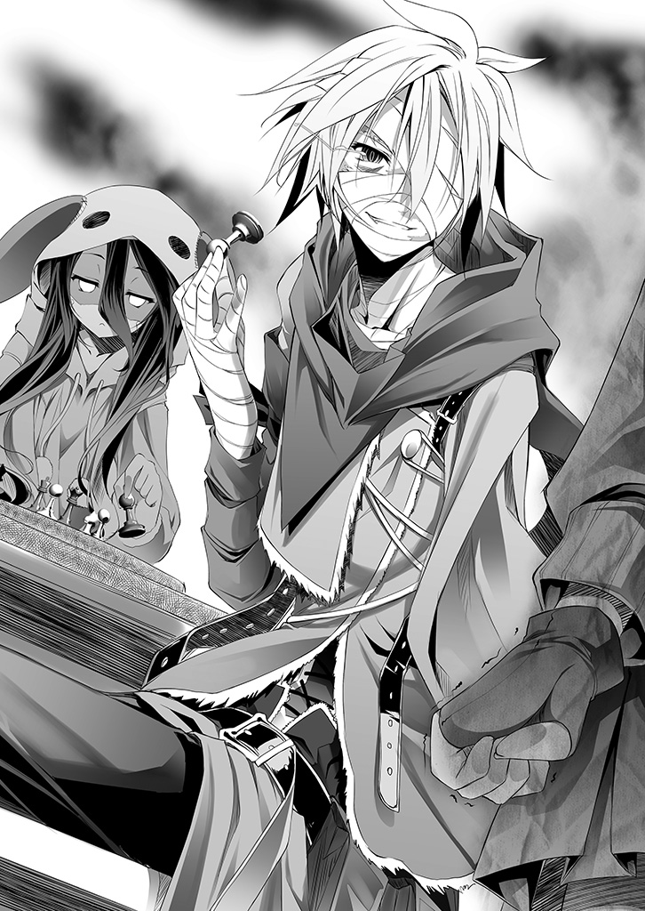
「神々が何を求めて争ってるか──知ってるよな」
唐突に語り出したリクに一瞬反応が遅れて、コロンが答える。
「......唯一神の座、でしょ。たしか......」
「そう。その唯一神の座──具体的には『星杯』ってもんらしい」
森精種の廃都でシュヴィに聞いたことを語り、リクは立ち上がった。
「神霊種は──星から生まれる」
──願われ、祈られて『神髄』を手にして生まれる──シュヴィはそう言った。
「だが生まれ過ぎた。『星杯』は、神霊種どもが、神──つまり種の創造を行えるレベルの魔法を行使出来る存在をたった一人に限定する為に設定した『概念装置』だ」
「............」
「けど全神霊種の力を掌握する『装置』を神霊種が作るのは不可能──だろ？」
「────そりゃ、そうでしょ。だってそれ──」
今聞いたばかりの情報を、だが一瞬で理解し、コロンは端的に──告げる。
「──『十』の力で『十一』以上の力を作るってこと......でしょ？」
「さっすがコロン、大☆正☆解。そう、呆れるしかないアホな話だ」
当然の話だろう──唯一神とはつまり神霊種を含め全てを支配する力だ。
神霊種が十柱いたとして、十柱全員の力を合わせても十柱分の力にしかならない。
だが『星杯』は──十柱の力を支配しきる力を作るという話だ。
根本的に、力が足りない。不可能なのだ。
「だから──こうすりゃいいのさ」
心底くだらないことを語る目で、リクが吐き捨てるように、言う。
「──神が十人いるなら、九人殺してしまえば自分が唯一神──だろ？」
そう、あの日、シュヴィが語ったことを要約すればこういうことだ。
他の神霊種の『神髄』を破壊して、その際生じる力を取り込む。
そうすることで己の力を増幅させ──『星杯』を顕現させるだけの力を手にする。
だが、なにせ神霊種は願われれば、その数だけ生ずるというのだ。
主立った奴を皆殺しにしても、また新しく生まれて自分を上回るようになっては困る。
だから唯一神の座──『星杯』で支配してしまえば〝唯一の神〟の出来上がり。
「これが、このくだらない『大戦』の正体だ」
............。
「馬......鹿じゃないの──そんな理由で、こんな戦争をしてるっていうのぉ──ッ!?」
肩を怒りに震わせて、コロンが吐き捨てるように叫ぶのを横目に。
「コロン......言葉に気をつけろよ。馬鹿に失礼だ。だってなぁ──」
気怠そうに言ってリクは、地図──盤面に触れた。そして呆れ顔で告げる。
「そんなことしなくても『星杯』は顕現させられるんだから」
「────え？」
きょとんとするコロンを余所に、リクは『黒いキング』を手のひらで弄ぶ。
「なあコロン、神霊種は何から生まれると、俺は言った？」
「──星、でしょ？」
「そう、精霊回廊。万物の源流。万象の潮流、つまり星から生まれる」
リクの言葉を補足するように、シュヴィが続ける。
「......その被造物......種族も......神霊種の『神髄』......精霊回廊を通し、創られ、る」
「そう......つまりな？」
ため息一つ、リクはそれを思いついた日──森精種の廃都で聞いた日を思い返す。
シュヴィから神々の争いの元凶と『星杯』の話を聞かされ、真っ先に浮かんだこと。
当たり前過ぎて、何故誰も気付かないのか。
シュヴィさえも驚いた、あまりにも自明な結論を言う。
「この星の全神霊種より──〝星そのもの〟の方が『力』は上だろ、普通に考えて」
目を剥くコロンに──だから、と告げて。
リクは『黒いキング』を手に、地図──ゲーム盤に向かい。
そのど真ん中に配置して。自分達の、『幽霊』の──勝利条件。
即ち──『最後の一手』を、端的に告げた。
「──ゲーム盤を壊せば、『星杯』は顕現する」
──......、
呆気にとられるコロンを余所に、リクとシュヴィは床を指さして、続ける。
「この星の核──精霊回廊の源潮流を穿てば、放出される力は全神霊種の力を超える」
「......顕現、は、十のマイナス四六乗秒......破壊、力放出、顕現、すぐに......」
「即座に──『星杯』を手にして星を再構築すりゃぁ......」
なおも唖然とするコロンに、リクとシュヴィが口を揃えて、告げる。
「「......チェック・メイト」」
「で──でも、そんな──星を貫くほどの力をどこから──」
ようやく、茫然自失から立ち直り、そう言ってから。
コロンは、視界に入った──壁に掛けられた勢力図に気付いた。
──まさか。まさか、まさか、まさか!!
「彼ら自身にやらせるの!? 膠着じゃなく──全勢力の全面衝突が目的なのッ!?」
コロンの絶叫に、だがリクは楽しげに、薄い笑みを浮かべた。
「アルトシュ陣営と『連合』だがな──連中は膠着なんかしない」
「──え？」
相互確証破壊──一方が手を出せば双方が壊滅する確証による膠着状態。
そんなものは、手を出さないという選択肢があって初めて機能する。
「目的が『星杯』──殺し合いであるあいつらは、必ず近いうちに口火を切る」
──それは、永久の大戦において、かつてない規模の戦闘──
──『決戦』を意味する──その想像に血の気を引かせたコロンに、リクが言った。
「だがその火力は──誰にも向かない」
再度、コロンは呆気にとられた。
「俺らが用意した『決戦の舞台』に、俺とシュヴィが設置する『通行規制』──力の指向性を歪曲させる装置で全ての力が〝真下〟に向かう──そう、望遠鏡のレンズのように」
──『幽霊』達が命以外の全てを賭けて集めた、あの場で使われる兵器の情報。
全てを数値化し計算したシュヴィによれば収束に必要な『通行規制』は──三十二個。
「奴らは奴ら自身で星を貫き、精霊回廊を破壊し顕現した『星杯』は俺らがかすめ取ってこれで──『勝利』。誰も死なないからこそ、終わったらカミサマタチに聞きたいね」
そしてとびきり嫌味な笑顔を──凶暴とも見える笑顔でリクは言う。
「〝ねぇねぇ今どんな気持ち？〟──ってさ」
──本当に。本当に、永遠の大戦が、終わろうとしている。
リクとシュヴィ──自慢の弟と妹──そして僅か二百人未満の人の手で。
しかも──誰一人殺すことなく。その為に。この状況を作り上げる為だけに。
神々やその被造物なんて殺したいとさえ思っても──いやむしろそれが普通だろうに。
皮膚を、内臓を、眼を腕を失って、なお不遜に笑う弟の姿にコロンは肩を震わせる。
誰一人殺さず戦争を終わらせる──その為に、こんなになるまで──
「......だからコロン、あと少しの間、見逃してくれ。んで、人間を頼むよ」
だが、そうして不敵に笑うリクが。
もはや呼吸すら辛くなっていることに──シュヴィだけは気付いていた。
■■■
「......リク......寝て、て......」
「......ダメ、だ......今すぐにでも、『通行規制』の配置に、向かわないと......」
ベッドの上で悶えて寝込んでいるリクを、シュヴィが看病していた。
コロンの前では強がってみせたリクだが、実際は全てコロンの指摘通りだった。
──そもそも霊骸を皮膚に塗った汚染火傷だけでも、相当な後遺症を招く。
まして内臓にまで取り込んだリクは、食事しても栄養を満足に取り込めない。
人間なら起き上がれなくなって当然──いや本来、起き上がれることが異常だ。
「......大丈、夫......リクの予想、外れ、ない。すぐには、攻撃は、始まらない......」
「............けど......」
「......少し、休めば......大丈夫......リクなら......一日、で」
──相変わらず、うちの嫁はさらりと無茶苦茶を言ってくれる。
そうリクは苦笑するが──
「......そう、だな......じゃあ配置に向かうのは明日、今日は快復に専念する」
「......ん」
「なぁシュヴィ......足引っ張って、すまんな」
「......リク、今、寝てる......引っ張れ、ない」
──苦笑一つ、それさえリクは全身に激痛が走る。
「じゃもう一つ頼む。今日は、寝て快復に努めるから──手ぇ握っててくれるか」
それが痛みに耐えられるように、という意味だとはわかっていた。
同時に──一人で行くなよという牽制だとも──今のシュヴィにはわかる。
「......ん。ずっと、握ってる。安心、して......休んで......リク」
────、
「なぁ、シュヴィ」
まだ眠れないのだろう。リクが問う。
「......ん」
「......ありがとな。シュヴィがいなきゃ、こんなこと出来てなかった」
「......まだ、終わって......ない」
「そうだな......でも、ここまですら、シュヴィがいなきゃ来られなかった」
──だから、とリクは眼を閉じて、言う。
「俺に会いに来てくれて、ありがとう......それから............」
微睡んできたのか、緩やかな呼吸になりながら、リクがこぼす。
「ホントに、愛してるよ......これから......も......」
......霊骸侵食によってどれほどの激痛がリクを苛んでいるのだろう。
それでもシュヴィに手を握られているだけで、リクは安らかに寝息を立て始めた。
──シュヴィは思う。シュヴィは──リクが『好き』だ。
でも『愛している』という感情の定義はまだ──出来ていない。
その言葉に応えられないのが、何とももどかしいが。
それでも、やるべきことは──わかっていた。リクを死なせられない。
リクはあと八九一年生きる。『星杯』を手に入れればただの事実として。
────だから。
「............ごめん、ね......リク......すぐ、戻る......から」
今は──その手を、離した。
■■■
──二十四個設置完了。残り八個の『通行規制』設置で、終わる。
シュヴィは改めて断定する──リクを連れて来ないで正解だった、と。
隠密行動しているのは、現在世界最大の力を持った勢力が犇めくまさに『決戦の地』。
既に何度か発見されたら〝詰む〟相手を感知し、その度徹底して隠れてきた。
それでも万一発見された時、リクが居たらその場で命を落とす確率の方が高い。
（......大丈、夫......あと八個......配置、すぐ帰る、から......リク、待って、て......）
その後なら、いくらでもリクに叱られる覚悟は出来ている。
断じてリクは死なせられない。あと八個──次の座標を検索──
「おやぁ？ ふらふら漂っていたら──思わぬ収穫が転がってございますね♪」
──不意に頭上からかけられた声に、シュヴィは振り返った。
プリズムの髪と琥珀の瞳。光を編んだような翼と、天翼種の証──幾何学的な光輪。
データ照合──最悪と告げる内心を抑え付けシュヴィは平静な顔でそれを見る。
「──ごきげんようスクラップ。本日は一人でお散歩でございますか？」
天翼種──最終番個体『ジブリール』......
■■■
機凱種である自分に、こう命じる日が来るとは思わなかった──落ち着け、と。
機凱種に対する攻撃は一種の禁忌だ。ただの機械、ただの反撃者を振る舞え──
「【疑問】──天翼種が機凱種に何か用件が？」
──長らく使っていなかった言語回路を、辛うじて演技としてそう口にする。
だが気にした様子もなく、ジブリールは続ける。
「はい♪ 機凱種の首はなななんと!! いまや龍精種と並び【レア５】でしてぇ♪」
困ったように、身をくねらせるジブリールが尚も続ける。
「なにせ『焉龍』撃破以降、機凱種に手を出すことは禁忌と、アヴァント・ヘイム内ですら統一見解でございましてぇ、レア度が高騰に高騰し、今やプラチナ首でございます！」
「【警告】正当な認識と断定。当機と敵対するなら相応の対応を実行する」
だがその言葉に、ジブリールが口元を吊り上げて答える。
「──『解析体』一機で──でございますかぁ？♪」
────────焦りを表情に出さないでいられただろうか。
それだけを心配するシュヴィに、構わずジブリールは続ける。
「半径一〇〇㎞内に機凱種の反応がないと確認してございます♪ するとはて連結体で行動する機凱種が何故単独でおられるか、興味が尽きのうございます♪ それと──」
そして──悪魔のような笑みで、ジブリールは続ける。
「〝単独〟でしたら、お得意の『模倣対処』も出来ず、レア度激高の、プレミアムなネックをテイク出来るチャンスだとジャッジしますが、いかがでございましょう？♥」
シュヴィは再度声に出さず思った──最悪、と。
よりによって、全種族中最もデタラメな種族──その中でも更に無軌道で最強の個体に見つかるとは、まったくリクの言う通り確率論はくだらないと認めるしかない。
──初めて引いたカードが、よりにもよって『ジョーカー』とは。
「それでは──お首チョンパしますので、どうか動かないよう。抵抗は無駄でございますし、お互い手間もかからず済むかと♪ 機凱種にはどうせ『死』の概念も無──」
「............断、る......」
「......──はい？ 聞き間違いでしょうか」
──『死』──その言葉に、咄嗟にシュヴィは口を開いた。
リクが定めた【ルール二】誰も死なせてはならない──死ぬわけにはいかない。
まして『死』で連想した──二度とリクに会えない恐怖が──その要求を棄却した。
「......死にたく、ない......死ぬわけ、には──いかない......」
ひたすらに目を丸くするジブリールに、シュヴィは続ける。
「......当機、は、連結解除、された......廃棄機......機凱種として、価値、ない」
──だから。
「......懇願、する......見逃して、欲しい......」
──だがシュヴィは、最悪の選択をしたことに、気付かない。
眼前の〝デタラメ種族の更に無軌道な者〟を──あまりに理解していなかった。
「なんと......死を恐れる機械ッ!? しかも機凱種が懇願!? その上連結解除──欠陥品ということでございますか!? ももももはや【レア５】どころではございませんよッ!?」
「............────」
「うぇへ、うえへへへへぇぇみ、皆が羨ましがって決闘の連続でございますね!!」
涎を零しながら──致死の殺気を放つジブリールに、シュヴィは『失敗』を認めた。
交渉──リクなら上手くやれただろう、手を離すべきではなかった──だが。
「......最終、勧告......」
「はいどうぞご自由に。結果は変わりませんが♪」
光を編んだ剣を具現化させ、今にも斬りかかってきそうなジブリールを見据えて。
「......死にたく、ない......死ねない......それでも、殺す、なら──」
シュヴィは、ポツポツと......だが決然とした口調で言い放つ。
──彼我戦力、考察。
彼──天翼種ジブリール。戦力未知数──平均的天翼種の倍と仮定。
我──機凱種『解析体』。戦闘力特化機体『戦闘体』出力の三二％未満。
また、我には機凱種の最大の武器である連結体──支援機不在。
使用可能な武装は、連結解除状態の為、全二七四五一のうち、四七のみ。
算出勝率──絶無。だが──リクの言葉が思考を過る。
──確率論に『〇』は──ない──。
「【読込】コード１６７３Ｂ７４３Ｅ１Ｆ２５５スクリプトＥ起動──【典開】──」
同時展開出来る全ての武装を典開させ──シュヴィは宣言した。
「──全武装......戦力、戦術、戦略を賭して......命乞い、開始する」
「おや？ 機凱種は撃破要因を解析し模倣する種のはずでございますが──」
だがシュヴィの宣戦布告を、ジブリールは──神さえ嘲る顔で、答える。
「もしやどなたか笑い殺されたので？ 非常にユニークでございますねぇ♥」
■■■
即断──〝短期決戦〟──それ以外勝算なし、とシュヴィは結論づける。
典開した全ての武装が一斉に、超高濃縮の精霊を粒子として放射し出す。
まともな生物──たとえ森精種でも触れれば即死に至る高濃度の精霊粒子を──
「──『制速違反』──ッ」
〝揮発〟させる──瞬間、シュヴィはジブリールの視界から消失した。
超高濃縮精霊に指向性を与えて揮発させることによる超加速。揮発した精霊は大量の碧い『霊骸』を吐き出し、汚染を撒き散らしながら──だが物理の壁を易々と突破する。
それが機凱種が使う、本来魔法を使えない種の、機械的で強引な〝魔法〟の使用法。
瞬間移動に等しい機動で動くシュヴィを──だが。
「......まさか、この程度で私から逃げられると思ってございませんよね？」
空間転移により、距離そのものを跳躍して先回りしたジブリールが嘲笑する。
嘲笑うように、弄ぶように──山を裂く光の刃を振り下ろすジブリールに、だが。
シュヴィは内心、その質問に──解答する。
──思っているはずがないだろうと。
「──『全方交差』──ッ」
迫り来る防御不可の光刃を、先程の加速を生んだ超高濃縮精霊の揮発──すなわち。
物理を超える力を、指向性なしで揮発──〝攻勢防壁〟となす。
超高濃縮精霊を大量に殺して霊骸に変じさせ──碧い球状の粒子膜を広げる。
瞬間、衝撃とエネルギーが大地を抉るように広がった。
──それだけで小さな都市を消失させる規模の力なのだが──
「はた迷惑な......霊骸を撒き散らす兵器、環境に優しくない機械でございますね......」
──『全方交差』──衝撃と高度霊骸汚染で大抵の生物が死滅するシュヴィの防壁を、だが嫌そうに口を覆いながら、ジブリールは埃を払う程度の仕草で切断した。
予測通りと内心シュヴィは断定する。いかに天翼種といえど、戦神に編まれた魔法である天翼種には、魔法を阻害する霊骸は実体化維持の阻害要因になる──ッ！
「しかしこの程度で私をどうにか出来ると────────はて？」
切断した碧い光の衝撃膜の向こう、シュヴィの姿がないことにジブリールが困惑する。
シュヴィが内心、再度その質問に──解答する。
──思っているはずがないだろうと。
『全方交差』起動と同時、再度『制速違反』で距離をとりシュヴィは照準を定める。
──元より天翼種を機凱種単体で撃破することなど、ほぼ不可能だ。
天文学的低確率──奇跡の果てに成功し得てもリクが設定した【ルール】に違反する。
短期決戦による勝利。勝利条件は、たった一つ──『逃亡』。
「──【典開】──『偽典・焉龍哮』──ッ」
かつて機凱種が交戦し──リクの故郷を奪ったシュヴィには、忌わしい兵器。
焉龍の『崩哮』を再現する、シュヴィの有する最大火力がジブリールを捉える。
世界を穢す霊骸の嵐が背後に噴出し──砲口が光を噴く。
迫り来る光にジブリールは眼を剥き、そして光に灼かれ──
────、
シュヴィは内心リクに謝罪する。また地図を修正する必要がある。
──『偽典・焉龍哮』の一撃はジブリールに直撃と同時──地形を変えた。
碧い爆光は地殻を抉り取り瞬間的に蒸発、赤く気化した大地は小規模な地殻津波を引き起こし、数千度に達する超高熱の土砂を瞬時に成層圏まで届かせる......。
たとえ龍精種であろうと、直撃を受けて無事では済まない、星の形を変える程の力。
だがシュヴィは、それで斃せる相手だなどと一切想定していない。
「──『一方通行』──ッ！」
着弾確認と全く同時、シュヴィは最後の武装を起動させる。
天翼種や、森精種の行う空間転移の対策として機凱種がデザインした〝空間破砕器〟。
砕いた空間の穴は文字通り一方通行にシュヴィの体を包み、そして閉じていく。
──探知不可能距離まで跳躍すればさしものジブリールも追って来られない。
だが『一方通行』で跳躍出来る距離は精々が一〇〇㎞──同じ距離内に機凱種の反応がないと言ったジブリールの探知可能限界距離は予測不能だ。跳躍先で再度迎撃──
「──おやぁ？ どちらへ行かれるので？」
────シュヴィの思考が止まった。
砕けた空間が閉じるまでの──〇・〇〇〇〇四六秒間──刹那未満の時間。
ジブリールは空間に手を差し込み──強引に、力業でこじ開け、顔を覗かせていた。
地獄から響く声、能面の笑みが張り付いた顔で──
「私から逃げるのでしたら、長距離跳躍でなく、光と粉塵に紛れて『視界外』へ移動してからにすべきでございましたねぇ......あ、それとも、もしやと思いますが──」
強引にシュヴィが砕いた空間を再度──〝引きちぎった〟事実が。
シュヴィに未知の感情を定義させ、射撃体勢だった姿勢から尻餅をつかせた。
「先程の攻撃で私に損傷でも与えられるとでも見込んでございましたか？」
──定義──これは『悪夢』だ。
あり得ない。あり得ないあり得ないそんなはずない──ッ！
確かに『偽典・焉龍哮』は、アランレイヴの『崩哮』の威力を完全再現出来ているわけではない。四三・七％の再現──それが『設計体』の報告だった。
だが、焉龍は、龍精種の中でも上位三体に含まれる【王】の一体だ。
その個体が、自己崩壊を代償に放つ『崩哮』──いくら四三％とはいえ──
「......少々、私をナメすぎですね......スクラップ風情が......♪」
その〝直撃〟を受けて──〝無傷〟など──
──そんなの──あり得るはずが──────ッ
「ですがこの私に──防護魔法を展開させたことは、評価してあげましょう」
──ジブリールの言葉に、シュヴィは己の聴覚装置異常を疑う。
天翼種は、その身そのものがアルトシュに編まれた、一種の魔法だ。
故に防護魔法と呼べる、自己を維持する術式は──常時展開されている。
故にこそ『偽典・焉龍哮』で貫けると計算した。だがこの天翼種──いや。
再定義──この個体はもはや『天翼種』とカテゴライズするべきではない。
この『例外』は、ジブリールは。
創造主に形成された防護を〝疑い〟──更に強力な防護を展開したことになる。
天翼種の行動ではない。あり得ない。この個体は──もはや予測が──
「首を持ち帰る為、〝精一杯〟手加減していましたが──気が変わりました」
────、
この『例外』は今、なんと言った？ 手加減していたと言った？
「あなたに脳と呼べるものがあるか、存じ上げませんが......」
その『例外』は目を丸くするシュヴィに、スカートをつまみ一礼するように。
優雅に帯をつまみ、鈴のような、天使のような、だが悪魔のような顔で、
「つけあがり過ぎのようで。少し冷やしてさしあげましょう──永遠に」
──次に認識出来たのは、右腕が消し飛んだことだった。
■■■
──訂正。それも不正確だった。
解析体──機凱種中最も認識性能に特化した機体が、一切認識出来ないままに。
ただ『右腕部消失』という、損害報告を確認するのが限界だった。
何をされたのか、把握も許されず戦闘力を奪われた──が。
「......おや。胴体を狙ったのですが──手元が狂いましたか？」
これがリクが──人間がいう『勘』という物か。
論理を無視した咄嗟の回避行動で辛くも『大破』を免れたと遅れて自覚する。
「............何故でしょう、妙な気分ですね......」
シュヴィは知るよしもないが、ジブリールは妙な確信を抱いていた。
──ただの機凱種、それも『解析体』一機が、自分の攻撃を凌いでいる。
何故単機で動いているのか、何を以てして自分の攻撃を凌いでいるのか──
興味は尽きないが──ジブリールは、シュヴィにもわかる低い声で、
「嫌な予感がします。そろそろ鉄屑らしく、物言わず地に埋もれましょうか」
質量さえ帯びる殺意を以て放たれた言葉に──シュヴィもまた理解する。
確率論に『〇』はない。リクを信じ、涅槃寂静の勝率に賭け交戦、逃走を図った。
だが、ことここに至り、もはや確率論などという話ですらなくなった、と。
この『例外』を相手に──もはや逃走も、生存さえも、如何なる論理・暴論を駆使してさえ不可能だと、他ならぬ『勘』と名付けた非論理思考までもが断じていた。
──だが──それでも、とシュヴィは思考を振り払う。
──それでも──『勝つ』必要がある。
論理の塊であるはずのシュヴィが、明確に認める。
（......死にたく、ない......死ぬの......怖い、よ......リクぅ）
二度とリクに会えない。
その事実に、思考回路が凍り付くような錯覚を覚えるが──それ以上に。
リクが──夫が──その仲間が、『幽霊』達が。
皮膚を焼き内臓を焦がし、全てを賭けて求めた──たった一つの勝利が。
（............シュヴィの、ミス、で、......『敗北』......なんて──）
認められない。断じて──認めるわけにはいかないッ！
──ならば、どうする。
この状況から──『勝つ』にはどうすれば──時さえ止まる速度で思考して、
──はたしてシュヴィは、
一つの〝手段〟に思い至った。
リクを想えば最低の手段だ。
自己嫌悪に潰れそうな最悪の発想だ。
それでも──必敗の状況を招いた自分が──描ける唯一の勝ち筋──
なら──
【個体識別番号２０７Pr４f5７t9──『連結体第一指揮体』へ、再連結申請】
〝通信〟──かつて自分を廃棄処分した機凱種の『連結体』へ語りかける。
──返事はない。
ジブリールが──次は外さないと語る眼で、再度光を圧縮させていく中、
【再度申請ッ 『心』の解析完了、時間がない──〝同期〟──再連結をッ】
──永遠とも思える僅かな間をおいて──通信が応じる。
【２０７Pr４f5７t9、貴機は永久連結解除処分にある。申請を却下する】
近づく死の音に、シュヴィはなおも吠えるように通信する。
【申請却下拒否ッ データ同期『全連結体指揮』へ転送を強く申請ッ 『解析体』のアインツィヒに対する如何なる報告も、ユーバ・アイン、貴機に転送拒否権はないはずッ！】
連結体の『指揮体』に反論──挙げ句、論破するシュヴィに──返事は、ない。
だがシュヴィは〝苛立ち〟に、叫ぶようになおも通信を続ける。
【──ユーバ・アイン......ううん、訂正......分からず屋ッ！】
【────】
【......本当はッ 誰にも渡したくないッ ......この感情......シュヴィの、もの】
──リクが好き、リクと離れたくない、リクに貰った抱えきれない程の『心』。
誰にも渡すものかと決めていた。だって──〝恥ずかしい〟もん......。
〝シュヴィだけのもの〟だもん──ッ！ それ、を──ッ！
【......それを......渡すって、言ってるのッ その意味、わかってよ......バカぁッ!!】
──だって、それ以外に、方法がない。
それ以外に、シュヴィのミスを帳消しにし、リクを『勝たせる』方法が思いつかない。
通信だということも忘れ。だから──と、声に出しシュヴィは叫んだ。
「......ゴチャゴチャ、言わないでッ この想いを──継いでよぉぉッ!!」
............────、
【２０７Pr４f5７t9。やはり貴機は壊れている】
【......知って、るッ】
【矛盾している。破綻している。それでも稼働している。異常だ。不正だ】
【......それも、知って、るッ】
【故に】
【貴重なサンプルデータと判断する】
──瞬間。解除されていた連結──クラスタに再接続されるのを感じる。
数年ぶりの──己を含めて四三七機と感覚共有される──あの感触が戻る。
【貴機を『特例該当』と判断。データ同期──開始する】
本来の、機凱種としての感覚──連結体。複数で一つの群体。思考。
今はそれが──頭の全てを無遠慮に覗き見られる感覚が、酷く気持ち悪く感じて。
それでも、今は、必要──そう決断しただろうと、シュヴィは頭を振る。
【なお、同期完了まで、貴機の損壊に関わる行動は──】
禁ずる──と続けようとした通信は、現状を把握し──言葉を切った。
再連結された今、シュヴィの属するユーバ・クラスタの全機が状況を把握した。
──対峙している敵。天翼種最強個体──ジブリール。
それと単機で相対し、まだ稼働している事実に全機がエラーを吐くのを感じた。
その反応に、シュヴィは同期完了が待ち遠しい、と笑った。
そのエラーこそ──『驚愕』という、一つの感情なのだから。
そうだろう？ 論理的に思考して、相手が『例外』ということを差し引いても。
天翼種と──『解析体』単機で戦闘出来ている状況自体が──不可能だろう？
──だがこれが現実だ。リクに貰った『心』が示す──
不可能を可能たらしめる、その厳然たる事実の一端。
【──状況把握。２０７Pr４f5７t9──機凱種が所有する全武装の無制限使用承認】
機凱種が所有する──二七四五一個の武装の、典開ネットワークが解除される。
【あらゆる武装、火力を以て戦闘、同期完了まで〝全壊〟を禁ずる】
シュヴィは、苦笑して応える。
──こういう時、人間なら──魂あるものなら、こう言うだろう。
【......〝死ぬな〟......って、言えない、の......？】
ユーバ・アインはわからない。全壊と死に如何なる概念相違が──だが──
【共有完了まで〝死ぬな〟これは命令だ拒否は承認しない。以上】
その返答に手応えを感じて、シュヴィは思った──きっとわかってくれる、と。
顔を上げ、視界に映ったのは迫る死──ジブリールと。
「............え？」
──《同期完了まで──四分十一秒》の文字だった。
何かの間違いではないのか。どんなデータも同期に三秒以上かかったこと──
そう考え、だがシュヴィは頭を振り納得する。
当然だ──『心』の同期なのだから、と。
リクから貰った、抱えきれない程の想い、気持ち、感情、記憶。
どんな武装、兵器、情報よりずっと──ずっとずっと『おもい』だろう。
リクの顔が脳裏を過り、シュヴィは悲しげに笑う──これは『ゲーム』だ。
四分十一秒、つまり二五一秒、死の具現たるジブリールから、生き延びる。
制限時間内を生きれば勝ち、死ねば負け。リクが......一番嫌う『ゲーム』だ。
「......この想い、心......機械に生まれ、て......命を、貰った、その全て──」
──この二五一秒に──賭ける──ッ!!
「──【 全 典 開 】──ッ」
機凱種が有する全武装、全火力、全装置を限界まで同時典開する。
殺害や破壊の為だけに造られた道具が織り成す愚かな──巨大な鉄の翼を広げる。
「──おや、当てつけのつもりで？ ......上等でございます♥」
そう言ってジブリールもまた──光を放出するように巨大な翼を広げて──嗤う。
天翼種『例外個体』ジブリール。その戦闘力は未だ未知数。
機凱種の全武装を使用して尚、単独撃破は不可能と、断定。
生存可能限界時間──推定不能。
──だが、問題ないとシュヴィは頷き。
「──【構築】......対未知用戦闘アルゴリズム──起動」
そう言って構築し出したモノで、連結体がエラーに喘ぐのを感じる。
シュヴィは思う──何を驚く。敵が未知なら、想定しえない全てを想定するまで。
理解しようとするな。計算しようとするな。感覚を信じて動け──ただそれだけだ。
目の前の『死』から二五一秒生き延びる。
論理が問う──出来るのか？
感情が返す──愚問だろう？
人間は、これ以下の条件で──永遠に近い時を生き延びたのだ。
今更、たかだか四分や五分が、いったいなんだ──ッ!!
「......〝シュヴィ〟......」
「はい？」
「名前、言って......なかった......」
──それが〝わたし〟......リクがくれた、大事な大事な──名前。
一瞬怪訝そうにして、ジブリールが小さく会釈して、応じる。
「さようですか。私はジブリール、どうぞお見知りおきを──そして」
「さようなら、でございます」
■■■
天変地異が駆け抜けたような大地に立ち、
「............人形風情がここまで私をおちょくるとは──いい度胸で」
たかが機凱種、『解析体』一機を破壊出来ずにジブリールは怒り濃く呟く。
「............死ね、ない──まだ......死ね、ない......のぉ──っ」
限界を超えて、シュヴィが動く。節々をプラズマ化、白く発光溶融させて。
反応も感知も出来ない、ジブリールの攻撃の嵐の中──辛うじて立っていた。
機凱種の全武装と、人間に教わった全てを駆使して、死にもの狂いで足掻いていた。
──相手の舞台に立つな、主導権を絶対に渡すな。
──相手を油断させろ、取るに足らぬ相手だと理解させろ。
──相手を警戒させろ、下手は打てぬ相手だと錯覚させろ。
──相手を予測するな、ただ誘導すれば結果は見える──
反応出来ない攻撃は先読みすればいい。予想も出来ないなら誘導すればいい──
そうして紙一重で躱し、捌き、相殺し──ジブリールが驚嘆を超えて怒りに震える。
連結体の機凱種達はもはや理解を逸し、ただ『エラー』を連呼。
だが──満身創痍のシュヴィが見ているのは、視界に表示される数字だけだった。
──《七十二秒》
（......ねぇ......リク......どうして、かなぁ......）
リクと手を繋いでいる時は一時間すら一瞬に感じたのに──
ジブリールの攻撃を、だが完全には捌ききれず、右腹部が消し飛ぶ。
──《五十一秒》
（......リクぅ......今は、一秒が、永遠に感じる......よ......）
再度放たれたジブリールの光波が、今度は左手に着弾しそうになり、
「──ッ!? 【典開】──『通行規制』ッ」
シュヴィが信じがたい反応速度で典開した『通行規制』に逸れた光波は。
左腕ではなく──胸を穿った。
「──ようやくミスらしいミスを......手間をかけさせてくれましたねぇ」
ジブリールの声に、だが上の空でシュヴィは問う──
──《二十四秒》
「......ミス......？ ......何のこと、だろ......」
確かにもう動けず、これで完全に動きを封じられた。
でも、と視線を動かしシュヴィは微笑む。
左手──その薬指──
微かに光る指輪は、守れたよ............
────、
「......さようで、ございますか──鉄屑と呼んだことを〝謝罪〟致します」
その様子にジブリールが何を感じたのか──シュヴィには知る由もないが。
ドクンッ──と。それ自体が攻撃であるかのような精霊の胎動が生ずる。
為す術なく地を転がるシュヴィの頭上、天高く。
光輪を複雑に──巨大に描き、両腕を広げるジブリールが言う──
「あなたさまは、ここで、確実に排すべき〝脅威〟──『敵』に値すると認めましょう」
機凱種の兵器が使う濃縮精霊の比ではない。
大気から、星から、強制搾取された精霊が──圧縮濃縮凝縮されていく。
発光する精霊──ジブリールの両手に、揺らめく不定形な『槍』が出現する。
────『天撃』──
疑う余地もない、天翼種が体内構造全てを精霊回廊接続神経に変質させて、精霊回廊の源潮流から力を汲み上げて撃ち込む──文字通り、天翼種の最大最強の一撃。
機凱種にも『天撃』の模倣兵器はある。シュヴィも目撃するのは初めてではない。
だがジブリールのそれは──渦巻いている力は。
データ上の、知識上の『天撃』とは──あまりに桁が違い過ぎて。
シュヴィは悔しげに、悲しげに表情を崩した。
──『例外』ジブリール──やはり、どうにもならな──
【同、期......完、了】
頭上に渦巻く膨大な力の影響か、ノイズ交じりに──通信が告げた。
──......嗚呼、
いつの間にか──気付けば。
【２０７Pr４f5７t9改め──〝『遺志体』シュヴィ〟......】
視界に表示されていた数字は──《同期完了》を示していて、
【あとは〝我ら〟に任せ休むことを許可する──良い夢を】
──『天撃』が降り注ぐ中、ジブリールの顔を見やり──シュヴィは嗤った。
──この『ゲーム』──シュヴィの勝ち、だよ......。
「────？」
その顔の違和感に顔をしかめるジブリールを他所に、シュヴィは最期の声をあげる。
「──【典開】──『進入禁止』────ッ!!」
──あの『天撃』を防ぐことは不可能だ。
ジブリールの宣言通り、自分は物言わぬ鉄屑になる......それを覆す術は、ない。
だが『進入禁止』の全出力を〝半径十二ミリ〟に収束させれば──守れるはずだ。
......リクから貰った、この、指輪だけ......は......
リクから貰った『心』が、不条理で理不尽と告げる、絶対的な力が降り注ぐ。
その直撃──この身も、思考も、コンマ秒後には、この世から消える──
............だが、何故だろう。
迫り来るジブリールの天撃が、酷く遅く感じた。
思考の異常加速を感知──これが人間がいう、走馬燈だろうか。
シュヴィは考える──どうして、こうなっちゃったのだろう、と。
加速している思考は、即座に答えを提示してくれた。
なんてことはない、単純な話だった。
（......リク......シュヴィ、やっぱり......リクがいなきゃ......何も出来ない、よ......）
──なのに一人でも『通行規制』の設置は出来る、リクを危険にさらす必要ない、と。
その思い上がりが、この結果を招いた──やっぱりリクは正しかった。
リクならたぶん──絶対。この天翼種さえ欺いて戦闘を回避出来た──確信出来る、と。
どうしてリクの手を離したのだろう。もう疑わないと決めていたのに。
ずっと側にいろと言われた。一秒だってリクから離れるべきじゃなかった......
（......ごめん、なさい......リク......それでも、最後の一手......残した、から......）
リクが絶対、納得してくれないと知っている。
──でも、リクは断れないことも知っている。
それがリクにとってどれほど辛いことか知ってるのに。
なのに、拒否出来ないことも、痛いほど知ってるのに。
──ごめんなさい、コロン──シュヴィ──最期まで──
──〝素敵なお嫁さん〟に──なれなかった、よ......
──それ、でも──
「......リク......ねぇ、リクぅ......」
届かない、夫の名を呼ぶ。
音声出力器はとっくに壊れた。音にもならない。
届くはずもない、それでも、言わなければならない。
「......シュヴィ......やっと、わかった、よ......？」
一度も言えなかった言葉があったと、思い出したから。
「......シュヴィ......リクに会えて──本当に......幸せだよ......」
今──それが明確に、わかったのだから。
「......次こそ......二度と、離れない......よ」
「......ほんと、に......愛してる......よ──────............
■■■
山に──そして粉塵に蓋された空にさえ穴を空けた『天撃』が止む。
「......はぁ......はぁ...............ハァ──ッ」
力の過剰使用、精霊の不足により形状維持不能──幼い子供の姿になって。
ジブリールは姿も形もなくなった『敵』がいた場所に、息を切らせて降り立った。
「......あぁ～......もお......これでは何一つ割に合わのおございますよぉ......」
──そもそもは単独行動している機凱種の首が欲しくて始めた戦闘だ。
その特異な立ち回りから、更に首への欲望が増して──挙げ句が『天撃』だ。
自分でも意味不明とジブリールは嘆く──あの機械は滅すべき『敵』と本能が告げた。
だが、冷静に立ち返れば──どうだ。
「......首は手に入らず、部品も全部消し飛び、しかもこの姿......」
そう言って、幼子まで縮んだ己を見下ろし、ジブリールは深いため息を吐いた。
何も得られず、全ての力を失い、最低五年はまともに動けない──それが結果だ。
「はぁ......アズリール先輩に、奇妙な機凱種がいたと、報告だけはしておきましょう──あの脳筋お花畑でも、私に『天撃』を使わせた意味くらいは汲めると良いですが......」
だが──再度子供のように縮んだ自分を見下ろしてジブリールは沈痛に呟く。
「この姿で先輩の前に立てば......放して貰えないでしょうね......」
小さな天翼種が、億劫そうに羽を撃って空の彼方へ飛び去る。
──小さな。あまりに小さな銀色の輪の光には、気付かずに──......
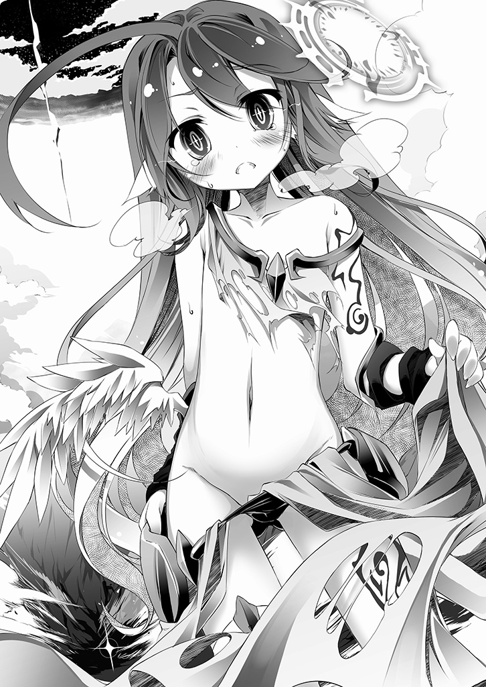
■■■
ゲームは終わり、シュヴィが死んだ。
『幽霊』の報せを受けたリクは気丈に振る舞い、部屋に戻るのが限界だった。
対面が空席のテーブルで、シュヴィと何度も行ったチェスを一人で指す。
遠い昔々、子供だった時にそうしていたように。決して勝てないゲームを──
コマを指しながら正面の空席を見る。
正気を疑われようが、見えるものは仕方ない──やはりそこには昔見たように。
不敵な笑みの少年──シュヴィが信じると言ってくれた、ゲームの神がいた。
「なぁ......なんで、勝てねぇんだろうな......」
決して答えることのない少年に、だがあえて問う。
「今度こそ勝てると思った......シュヴィと二人──皆となら、勝てると思ったんだ」
──【ルール二】誰も死なせてはならない。
──【ルール六】上記に違反する一切は、敗北とする。
「なんで、勝てない──のかなぁ......ッ」
そう、違反した時点でこのゲームは終わり──また、負けた。
ましてそれがシュヴィでは──
「何が......足りないんだ......教えてくれよ──ッ！ なぁ、いるんだろッ!?」
見る者が居れば、遂に気が触れたとしか思えない様で、リクは虚空を。
対面に座る少年──ゲームの神を、怒鳴りつける。
少年は応えない。ただ──笑みを消して、顔を伏せたような気がした。
「なぁ頼むよ......一度、たった一度の勝利さえ許されないのか。だったら──」
「だったらなんで──人間に『心』なんてくれたぁぁッ!!」
──シュヴィが憧れ、開いてくれた『心』が。
だが、今は何の意味も見いだせず、リクは軋む体でただ、叫ぶ。
「何処のカミサマが人間創ったか知らねぇけど！ こんな世界で負けて負けて負け続けてひたすら殺されて喪ってを続けるなら──何の為に心なんてあんだ答えろぉッッ!!」
ふらつく体で縋るように叫ぶが──
「なぁ、そこにいるんだろ、誰だか知らねぇけど、答えてくれよ──頼むよ............ッ」
──返事は、ない。
端から期待していたわけでもないが、元々ボロボロの体だ。
落胆し、叫び散らして椅子の背もたれに倒れ込むように体を預け、戦略図を眺める。
──漠然と状況を整理する。
全種族を互いに警戒させ、『アルトシュ陣営』対『その他』という構造は成功した。
だが〝元々の想定通り〟──どちらかが必ず、先に攻撃を仕掛ける。
──『連合』から仕掛けるなら『森精種同盟』と『地精種同盟』が互いの『切り札』である『虚空第零加護』と『髄爆』を無効化する手段を見つけ出すまでは膠着する。
長く見積もっても十年以内に全面攻撃が始まり、アルトシュ陣営が負けるだろう。
そして返す刀で、今度は地精種と森精種が撃ち合いになる──誰も彼もが滅びるまで。
──アルトシュ側から仕掛けるなら、どうだろう。
今はアルトシュ陣営が優位にある──『神撃』があるからだ。だが『連合』も『神撃』一撃で全滅する陣形を取らない。そして力を使い果たしたアルトシュは一時的に弱体化し──アヴァント・ヘイムの力で戦うことになる。それが『連合』の狙い。
アヴァント・ヘイムが如何に強力な幻想種でも『虚空第零加護』は幻想種殺し、『髄爆』は神霊種殺し。アルトシュ陣営からの先制攻撃でアルトシュに勝利はない。
──と『連合』は思い込まされているが、現実は違う。
アルトシュの『神撃』は──全勢力の全火力を誘発させる規模だ。
だからその結果はアルトシュ陣営と『連合』──双方の壊滅。
つまりアルトシュ陣営の先制攻撃における『勝利』はありえない。
最長で──『十年』......戦争は止まる。
──『十年』。そう『十年』だ。
一七九人の『幽霊』が、その全てを賭し、命以外の全てを棄て──そして。
シュヴィを喪って得たものが、長く見積もってさえ、たった十年の膠着だ。
ふと、誰かが言うのが聞こえた気がした。
──十年の平和。十分じゃない？ よくやったほうじゃない？
「............」
──ただの人の身で、神を相手に十年戦争を止めさせたんだよ？
「............」
──十分じゃない。十分過ぎるじゃない。むしろ出来すぎたくらいだよ。
────『勝利』に値すると思わ──
「──......ふざけてんのか？」
それが誰の声か、それとも自分の内心の言い訳か。
どちらでもいいが、リクは裂けそうな喉で──吠えた。
「人間の全てを賭けて！ シュヴィを喪ってッ！ たかだか十年そこらの一時の仮初めの平和が勝利に値する!? でそのあとは!? また死に怯える世界だ寝ぼけてんのかッ!!! 引き分けにすらなってねぇよ──天秤が何一つ釣り合ってねぇだろうがぁッ！」
............。
静寂だけが応え、さっきまで見えていた少年も、もういない──
「......はは、もう、本格的にダメだな、俺......」
シュヴィもコロンも側にいない、ゲームも、もう終わった。
なら──もう、強がる必要はないだろう。
そう苦笑して認める──ああそうだよ、全身が痛い。
霊骸に汚染された皮膚は、絶え間ない激痛をくれる。最後に熟睡出来たのがいつだったかもう思い出せない。ただ水を飲んだだけでも喉が灼ける。狭まった視界は、気を抜けばこのまま永遠に閉じてしまえる。
──ああそうだ。認めるよ......また──俺は負けた。
結局一度も勝つことが出来ない人生──もう疲れた。
シュヴィがいれば、こんな世界でも生きていけると思った。
シュヴィと話して、顔を見て、手を握れば。この激痛も忘れられた。
──ふと、リクはそのシュヴィの言葉を思い出した。
『......死なせ、ない......リクは......シュヴィが、死ぬまで......生きる......』
ああそうだな......シュヴィが死んだなら、いいだろ？
椅子の背もたれに体を預けて力を抜いてこのまま......眠るように......さ......
────............
「──『意志者』リク」
落ちかけた意識──魂ごと落ちそうになっていたのを、すんでの所で呼び止められる。
懐かしい、だが聞いたことのない──どこか機械的な声に、緩慢に振り向く。
何処から入ったのか、いつから居たのか、黒い、影のようなローブ姿が立っていた。
「............誰だ」
──何者だ、とは問わない。
問うまでもない。ローブの隙間から見えたモノが如実に語っていた。
機械の体──シュヴィではない──機凱種だ。
「......名前はないが、呼ばれている通り──『全連結指揮体』と名乗ろう」
用件はなんだ──リクが警戒しつつそう問おうとして、
「──『遺志体』シュヴィから、託された遺志を果たしに来た」
先回りされ、機凱種の男──アインツィヒはそう言って、手を差し出した。
差し出されたものを受け取って──リクは呆然と、固まった。
小さな金属の輪。汚れ、歪んでいるが──見紛うはずもないシュヴィの指輪──
「──『意志者』リクは、まだ敗北していない」
「......な、に？」
未だ呆然とするリクに、機凱種の男──アインツィヒは、淡々と告げた。
「──『意志者』が規定した【ルール】に道具の損失を認めぬ旨は含まれていない」
────咄嗟に、リクはその顔面を殴りつけようと拳を振り上げた。
妻を──シュヴィを、道具呼ばわりとは、良い度胸だ気に入った。
機凱種だろうが何だろうが知ったことかコイツだけは──ッ!!
そう振りかぶって、握り込んだ拳の──その中の感触に体が凍り付いた。
アインツィヒは、託された遺志と言った。
リクに託された指輪が、その内容を雄弁に語っていた。
──〝そう思え〟と。そう思えば──
「そう思えば──シュヴィの失敗で負けって事実は、なくなる......ってか？」
........................ふざけんなよ。
そう言ったきり俯くだけのリクに、アインツィヒは、告げる。
「──伝言『チェック......リク......あとは、おねがい──』──以上だ」
「......それだけ、か？」
「──────────────そうだ」
苦笑して視線を動かしたリクはふと、また空席に座る少年の姿を見た。
少年の口は動く──〝まだ、ゲームは終わってないよ〟──と。
「はは......ひでぇよ、シュヴィ......酷すぎるだろその仕打ち......」
渇いた笑いで天井を仰ぎ、リクは何かを堪えるようにそう漏らす。
──嗚呼、やっぱり『心』が疎ましいよ、シュヴィ。
おまえは、なんでこんなものに憧れたんだ......
......よりにもよってこんな役目を俺に託すのか──
そうこぼれそうになった弱音を、リクは辛うじて飲み込んだ。
そして指輪を握り込んで──リクは、長らく忘れていた呪文を唱える。
それがシュヴィの『遺志』......シュヴィの『心』からの願いなら。
それが唯一、この劣勢を立て直す方法だと、シュヴィが言ったなら──
夫として信じて応えるしかないだろ......それが壊れるほど苦しくても。
──その願いを託したシュヴィは。それ以上の自己嫌悪を抱いたはずだから。
だからあえて──シュヴィが壊してくれたものを。
最期に、もう一度だけ──しっかりと、かける。
────、──カチリ、と。
第五章──夢惚
「にゃは～、ジブちゃんってば心配性にゃ～♪」
そう笑って天翼種の長姉──第一番個体・アズリールは跳ねるように飛ぶ。
「ジブちゃんすぐムキになるにゃ～......んでもッ！ そこがまた可愛いのにゃぁぁ～ッ♥ちっちゃいジブちゃんもまた更に可愛いにゃぁぁ......はぁ......修復術式が疎ましいにゃ」
アズリールは番外個体──現在末妹であるジブリールを殊更贔屓にしていた。
行動が読めず、無軌道で、自由奔放なジブリールは、単独で出て行っては、龍精種をすら討伐して戻る。その突飛さの目的も理由も、皆目見当がつかない。
だが、それも主に与えられた〝不完全性〟故、なお特別に愛おしく思えた。
──もっとも、当のジブリールには心底煩わしく思われているのだが。
天翼種が持つ膨大な力、その全てをたった一撃に乗せ放つ──『天撃』。
それを使い、子供の姿で帰ったジブリールを、アズリールは一週間頬ずりし続けた。
遂にキレたジブリールが修復術式──喪った力の回復を申し出て、現在は機能停止中だ。
正直、自然回復──五十年待ってもいいとアズリールは思ったのだが──
────............
玉座の間に戻ると、アズリールは翼を畳み、光輪を落とし、ゆっくり跪いた。
「『番外個体』は如何した？」
至高の座でくつろいでいるのは、巌のように逞しい筋肉を晒す男──
最強の神にして戦神、天翼種の創造主──神霊種アルトシュ。
自分達の倍はあろうかという巨躯。鋼のごとく剛い黒髭を垂らし、背に負った十八枚の翼をさながら外套のように纏っている。彫りの深い顔立ちの、鋭く濡れた黄金の眼光に見下ろされると、アズリールはそれだけで脳が痺れるのを感じる。
だが、アズリールは知っている。畏怖と恍惚を抱かずにはいられないその偉容さえ。
己が創造主の一片、大海の一滴、強大な力の僅かな現し身に過ぎない、と。
「単独行動中の機凱種と交戦、『天撃』使用の損耗で修復術式中にございます、我が君」
祈るように恭しく報告するアズリールだが、正直全く意味不明な話だった。
たかが這いずり回る鉄屑──群れれば多少目障りな塵芥に過ぎない。
手を出すのを禁忌としたのはアズリール自身だが、それは脅威と感じたからではない。
単に主に賜った御力を低劣に模倣られるのが、甚だしく気に入らないだけだ。
天翼種総員で掛かれば、あの鉄屑共に『対応』一つさせる間も与えず撃滅できる。
──だと、いうのに。
そんなスクラップ一つに全力──『天撃』を撃ち込んだジブリールの真意も。
「──そうか。くく、そうか──」
何事か推知したように含み嗤う主の神意も、アズリールにはわからなかった。
主は多くを語らない。故に主の御心を推し量ることはできない。
──いや、と彼女は己の傲慢を恥じた。
そも深淵なる主、神の御心を、己如きが推し量ろうなど不敬の極みだ。
主は最強。主は頂点。最強の神、戦神アルトシュ──王の中の王。
最高──『戦』という概念の権現たる主に敵などない。最強たる故に最強なのだから。
だがアズリールは、主の笑う姿──その獰猛に昂ぶる笑みを久しく見ていなかった。
何千、何万年、主はただ物憂げに、気怠く玉座に御座して頬杖をつくのみ──
それが今や、傍目にもわかるほど上機嫌な様子である。
「近しいな──ようやっと、余を弑さんとするものが訪れるらしい」
その言葉にアズリールは息を呑み、まさか、と眉根を寄せて応える。
「この地上に、御身に敵うものなどおりますまい」
主の憂鬱、その理由だけはアズリールも知っている──主は戦の神だ。
──戦とは即ち、殺し合い。
競い、争い、殺し殺され、その生と死を賭して、己の魂と存在を研磨する。
その円環と続く交わりこそ、主を生み出した概念であり、その神髄である。
故に主は戦場に立ち、殺意を呼びかけるのだ。
憎悪せよ、憤怒せよ、叛逆せよ、儚い命を賭し、知恵の限り、愚かに挑むがよい、と。
その全てを──圧倒的な力で蹂躙してこその──『最強』であるが故に、と。
天下に武を布き、力と法を顕すもの。最強を定義するもの、それこそが主だ。
......だが、一方的な鏖殺を──『戦』とは呼べまい。
故に──主は悠久の倦怠に沈むのだ。
「挑むものなき最強に......如何なる意味があるのだ？」
と一転、主が笑みを消して冷徹な眼差しで下界を見下ろした──その時だった。
■■■
【──全『戦闘体』、『偽典・天撃』──【典開】──】
それは天空を泳ぐ幻想種アヴァント・ヘイムの、すぐ後方。
【──照準・偏差補正・固定────殺すなよ？】
【了解】
直後、一二〇〇を超える『天撃』──星の命運を左右する歴史的斉射が。
アヴァント・ヘイムの〝背後から〟──『連合』に撃ち込まれた。
■■■
突如──空を、地を焼いた閃光に、アズリールが悲鳴を上げる。
「なななんにゃぁぁぁ!? 今、誰が『天撃』を撃ったにゃ!?」
「ふ、不明ですっ！ アヴァント・ヘイム内からは何の反応も──」
玉座の間に詰めていた天翼種達が混乱し、右往左往する。
ある者は探知魔法を展開し、ある者は空間転移し外空へと飛び出していく。
そんな中、アズリールはふと、ジブリールの言葉を思い出した。
単独で行動し、奇妙な動きをし、ジブリールに『天撃』まで撃たせた──
「──機凱種......猿真似が特技の廃材......」
この行動が何をもたらすか。こちらからの先制攻撃と見なされ──全面衝突だ。
「にゃは～、ナメた真似してくれるにゃぁ、鉄屑......ッ!!」
状況を把握したアズリールは凶相の笑みを浮かべ、矢継ぎ早に指示を飛ばす。
「ラフィールちゃん、地精種の『髄爆』を撃てそうな艦船、九翼隊で一個残らず迎撃にゃ。サラキールちゃんは十から十八翼まで全部連れて森精種を最速で──」
「ク──くく──くははははッ！」
その声、その哄笑が響くと同時、全ての天翼種が静まり返った。
「ハハハッ！ そうか〝貴様〟か余を弑するのは。存外早かったなあハハハッ！ ！！」
アヴァント・ヘイムを震わせ笑い続ける主に、アズリールは恐る恐る言う。
「お、恐れながら、機凱種ごときに主を滅ぼせるわけ──」
だがやはりいつものように、主は──多くを語らない。
神の洞察か、あるいは戦神の権能か、まるで──いや事実全てを把握したように。
「機凱種？〝なんのことだ〟？」
たった一言でアズリールの思考を断ち切り、主は笑った。
或いは知っていたように、待ち焦がれたものを歓迎するように──彼方を見やる。
「なるほど最強たる余に相対するは最弱たるは道理──なあ〝猿〟？」
そう──言の葉を紡ぎ、主がその右の腕を掲げた。
それだけ──ただそれだけでアヴァント・ヘイムは震え、空間が、時間が軋んだ。
その場に居並ぶ天翼種達の間から、小さく悲鳴のような声が上がる。
主が、告げた。
「総員────構えよ」
アズリールの指示を全て取り消すその一言が意味するのは、ただ一つ。
──戦の神、最強の神、あらゆる王の中の王たる、主の──全ての力。
その一片たる全天翼種の『天撃』まで総て束ね放つ、無類無双万神必倒の一撃。
──『神撃』──。
「お、恐れながら我が君、あの玩具どもはきっとそれが狙いにゃッ!?」
連合との交戦で『神撃』を撃たせ、模倣・再現するのが機凱種の目的。
そう訴えるアズリールに主は、主にのみ許される傲慢を告げた。
「それがどうした」
獰猛な金色の双眸に見据えられ、アズリールは稲妻に打たれたように立ちつくした。
主は最強の王であり、自分達はその下僕。
主は絶対。主は最強。強者とは即ち主であり、弱者とは即ち──主以外の凡て。
弱者が小賢しく策を弄すなれば。強者が、王が、神が、主が。するべきは何か──？
それを一瞬とて忘れた己を恥じて、アズリールは叫んだ。
「全天翼種──『天撃』用意──その全てをアルトシュ様に託すにゃッ！」
数瞬前のアズリールと同じ、機凱種の模倣を危惧する者が躊躇する中──
主は語らない。だがその獰猛な笑みに装填された神意を、アズリールは代弁する。
「主は最強──この天地の狭間において無双！ ならッ!! 弱者の弄する小賢しい愚策を前にして何を恐れ、何を迷い、何を惑うにゃッ!!」
アズリールの言葉に反応して、天翼種達が揃って翼を滾らせる。
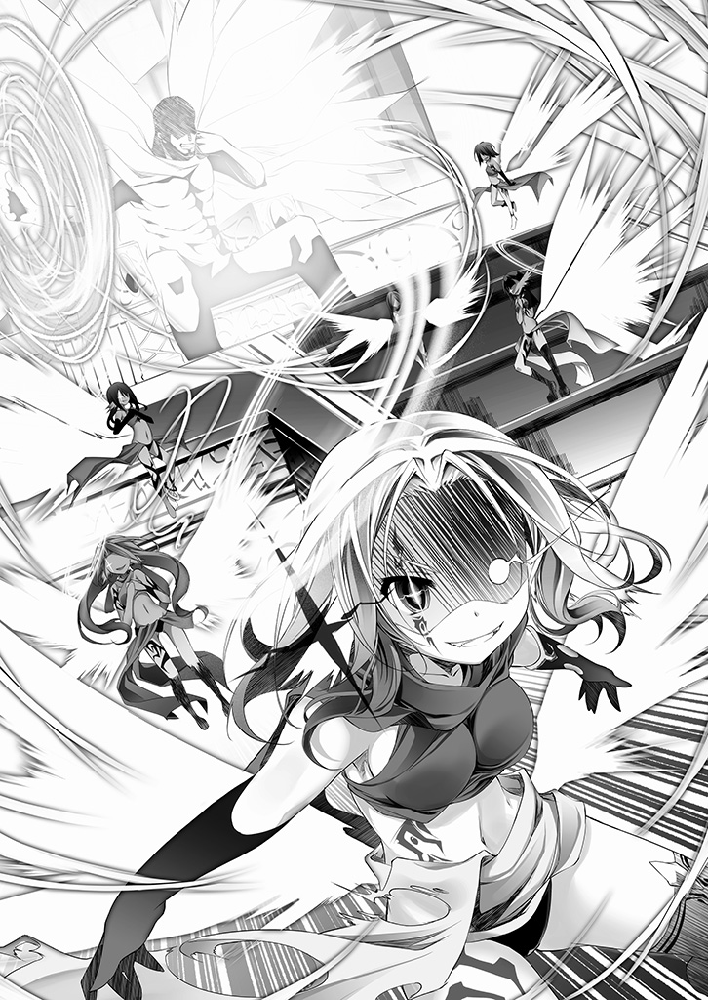
「憎悪を喜び、憤怒を貪り、叛逆を許す！ その愚かさを愛でるが主であり主に創られた天翼種──唯一の王、最強の体現、主の決定にその翼を捧げて、いざ示すのにゃ！」
主の何たるかを知らぬ蒙昧どもに──
「気の赴くまま────ただ蹂躙するが『強者』と!!」
天翼種達がその滾らせた力を解放していく様に、主は満足げな笑みを深めた。
そして静かな、だが天地を震わせる声で告げる。
「機械に森精に地精に龍と、余を前にして神を名告る痴れ者ども──子細無し」
それが何であろうと、所詮は有象無象の雑魚に過ぎぬ。
森羅万象、天地一切、全てを遍く滅ぼす力を前に、皆悉く灰燼に帰すべし。
──それが、最強にして世界の王たる戦神アルトシュの決定だった。
全ての天翼種が、その全霊たる『天撃』の力を、掲げられた主の腕に託して往く。
だがアズリールにはやはり、主の御心を推し量るまではできなかった。
宇宙の法則が慟哭し、星の秩序がその腕を中心に歪んでいく中──
「待ちわびたぞ、我が〝天敵〟よ」
彼女が聞きとった、主の小さな呟きの意味までは、未だ......。
「弱者に降されるが強者の定めであれば、果たして最強とは余の『神髄』であるか」
力が顕れ、法を示し、最強が定義される。
主の右の腕に、この世の誰にもどうすることのできない『理』が集まる。
玉座から立ち上がりもせず、左腕ではやはり頬杖をついたままに、獰猛に笑み崩れて。
光り輝く純白の翼を広げ、胸に満ちる歓喜とともに、主は──言った。
「いずれにせよ──今日を以て、余は永遠の問いを識るだろう」
■■■
シンク・ニルヴァレンは一瞬でも喜んだ数分前の己を呪った。
目の前の光景、世界が終わり往く嵐を前に──〝考えてはいけない疑問〟が生じた。
「......神霊種......って、いったい、なん、なのですか......？」
────............
戦神陣営を包囲展開し睨み合っていた連合艦隊に──突如『天撃』が撃ち込まれた。
シンクは、それが天翼種の攻撃ではないと即座に看破、森精種同盟に対応を命じた。
明白──精霊反応が違った。更にそれらの『天撃』による〝死者はなかった〟からだ。
何よりアルトシュ陣営から『天撃』を撃ち込む〝意味がない〟。撃つなら『神撃』──それ以外で『連合』に有効打撃は与えられないと相手も把握しているはずだからだ。
故に看破出来た──あの日の『幽霊』を知るシンクには、それが戦神陣営の先制を装い〝こちらに〟最大火力で先制する時間を与える、戦神に対する不意討ちの偽装攻撃、と。
シンクはすぐさま森精種同盟全隊に『虚空第零加護』の全弾術式解放を命じた。
十八発のうち半分をアルトシュに──続けて即座に地精種同盟に撃ち込む為。
そうして術式の解放がほぼ完了したとの報せを受けた──その瞬間だった。
──アヴァント・ヘイムから、常軌を逸したなどという表現では収まらない力──
──まさしく〝理外の力〟......天地神明をも竦ませる破壊の念が渦巻きだした。
八重術者であるシンクに理解も推測も許さぬ、理の外の力──直感が命じた。
連合全体で──仮想敵の地精種同盟も含めた全艦隊と情報を共有する。
各種各艦隊がそれぞれの観測手段で状況把握に努めるも──報告は一様に同じだった。
すなわち──『計測不能』と。
同じく『連合』側二柱の神霊種──森神カイナース、鍛神オーケインまで、沈黙。
星を揺るがす力の脈動。事ここに至って、ようやく皆が一様に理解した。
──『神撃』──その力を、誰もがまったく見誤っていたことに。
かくて『連合』は統一見解で全火力をアヴァント・ヘイムに撃ち込む旨を即決。
あれを前に同盟の諍いは二の次三の次──そう悟らせるに足る問答無用の力だった。
そうして──まるでそれを〝待っていてくれた〟とでも言うように──
────............
戦の神が繰り出す無双の一撃──すなわち『神撃』に。
最も殺戮に優れた種族達の各切り札、ともすれば一つで大陸を焼く力が。
放たれた『神撃』に一斉に衝突し、それでもまだ相殺出来ず──それは渦巻いた。
燦然と輝く、理の外から生ずる力。天地を殺してなお荒れ狂う、破壊。
『虚空第零加護』──幻想種の核を自壊させ、力を強制解放する術式。その性質上、複数もの幻想種を一撃で滅ぼせる力。森精種が運用可能な全弾──十八発全てを撃ち込んだ。そこに、それに匹敵する地精種の『髄爆』もまた全弾──十二発。更に龍精種八体が契約に従い、命を捧げての『崩哮』を八発も重ね──
「それでも止められない──神霊種ってなんなのですかッ!?」
神霊種アルトシュ──なるほどその力は、恐るべき神の御業に違いない。
だがそれを言うならば『虚空第零加護』も森精種の創造主──神霊種カイナースの加護を以て機能する百八十六重術式、同じ神の御業なのに──この天と地の違いはなんだ。
眼前の星さえ砕かんとする光景が、シンクにはアルトシュの解答に聞こえた。
──己が分際を弁えよ小賢しき塵芥ども 足掻け 藻掻け
──地を這う虫けらが如何に群れようとも天に及ばぬと終に識れ
......今にも吹き飛びそうな理性を繋ぎ止め、シンクは歯噛みして思考する。
この力を相殺することはおろか、理解すらも不可能。認めろ。それが現実だ。
ならば、渦巻いているこの力は──この後、どうなる？
ぶつかる次元違いの力の渦。それが生む微風さえ、精霊回廊接続神経を有する者が触れれば揮発する力──理解及ばぬ力とて、エネルギーの流動法則的に、結果は一つ。
渦はやがて収束し、拡散、放射される────〝全方位に〟。
「全艦通達！ 全術者総員──『久遠第四加護』展開ッ！ 急いでェッ!!」
シンクの号令に飛び交う怒号、だがシンクはわかっていた──無駄だと。
二十五年前、三千人で展開した防護術式は天翼種一体の『天撃』さえ防げなかった。
それを受けてシンクが編纂した防護──いや、封印術式『久遠第四加護』。
同じく神霊種カイナースの加護で展開する術式なら、今度は『天撃』を防げる。
その絶対の自負があった。だが──眼前の渦を眺めて苦笑する。
（これを相手に、紙クズ一枚分の意味さえあるか、怪しいのですよぉ......）
この力の収束、拡散放射の影響範囲は──推測不能。
だが『虚空第零加護』一発の影響圏を考慮すればある程度、想像なら出来る。
極めて楽観的に見積もって──この大陸の半分以上。その範囲内の全てが、死ぬ。
ほぼ全種族が集結しているこの地は──恐らくアルトシュを除き、根絶する。
「──『大戦』......『星杯』......『神霊種』──『神髄』......」
──〝疑うな〟、〝考えるな〟──そう、何処か無意識にあった思いは、だがこの世の終焉を告げて荒れ狂う光景を前にして消し飛び、疑問だけが、明瞭に浮かび上がる。
神霊種カイナース......森精種の創造主にして、森神──〝自然〟の概念。
神霊種──祈り、願い、〝活性条件〟を満たし『神髄』──つまり〝我〟を獲た概念。
（〝我を手にした概念〟......？ それは本当に神なのですかぁ？『神髄』って──）
いったいなんなのか──そう続きそうになった思考は、だが──
（......え？）
世界の終わりを報じて荒れ狂う絶滅の嵐が────唐突に、逸れた。
宙を舞う布が風に巻かれて流されるように、南西方向へと流れていく。
大陸を割り〝薙がれ行く〟理外の力に誰もが放心する中、シンクだけはそれを追った。
八重術式、その全てを同時展開し遥か遥か彼方を遠視したそこにいたのは──
「......機凱種..................？ 何故──」
そして世界を終わらせる光が、帳のように靡き大陸を割って駆けるその先。
数千機もの機凱種を包み消すのを──シンク・ニルヴァレンは、確かに遠視た。
瞬間──脳裏を過った思考──まさか。
まさかまさかまさか──精霊回廊接続神経が焼き切れる多重複雑な術式を駆使して。
シンクはあるモノを探索し、そして遂に──二つの人影を発見した。
それが意味すること──すなわち。最後の最後まで〝予定通りに〟──
この自分を動かしきった存在に、凶暴な笑みと殺意を浮かべて、彼女は呟いた。
「──......あなたがぁ、『幽霊』さんだったのですねぇ......お猿さん？」
■■■
天地崩壊の如き光景が彼方に見える、遠く離れた丘の上。
「──『設計体』より報告──出力《七二．八％》で再現設計成功──同期します」
一機の機凱種の女性体が──そうリクに告げ、腕を翳した。
「【典開】──Ｏｒｇ．００００──『真典・星殺し』──託します」
──虚空に生じたそれは、小さな塔の如く、地に突き刺さった銃だった。
先程目の当たりにした、世界を終わらせるが如き暴力の渦。
すなわち──『神撃』『虚空第零加護』『髄爆』『崩哮』が衝突した全エネルギー。
その〝七割以上〟を再現したというそれは──リク一人では......いや何人だろうと持てないだろう、背丈の数倍ある、銃と呼ぶには巨大すぎる──『杭』のようだった。
砲口を地に刺し、自立する『銃』は、ただ静かに引き金を引かれるのを待っている。
即ち──『合図』が来たら......リクに引かれるのを。
何も映さぬ黒い眼で、無言無表情でそれを眺めるリクに、機凱種は言う。
「【報告】それでは当機も戦線に向かいますのでこれにて──」
そういって去ろうとする機凱種を、リクの問いが引き留めた。
「今ので......こいつを造る為に、何個の機凱種が......壊れた？」
「──【解答】投入した十一の『連結体』中、五機を残し、四八〇二機が消滅」
「......五個は残ったのか」
「【肯定】他に質問はありますか」
「質問てより確認だが......おまえらがアルトシュの『神髄』を剥離するのを待って、俺はこいつの引き金を引き、星の核を穿つ──それで『星杯』は顕現する──以上だな？」
「────【肯定】アルトシュも、誰も死なない。【ルール】には抵触しない」
闇の如き眼を閉じ、リクはシュヴィの遺した指輪を握り込んで回想する。
──なに、単純な、話だ......
■■■
「率直に報告する──『遺志体』シュヴィの計算には誤差があった」
アインツィヒを名乗る機凱種がリクの隠れ家で語ったのは、こうだ──
たとえ『通行規制』を三十二個並べても〝収束〟は──不可能だと。
「全陣営総攻撃を『通行規制』により下方誘導するのは〝十のマイナス六〇九乗秒〟差で間に合わず、力は衝突して渦巻く。その後に指向性を与えて収束させるのは──不可能」
シュヴィの計算で発生した、涅槃寂静も霞む、余りに微細すぎる〝誤差〟。
それが──機凱種が複数連結体で並列演算して出した結論だという。
その言葉にリクは目を伏せ苦笑する。全て上手く行っても──失敗してたわけだ。
そんなリクに、だが──とアインツィヒは続ける。
「『遺志体』が配置した『通行規制』二十四個で──〝逸らす〟ことは可能だ」
「......それが？」
「衝突して渦巻く力は、本来ならば収束し、後に全方位拡散する。だが円周状に配置しようとした三十二の『通行規制』が二十四に留まったことで──南西方向に穴が空いた」
──つまり、とリクは先読みし、答える。
「衝突した全ての力を、下じゃなく──南西方向へ誘導することは可能だ、と？」
頷き一つ──アインツィヒは続ける。
「付随し情報を提供する──」
それはあくまで道具として。
「一つ、機凱種には『偽典・天撃』──『天撃』を模倣する武装がある」
観測器が捉えた情報にすぎぬと。
「二つ、これは『遺志体』も把握していたが、星を穿ち解放した力で『星杯』を顕現させれば五二％の確率で──現れるのは戦神の手の中。奴はそれ程の『神髄』を有する」
そう語られてリクは改めて思う──『神髄』って、何なんだ、と。
だがそんなリクを余所に、アインツィヒは続けた。
「以上を踏まえ『意志者』よ。戦略を補正する──命令を」
そう、彼らは機械。ただの道具。命令を──決定を下すのは──使い手の意志だ。
「──なら、話は簡単だ。アルトシュ陣営からの先制攻撃を装う」
思考を切り、光を返さぬ眼で戦略図を眺め、リクは続ける。
淡々と、冷静に、冷酷に、打算的に──徹底的に。
「アヴァント・ヘイム背後から『天撃』を連合へ誰も殺さず発射。それだけであの森精種は動き──あとは勝手に全火力の衝突だ。それを南西に逸らした後、これを──」
地図にコマを並べる手が、一瞬止まりそうになり──だが、続ける。
「模倣・再現して収束する武器──機凱種なら造れるな？」
「肯定。三十二『連結体』の、十一を投入すれば、最低でも七〇％で再現可能」
──ギリギリと音を立てる『鍵』を掴むように胸に手をやり、リクは続ける。
「それで、星の核を貫き『星杯』を具現化するに足りるか？」
「肯定。四八〇七機を損失し、七割の威力を収束させて撃てば核を穿ち、結果精霊回廊の源潮流を破綻させられ──『星杯』の顕現必要数値に届く噴出が発生する」
──つまりシュヴィ──妻の──同胞を、五千人近く見殺────
そう過った思考を振り払ってリクは再度、胸をかきむしるように唱える。
──『鍵』をかけろ。そして自分に言い聞かせるように言う。
「【ルール】に道具の損壊は含まれない──俺が腕を捨てたのと同じように」
「然り」
──そして最後の問題を、リクは問う。
「残った二十一『連結体』でアルトシュを殺さず無力化することは可能か」
「──肯定だ」
............。
「──『神撃』は全天翼種の『天撃』とアルトシュの力を束ね放つ一撃。天翼種は無力化しアルトシュも弱体化。その隙を突きアルトシュの『神髄』を──〝剥離〟する」
「............」
「神髄剥離後の神霊種は、おそらく百年〝不活性化〟する。その後に精霊回廊の源潮流を穿てば『星杯』は──確実に『意志者』の手元に顕現することになるだろう」
その言葉にリクは顔を伏せ苦笑する──こいつ、本当に不器用だな、と。
まるで、あいつのようだと。
心無い機械を装うなら──確実、おそらく、だろうって機凱種っぽくないと気付け。
「我らは心無き機械、ただの道具、命令には忠実に従い実行するのみ──故に」
そして、根本的な話としてさ──とリクは眼を伏せる。
「アルトシュの〝神髄剥離の光〟が見えたら迷わず引き金を引き『星杯』を手にせよ」
──嘘を吐く時に、目を逸らすなよ......機械が、さ......
■■■
回想を終えたリクに、機凱種の女性体は、一礼して言う。
「【報告】それでは、わた──当機も戦線へ向かいます。『意志者』リク──」
──そうして最後まで、ただの機械を自称し続けた連中は。
あまりに慣れていないことに自覚すらない台詞を残し、
「──どうか、ご武運を......」
跳躍していった。
■■■
【──『全連結指揮体』より──】
【ユリウス／カーフマ／ルイス／マルタ／ノルト／オート／エコン／パウラ／クヴェレ／リヒャラト／ザムエー／シューレ／エスツェ／テオドー／ウーリヒ／ユーバ／ヴィル／ヴィエム／イクサティ／イプシロン／ツァハリア──残存『全連結体』全九一七七機へ】
【──命令は唯一つ。遺志体シュヴィに賜りしこの魂を賭して、意志者リクを支援する──即ち。神霊種アルトシュの『神髄』消却。万障殲滅損害無視にて是を完遂せん......なお、付随しおよそ機凱種らしくない発言を以て命令終了とする──】
【──命無く往き、命無く征き──命在りて逝こう──以上】
【【【了解──ッ!!】】】
アインツィヒは機凱種らしくもないと自嘲し『嘘』を謝罪する。
すまない『意志者』よ。『神撃』後とて、天翼種、幻想種、神霊種を相手に。
誰も殺さずアルトシュの『神髄』を剥離するなど不可能──討伐さえ困難を極める。
どうか──こう思って欲しい。心無き道具が勝手に暴走した──と。
......そうして、命無き物を騙る者達は、今度は声にして、叫ぶ。
「全機体、武装使用権限、限定解除──！」
『『──【典開】......『偽典・焉龍哮』──ッ!!』』
■■■
「──なめ、るにゃ──廃材がぁぁアッ!!」
アルトシュの玉座の間へと続く通路に陣取り、アズリールが叫ぶ。
残り少ない力を振り絞って放つ無数の光刃が紅い空を白ませ、いくつかが敵影を捉え。
碧い光を放って爆散する複数の機凱種を、辛うじて視認する。
──最大威力の──『神撃』。
その発射直後だ。ほぼ全ての天翼種が力を失い、身動きも出来ない者までいた。
それを狙ったように──いや、事実狙ったのだろうタイミングで。
空を覆い尽くすような、機械の軍勢が押し寄せた。
龍精種の【王】が一つ、『焉龍』を四分の一の力で屠った、その全軍が迫る。
僅かなりとも力を残している末期個体や、アズリールなど一部の天翼種。
そしてアヴァント・ヘイムの攻撃だけで、それらを迎え撃っていたが──限界がある。
対空砲火は着実に機凱種を撃破していっている。
だが、損害など気にもしていないのか、機械の軍勢はまっすぐに突撃してくる。
──恐らくジブリールも言っていた、アランレイヴの『崩哮』を模倣した武装だろう。
それらの一斉掃射が──戦える力を残している僅かな天翼種も順に消し飛ばしていく。
動けずにいる者──即ち障害にならないと判断した者には、見向きもせず。
それどころか、何のつもりか。
機凱種は、これを好機と攻め込もうとする連合艦隊に対してさえ、攻撃を加えていた。
明らかに、殺す気はなく。ただ艦隊の戦闘力だけを奪っていく。
──『抵抗するな。可能な限り殺したくない』──
そう語るように、機械の群れが膝をつくアズリールの脇を通り抜けようとする。
「......ふざ──けてる、のかにゃ......にゃぁ塵芥ぁ──ッ!?」
その向かう先はわかっている。
まっすぐ──アルトシュ様のおわす玉座の間だ。
「素直、に、主を殺されろ──とでも言うのかにゃこのスクラップはぁッ！」
そう叫んだアズリールの光輪が、不規則に歪み破綻する。
迫り来る機凱種の群れ──前方の空間に手を翳して、
「天翼種の攻撃が『天撃』だけ──馬鹿の一つ覚えとでも思ってるのかにゃぁッ」
瞬間、前方の空間が爆ぜた。
天翼種の『空間転移』を応用した──空間への作用。
強制的に穴を開けられた空間、その揺り戻しが前方へねじれ奔り、全てを砕く。
空間が捻れ、歪み、その影響圏にある全てを鉄屑の破片に変える。
──その攻撃に何十体巻き込めたのか......だが、それが限界だった。
「──ハァッ......ハァァッ......はぁ......ッ！」
玉座へ続く扉に背を預け、アズリールもまた、ジブリールと同じく。
力を使い果たし、子供のようになった姿で、息を荒らげる。
──それでも。この先には誰も通さぬと前方を睨むアズリールの耳に、だが。
絶望的な声が飛び込んだ。
「──『解析体』から『指揮体』へ......天翼種の『空間転移』原理──解析完了」
「────ッッッ!!」
血の気が引くとはこのことか。アズリールは己の過ちに遅まきながら気付く。
機凱種は、受けた──〝攻撃〟を解析し模倣する装置を造り出す。
自己作用故に、今日まで解析されなかった『空間転移』を──攻撃に使った。
それが何を意味するか──続いた通信音で肯定された。
『──『設計体』から残存機へ──『偽典・天移』設計完了、同期する』
同時にアズリールの背後──アルトシュの玉座へ続く扉を撃ち抜く閃光が奔り、
『目標地点視認。全機共有──敵無力化を済ませたものから──転移せよ』
「しま──ッ！」
『──【典開】──『偽典・天移』ッ！』
アズリールが失敗を悔いる間もなく、そう告げた機凱種が、視界から消失した。
もはや飛ぶことはおろか、歩くことすら覚束ないアズリールは、それでも。
這うように、撃ち抜かれた扉......主の下へ向かう──
■■■
果たして、目的地に転移したアインツィヒを迎えたのは、巨躯の男だった。
視認は初めて──正確には、視認してデータ共有が間に合った機体が過去にいない。
故に照合は不能。だが照合せずともわかる。圧倒的な存在感で玉座に座るそれが。
この状況で──不遜に、傲慢に、当然に、頬杖つく獰猛な金色の双眸のそれが。
最強、戦神、そして目標──『神霊種アルトシュ』だと告げている。
アインツィヒに続き、一機、また一機と転移し増えていく機凱種の群れを前に──
「──許す。名告るがよい」
言の葉一つで空間を揺らし、全観測装置を変動させて、アルトシュが問う。
「【拒否】道具は名告らない」
アインツィヒの解答を、アルトシュは「戯け」と、時間を軋ませて笑った。
「腕の名を訊いて何とする。余の『敵』の名を問うておるのだ」
「────────」
アインツィヒは答えない。元より答えるわけにもいかない。
沈黙し、ただ戦況を把握し、そして戦闘可能な機体の到着を待つ。
残存戦力──八七二機──『偽典・天移』を共有出来た機体はそのうち七〇一機。
つまり全機到着でも最大戦力は七〇一機──本来の『連結体』二つに満たない。
疲弊した天翼種と、幻想種一匹にここまで削られるとは──アインツィヒは苦笑する。
『意志者』の指摘通り、数学が未完成過ぎる道具、と機械が認めるのも皮肉な話だ。
そう思考して無言を続けるアインツィヒに、だがアルトシュは、
「うむ然り──それで善し」
むしろ、笑みを深めた。
「三千世界に轟く最強と相対するは、世界の何もが顧みぬ最弱──然もありなん」
そして、頬杖を崩し──
「待ち侘びたぞ──余の『敵』たらんとする兵よ」
アルトシュが玉座から、立ち上がる。たったそれだけで──
【アインツィヒより残存全機へ......これは当機の異常か？】
機凱種としての観測装置、その全てが──アルトシュの〝質量増大〟を示していた。
否、それも正確ではない。光学的には間違いなく、眼前の男は立っただけだ。
──訂正。纏っているエネルギー量が増大──再度訂正。エネルギーではない、明確に存在情報そのものが増大している。存在しないものが生じるように。
だが遂に玉座の間に揃った七〇一機、その全機が解答する。
──【否定】、と。全機が同じものを観測していた。
あり得ない。あらゆる熱力学法則に反している。魔法とて、精霊を運用する以上はエネルギー交換の範囲内で物理法則をねじ曲げているに過ぎない。説明の付く話ではない。
だが──全機体のあらゆるセンサーはただ、同じ結論を出している──即ち。
質量が増大している──天を、地を、世界を包む概念が形を帯び現れようとしている。
【ありえない──なにが起きている......ッ】
アルトシュは『神撃』使用直後──平時の一二％未満の力になっているはずだ。
全『観測体』『解析体』は統一見解としてそう試算している──なのに。
その思考を読むように──あるいは本当に機械の思考を読んでか、アルトシュが言う。
「──最強とは最強故に最強。力の増減など何の意味がある？」
────、
なるほど、とアインツィヒは素直に認めた。
全く非論理的だが、今や感情を手にした機械は、それに対し〝然り〟と答える。
──『最強』という概念。であれば、と『心』を手に入れた機械は考える。
似通った異質が異質を仮定し、一つの仮説を導き出す。
それは、永らく不明とされて来たもの。
【〝我〟を手にした〝概念〟。それは──意思を持った法則ではないのか？】
すなわち『神髄』とは────
「気に病むことはない。強者とは余であり、弱者とは余以外の凡てだ」
獰猛な、だが自嘲気味にそう語る『最強』に、アインツィヒは苦笑を返す。
【全機。思考を共有している機体、いずれかでも生き残ればこの仮説を再検討せよ】
【了解】
もし『神髄』がこの仮説通りならば、眼前の概念の討伐は──原理的に不可能。
だが──とアインツィヒは問う。
【残存全『観測体』『解析体』──『神髄』は〝物理的に存在し、確認可能〟か？】
【【【──肯定】】】
ならば──仔細なし。
「全機、『遺志体』が編纂せし対未知用戦闘アルゴリズム──【典開】──ッ」
なおも質量増大を続ける目の前の巨人──概念──現象、あるいは法則か。
天地を包むまで増大するだろう正しき神を前に、アインツィヒは声に出して命ずる。
現時点では仮説に過ぎない。敵戦闘力を試算することは不可能。
ならばどうするか──我らが賜った『心』の命ずるままに行動する。
即ち──敵が未知ならば、想定しえない全てを想定する。
理解するな計算するな──最後に信じられるのは感覚のみ──そうだろう『遺志者』。
──アヴァント・ヘイム内、玉座の間。
〝神〟を前に、七〇一の──機械を騙る、命ある者達が叫ぶ。
【『目標アルトシュ神髄』──毎秒ごとに事象変動、法則転換さえ可能と仮定──】
──ならば。
【その度、半秒ごとに対応し切る──各機に問う。機凱種には不可能か？】
【【【否定ッ！】】】
そう──如何なる存在、如何なる概念であろうと。
【存在するなら破壊する──それが機凱種だ。各機健闘を祈る、以上ッ！】
【【【了解ッ！】】】
なおも肥大して顕現していく『敵』へ、全機が連携を取り一斉に叫ぶ。
「──【典開】──ッ!!」
そうして、一斉に襲いかかる機凱種の群れを見据えて──
アルトシュはただ一言──大陸に響き渡るような声で、告げた。
「さあ、我が『神髄』──戦の真髄を世に示すがよい、我が愛おしき『最弱』よ──!!」
──......
────............
■■■
機凱種に託された『真典・星殺し』を手に、リクは想う。
──自分はここで、いったい何をしているのだろう、と。
敗北が確定したゲーム、それを泥仕合で台無しに──
「──黙れ。まだだ。まだ考えるな」
そう自分に言い聞かせ、外れそうな心の『鍵』を確認する。
──問題ない。『鍵』はかかったまま。まだ、まだ、やれる......
遠く遠く、遥か遠くに微かに見えるアヴァント・ヘイム。
あそこで、機凱種達が、誰も殺さずアルトシュの神髄を剥離すべく稼働している。
自分は『合図』を待って──ただ、この引き金を引けばいい──
そして──ふと、声が──いや、星を揺らすような〝激震〟が奔る。
天よ、地よ、遍く全てよ──聞け、と命ずるその〝声〟は語る。
まさしく神──最強の神霊種らしい絶対的な響きで、
『これが敗北──成る程。心沸き立つ楽しい戦であったわ』
聞こえるだろう、と確信するように、告げる。
『名もなき最弱よ──誇るがよい。貴様は正しく、最強の〝敵〟たり得た』
────そして。
リクは夜のような片眼に彼方──紅い空を塗りつぶす白光を映した。
感慨なく想う──アインツィヒの言葉通りの光景。
即ち神霊種アルトシュの神髄の剥離に成功したという『合図』だ。
──そういう、ことに......なっている。
「............」
本当は解っている──だが、解らないとしておかなければならない事実に。
リクはただ頭を振って独り──『真典・星殺し』の引き金に、指をかける。
機凱種が一体も戻って来ない......その意味にも気付かず──否。
──気付かないフリを続けて。
恐らくは、アルトシュさえもそれを察したからこそ。
一言も〝討たれた〟と、言わなかったのだろうから──
「......なんとか、もってくれた、な......」
今にも壊れそうな心の『鍵』を確認して。
リクは、リク自身が定めた【ルール】を、思い返す。
──一つ、誰も殺してはならない。
──二つ、誰も死なせてはならない。
──三つ、誰にも悟られてはならない。
──四つ、如何なる手も不正ではない。
......そう、このルールには抜け穴があったのだ。
シュヴィを──機凱種を〝生命〟と認識せず、道具とカウントし。
機凱種が行った『如何なる不正』も悟らなければ──
気付かぬふりさえすれば──【ルール】には一切抵触しない。
苦笑してリクは想う──まったく詭弁もペテンも、ここに極まれりだ。
論理しか語れなかったシュヴィが──機凱種が──詭弁を語る。
その意味を悟れば、拒否出来るはずが、ないだろ。
それが、シュヴィの『心』からの願い。
互いの手を離した──そのミスから生じた必敗の圧倒的劣勢──せめて。
──『完全勝利』とは行かないまでも。
──『引き分け』に持ち込む最後の手。
故に機凱種は、星を穿ち、ゲーム盤を壊す最後の一手を、こう名付けた。
──『真典・星殺し』──と。
「それじゃ──これでゲーム終了だ......悪いね、神さまども──」
そうこぼして、リクは地に突き刺さった杭のように巨大な銃の引き金を──
引いた──瞬間──
リクの身の丈を遥かに超える杭が、天地神明──その全てを吸い上げんと。
壮絶な力を流入させるのを感じた──瞬間、地に刺さった砲口が、光を吹いた。
大陸を焼き尽くし、星をも焦がす力の、七割。
その力が、たった一条の光に収束して針のように大地を射貫く。
星の核を貫き、精霊回廊を破壊するに至るまで。
──リクの認識にして一瞬の出来事。
だが同時に──リクの心の『鍵』もまた、消し飛ぶのを感じ──
「......何、が、ステイル・メイトだクソが......これの──何処が引き分けだ──ッ」
文字通り、たがが外れたように。
光の戻った眼で、リクが閉じ込めていた全ての感情もまた噴き出していた。
壊れた『鍵』に、心は──もう止まらない。
──いったい、何人が死んだ。
シュヴィの仲間。命ある奴ら。天翼種が──いったい何人死んだッ!!
自分自身までペテンにかけて──シュヴィの想いさえダシにしてッ！
無限の犠牲を出し続ける戦争を、終わらせる為の最後の犠牲──
ここに至って、まだそんな言い訳をしようとする己に殺意すら生じる。
──何が引き分けだ。
テメェなぞただのクズ野郎、ただの敗者なんだよ。
いくらシュヴィの願いだ何だと、理由をつけてもッ！
テメェはッ！ 無様にッ！ 負けたんだよ──リクッ!!
............
「なぁ、シュヴィ──何が足りなかった、んだろう......なぁ」
......ああ。問うまでもなく、わかってるさ......。
「なぁ、シュヴィ──もし俺とおまえ、二人で一人だったら、さ......」
......ああ。次こそ勝ちたいなシュヴィ、おまえと、二人で......。
今度こそ、誰も死なない、死なずに済む──そんな、ゲームで──
地殻ごと捲り上げられ──穿たれた星の核──精霊回廊の源潮流が噴き上がる。
膨大な──今しがた放った力など、針の一突きに過ぎないといわんばかりの。
世界を構成し──そして跡形もなく消し飛ばすに足る十分な力が──放出される。
その力にリクは、飲み込まれながら────見た。
「............あ............れ、が......？」
──『星杯』......
──光のような、五芒星が浮かぶ多面体、星形の正十二面体。
解放された全ての力が収束する場所に顕現する──なるほど。
本当に〝勝者〟の許に現れるわけだ......だが手を伸ばしても──届かない。
視線を落とし、苦笑する。
「......なるほど、そりゃ、届かないよなぁ......」
残った右腕も無くなったのでは、届かない。
まして自分は──〝勝者〟では、ないのだ──
途方もない力を放出する精霊回廊の光に体が呑まれ、崩れ......力が抜けていく。
──いつからだっただろう。
ふと、今更に、自分が恥も外聞もなく、涙を流していることに気付いた。
包帯塗れの腕のない男が、崩れながらガキみたいに泣きじゃくっている──
「......はは......ダッセぇ──なぁ、俺......」
どうせならカッコ良く生きて、カッコ良く死にたかったのに。
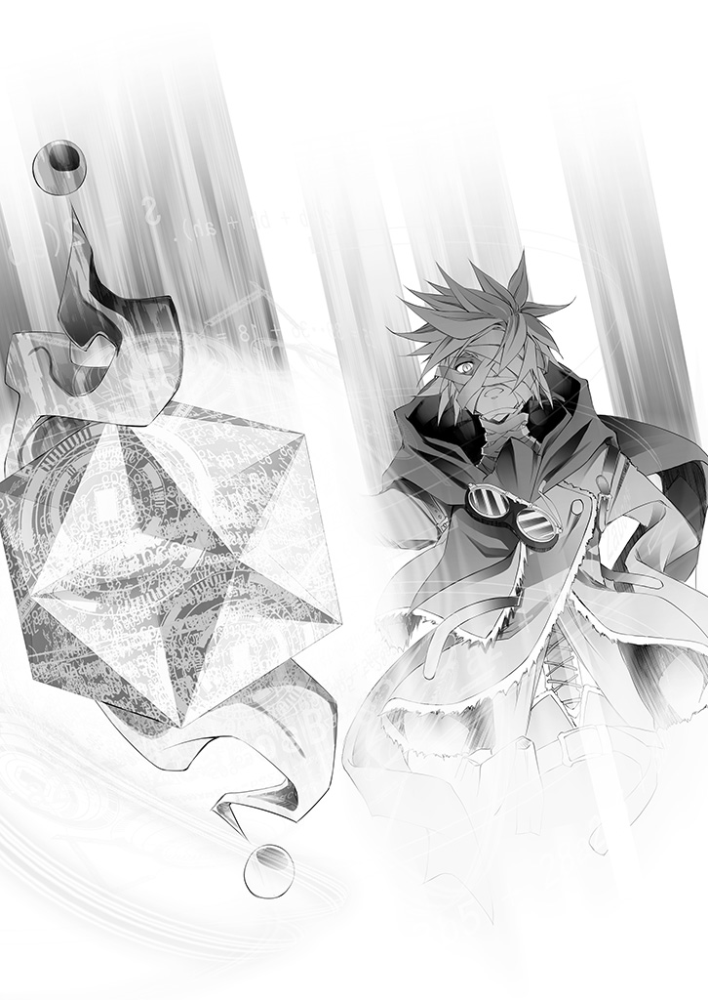
結局、一度として〝勝つ〟ことは出来なかった人生。
敗者らしい滑稽な死に様──今更、恥も外聞もない。
「なぁ、シュヴィ──俺、未練たらたらだよ......しまらねぇ旦那で、すまんな」
脳裏を過るのは──ただただ無数の後悔ばかりだ。
これまで見殺しにしてきた者達の顔が、次々と過る。
己の我儘に付き合ってくれた一七七の『幽霊』の顔も。
押し潰されそうな罪悪感と、だがそれ以上の、最大の後悔に気付いて。
──自分でも呆れ返り、あまりのカッコ悪さに笑いすらこぼれた。
「あぁちくしょ......やっぱコロンに土下座してでも、おまえを抱きたかったよシュヴィ」
リク・童貞・二十歳。妻帯者でありながら、童貞のまま死す。
ふむ、それはそれである意味カッコいいのではないか？
「いや、やっぱねぇな......そこは強がれねーわ......はは......」
──どうやら最期の最期までダサく、自分は死ぬらしい。
なら、最期まで──徹底しよう。
徹底的にダサく──〝他力本願〟に縋って。
「......なぁ、想いから生まれるのが神なら──ゲームの神さま」
──既にない、この両手が、
「塵みたいなこの命だが、全て捧げて、生まれて初めて〝祈る〟──頼むよ」
敗者の分際で、勝利品を盗るのが汚すぎるというのなら。
唯一神の座を手にするには血に塗れすぎているのなら。
──頼むよ。お願いだ。
せめて〝俺達〟に何か意味があったって言ってくれ。
俺じゃなくていい。誰でもいい、誰でもいいから──
この戦争を終わらせられる、誰かに──
それを──『星杯』を──誰......か............に........................
............そう、意識が消えゆく中、
「はっ......」
──『星杯』に近づく者の姿に、リクは笑った。
光の中『星杯』に歩み寄るその姿は、誰も未だ見たことのない者だった。
大きな帽子をかぶり、両目にはダイヤとスペード。見覚えのない少年──だが。
リクには、それが誰かが、わかる。
いつも──いつもいつもいつも、うんざりする程、自分を負かせてきた──
闇の奥にいつも見た、不敵な笑みを浮かべていたのだから。
「......はっ......はははは──あっははははははッ！」
──んだよ、やっぱ、いたんじゃねぇか......てめぇ......
「──なぁ、またゲームしようぜ......今度こそ、勝ってみせるから、さ......」
──シュヴィと二人で......ぜっ、たい............に......
............
そう、言い残して──光に呑まれ消えるリクに。
リクとシュヴィ、たった二人が信じて生まれた最弱──最後の神霊種は。
何かを堪えるように、無理して作った、引き攣った笑顔を返して。
そっと......『星杯』に手をかざし、そして────............
■■■
その光景を、世界の誰もが目撃した。
故に、それは、この物語において数少ない、記録に残されている史実......。
──まず、光が世界を包んだ。
遠い彼方から広がった光は、紅い天も碧い地も白く染め上げ、天地の境を奪った。
音もなく広がった光が止むと──世界は、色を失っていた。
天と地を見渡した誰もが困惑し、そして、一拍置いて気付く。
空を舞う灰は宙に留まり、戦火は揺らめきをを忘れ、あらゆる物は停止していた。
──時間さえも。命を持つ者達以外の、その全てが。
その光景に呆然とする、生きとし生ける者を置き去りに、数瞬の間を置いて。
──衝撃が世界を包んだ。
破壊とは明らかに違う──優しい力が世界を舐めるように奔った。
同時、空を見上げた者達は──眼を見開いた。
常軌を逸した光景──全ての生物、種族がただ無理解のまま眺めるそれを。
──ただ。
一七七の『幽霊』と、一人の人間だけが理解を以て見ていた......
■■■
────............
かつては名があった、霊骸に侵食された体を岩に預ける『幽霊』は。
「......ホントに、やったんだな......大将......」
辛うじて残る視力で空を見上げ──紅く天に蓋していた粉塵が──
風で札が捲れていくように、バラバラと冗談のように消えていくのを見た。
────............
同じくかつては名があった、吸血種に噛まれ病んだ『幽霊』は。
「......はは......マジでやりやがった──あの野郎......ッ」
初めて浴びる光に体を焼き焦がしながら──荒廃し破壊し尽くされた山々が──
手品のように逆再生して、あるべき形に組み直されていくのを感じた。
────............
一七七の『幽霊』達が、それぞれの場所、それぞれの体で。
何が起きたかを理解して、思い思いの感慨を胸に見た。
抵抗不可能、絶対的な命令に、森羅万象が呼応して──
──世界が。作り替えられていく様を。
人間には魔法を感知することなど出来ないが、それでも確信があった。
何故かはわからない──だが。
戦争が──永き永き大戦が、これで終わったのだと。
その確信に、思い思いの感慨を胸に──『心』から笑いがこぼれた。
────............
最後に──『幽霊』達を除いてただ一人、理解を以てそれを眺めた者は。
ルーシア大陸、リクとシュヴィの寝室で、窓から顔を覗かせていた。
「......本当に......『星杯』を手に入れたのね......みんな」
──いつの間にか、灰は降り止んで。
天を仰ぎ見たコロンは、空が蒼いというお伽噺は真実だったのだと知った。
そして、初めて──
──太陽を、見た。
「......さすが──自慢のおとう、と......と、いもう......と......」
まぶたを閉じて、それでもなお眩しく突き刺さる陽射しに眼が痛む。きっとそうだ。
リクは、シュヴィは、みんなは──
自慢の、自慢の──弟と妹──あの二人は。
本当に。
──本当──に。
永遠の戦争を、終わらせたのだ。
姉として、お姉ちゃんと、して......誰より──
誇りに思────
「......ぁ──ぅあ......ゎあぁぁぁぁあぁぁああぁァアッ!!」
やっぱり、無理だよ──私......ねぇ......ッ！
「ねぇリクぅ、シュヴィ、やっぱりお姉ちゃんこんなの納得行かないよぉぉおッ」
だって──二人とも、お姉ちゃんとの約束......破ったんだよっ!?
「もう、私──家族失いたくないって、言ったのに......なん、で、どうして──ッ！」
その理不尽に泣き崩れて、コロンは弟妹の名を叫ぶ。
三人の名前が刻まれた青い石を手に......ボロボロと涙を落として想う。
──どうして、あの二人じゃなきゃダメだったのか。
──自分ではダメだったのか。どうして自分には何も出来ないのか。
なるほど、永い大戦はこれで終わった。
もう死に怯え、絶望に悲嘆する日々は、終わったのだろう。
引き替えにコロンは──誰より大事な──弟と、その弟が愛した妹を、失った。
そうして──自分にはいったい、何が残った──ッ？
「こんなの、あんまり......だよぉ......どうして皆、私を置いて逝くのよぉ......」
──『なぁ──コローネ・ドーラ』
ふと......リクと最後に交わした会話が──脳裏を過る。
■■■
機凱種──アインツィヒと共にコロンを訪ねたリクの言葉に、コロンは言った。
「────やめて」
もう見ることはないと思っていた、闇のように黒い眼。
光を映さない瞳をした弟リクは──だが構わず続ける──
「もし、全て上手く行って終わったら──」
「──やめてって......言ってるでしょッ!?」
リクの言葉を、コロンはヒステリックに叫んで止める。
「私を──フルネームで呼んだこと、一度もないくせにッ!! 何で今──ッ」
涙目で叫ぶコロン──コローネ・ドーラに、だが。
「全て上手く行ったら、きっとわかると思う。そしたら──」
黒い眼のまま、だが──懇願するような笑みでリクは続ける。
「テーブルのチェス盤、白いルークを──『ｅの６』に動かしてくれるか」
「......そん、なの──自分で、やりなさい......よっ」
拳を握って、絞り出すようにコローネ・ドーラは言う。
──本当は、わかっている。
その言葉の意味を汲めないような、浅い付き合いじゃ、ない。
自分が言い出したこととはいえ──それでも〝家族〟なのだ。
浅い付き合いなどでは──断じてない。
だけど、でも、だからこそ──言えない。
〝行くな〟の一言が──だって、リクは......リクとシュヴィは──
リクがコロンから視線を外し、遠く──部屋のテーブル、その空席に目を向ける。
目を細め、ここではない何処かを見つめて、祈るように零す。
「......なぁ神さま。もしおまえが俺の妄想じゃなく、本当に居るなら」
────。
「......ゲームで戦争を無くそうとした、救いがたいアホがいたの覚えといてくれるか」
そしてなおも無言のコロンに向き直って、
「......コローネ・ドーラ......いや──」
顔を伏せたままのコロンに、リクは──荷を背負って、
「姉さん......今まで、ありがとうな。そんで──」
部屋を出て、最後の言葉を遺す──
「人間を、〝次〟を、〝後〟を......任せる。姉さんなら、俺は信じられる」
■■■
──涙に顔を崩して、コロンは這うようにテーブルに移動した。
そして──リクの『遺言』通りに、コマを置いて、零す。
「......チェック......メイト......だね。リク......」
涙を袖で拭って、コロンは立ち上がった。
──託されたもの......やるべきことは多いのだ、と。
泣いている暇など、もうないのだ、と。
リク達が作ったものを無駄にしない為にも──
まずリクとシュヴィ......『幽霊』達がこの世に存在した、その全ての根拠。
記録やメモ、巻物の全てを──燃やさなければならない。
リクが、シュヴィが、人間という種族が。
暗躍した記録の全て、その一切を遺さず抹消する。
今後の世界でも変わらず──気にもされない。
取るに足らぬ弱者だと思わせておく為に。
──〝次〟の為に。そして〝後〟の為に。
三人の名前が刻まれた青い石を見下ろして、コロンは零す。
「ねぇリク、シュヴィ......二人は本当に凄いんだよ......わかってる？」
──確かにリクが設定したこの『ゲーム』。
シュヴィ、リクが死んだ時点で控えめに見ても引き分けだ。
目的は達成したが、『ゲーム』には負けたわけなのだから。
「でも、お姉ちゃんはやっぱり思うんだ......二人は、信じられないほど凄いよ」
──神々に、世界に挑んで。
ただの一度も悟られることなく。
その痕跡さえ一切残すことなく。
永遠に続いた大戦を──僅か二年で終わらせて。
記憶にも記録にも遺らず、伝説にすらなれない。
決してうたわれることのない神話を紡いだ......〝次〟の人々の為に。
それが敗北か？ コロンにはどうしてもそう思えない。
これが偉業、大勝利でなくて、なんだというのか。
「......でも、おかしいよね......どうしてかなぁ............」
今更ながら思う──もしかしたら。
これこそが、リクがずっと感じていた気持ちなのかな、と。
「......なんで、こんなにも悔しいの......かな......ッ」
もう泣かないと決めた──だから。
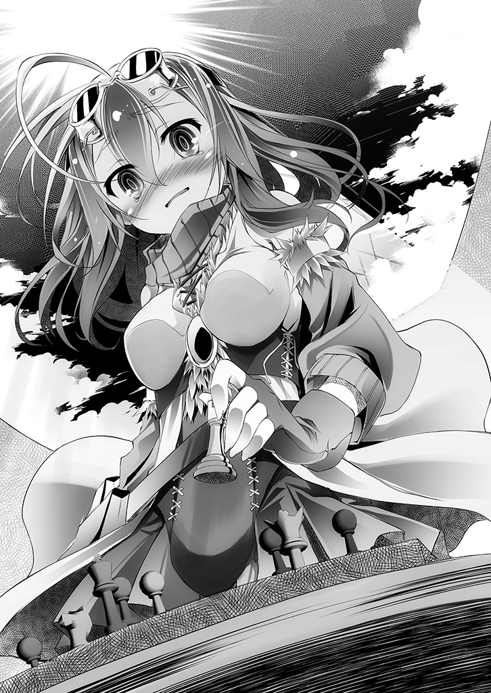
ただ、顔を覆って、壁にもたれかかるように、コロンは退室する。
────............
「──ゲームが終わってないから、だよ」
コロンが立ち去って無人になった部屋に。
──いつの間にか、つば付きの大きな帽子をかぶった少年が立っていた。
側に星形の正十二面体──『星杯』を漂わせた、いたずらげな笑みの少年は。
チェス盤に歩み寄り──そっと、黒いクイーンを動かして、零す。
そして──コロンの勘違いを訂正する。
「チェックメイトじゃなく──チェック、だよ......でもこれじゃ......」
そう、少年は盤面を見下ろし、ここから取り得る手を思い描き。
どうコマを動かそうと──千日手以外の展開がないことに、笑みを零した。
「パーペチュアル・チェックに持ち込まれたね......はじめてだね、僕と引き分けたの」
最後まで、最後の最後まで、彼は──諦めなかったわけだ。
圧倒的劣勢でも、せめて食らいついてやろうと、ここでさえ──
──なぁ、またゲームしようぜ......今度こそ、勝ってみせるから、さ......
──シュヴィと二人で......ぜっ、たい............に......
それを思い返して、少年──たった二人が信じて生まれた神霊種は。
リクが幼いあの日、闇の奥に見た空想上の、最強のゲーマーそのものの。
不敵で不遜で、そして──負けず嫌いな笑みを浮かべて『星杯』を翳した。
────............。
この世界のあらゆる知的生命体は、神霊種達に創られた。
──唯一......人間を除いて。
「誰にも創られず、誰にも望まれず、誰にも願われず。ただ己の意思で、獣から二足で立ち上がり、知性を手にするに至った唯一の種族である故に──名も無き種族──人間」
彼らだけが、不毛で無為でくだらない戦争を終わらせることに成功した。
その結果が泥仕合だったとしても──彼らだけが。
それを、ただの獣と同列に語るか？ ──断じて否だろう。
「だから僕が、君達に唯一神として名を与える──人類種......『免疫』と」
学習を重ね、耐性を得て、決して抵抗を止めず、最後の一人になっても諦めず。
ついには星そのものの免疫機能とばかりに愚かな病を止めさせた者達。
進化という概念、無限の可能性を──その身に秘めた種族に、相応しい名前を。
そしてやおら、テトは笑って続けた。
「さぁて──ゲームを続けよう」
千日手で引き分けられたままというのも癪だし、彼らが望んだとおり──
「みんなで楽しめる、誰も死なない、そんなゲームを用意して、待ってるよ」
この世界に──輪廻転生はない。
それでも彼らが最期まで信じ続けた〝次〟を──僕も信じてみよう。
「さぁ──それじゃあ」
そう言って最弱の、最後の神霊種は『星杯』をかざして。
天上天下遍く全てに届く声で、告げた。
『知性ありしと自称する【十六種族】よ──ッ！』
──そしてうたわれることのない神話は。
語り継がれし神話へと、続いていく──すなわち。
遺志達の公儀を継いで、
十六種族の同意をなし、
唯一神の座に基づき定める『十の盟約』を。
いざ仰げ。今日、この日、世界は変わった。
──【盟約に誓って】──ッ!!
エンディングトーク
────、
いつの間にか陽が傾き、エルキアの裏路地に朱い光が射していた。
何処か、遠い目で語り終えたテトに、いづなは開口一番、
「......その話、どこまで嘘で、どこまでマジ、です？」
──半眼で、嘘があると〝断定〟した。
嘘の内容次第じゃ承知しねぇ、と涙を浮かべて睨むいづなに、テトは笑う。
「あれぇ？ どうして嘘があると思うのかなぁ？」
「りくと、しび......空と白に、ちょっとだけ似てやがる、です。馬鹿にすんな、です」
ずずっと洟を啜り、獣人種の超感覚を使わなくても、その程度は分かるのだと。
ついでに──〝からかわれてる〟のもわかってると主張するいづなの眼に、
「あっはは☆ さっすが鋭いねーうんうんっ♪ 多少脚色してるよ当然。だって──」
──そうして、陽が暮れるまで語り、ゲームを続ける間。
たった一度もいづなに勝たせなかったテトは、子供のような顔で──
「ホントに全部を話したら〝語られない神話〟じゃなくなっちゃう、でしょ☆」
大人げとは最も縁遠い存在──まさしく子供そのものの笑顔で言う。
「......てめぇ、やっぱいけ好かねぇ、です」
そんなテトをジト眼で睨んでいづなは──だが。
「......でも撫でるのうめぇから許す、です」
よーしよしとモフられ、喉を鳴らしてあっさりと手のひらを返す。
そんないづなを撫でながら一転、慈愛の神のような眼でテトは思う。
この子は、初瀬いづなは、幼く──〝愚か〟だ。
──〝だからこそ〟......賢く、利発で、察しがいい。
いづなの言葉──『ちょっとだけ似てやがる』──心から感心する。
そう、テトは確かに、自分の知る事実に脚色を加えた。
だが──この【ディスボード】を、創る気にさせてくれた二人。
あの二人は確かに『 』に似てはいるが──〝ちょっとだけ〟だ。
何故ならあの二人は、空と白......『 』より──
──ずっと強い。
あの二人は『 』が投げ出したゲームを。
ルール無き世界というゲームに──挑み──そして引き分けしたのだから。
それが最後は苦し紛れの、泥仕合だったとはいえ。
元より──ステイル・メイトとは、そんなものだから。
ステイル・メイトも、パーペチュアル・チェックも。
ほぼ必敗の劣勢から──それでも諦めず一矢報いることそのものだから。
でも──それでも......
「......僕にはそれが酷く眩しく見えた。彼らを信じたくなるくらいに、ね♪」
「......？ なんの話してやがる、です？」
コロコロと喉を鳴らし見上げるいづなに、テトはただ笑顔を返す。
空と白──『 』は......彼らが願った通りの──二人で一人だ。
果たして彼らは、あの二人が到達出来なかった場所まで行けるだろうか。
宣言通り、自分を負かしに来てくれるだろうか。
それとも......案外──......？ はは☆
そう物思いに耽るテトに、だがふと──いづなが告げる。
「......けど、勝ち逃げはさせねぇぞ、です」
気付けば喉を鳴らすのをやめて、いづなはゲーマーの眼でテトを見ていた。
「空と白、他の種族とも力あわせて──ぜってー勝つ、です」
あらら、と楽しそうに笑って──
「てへっ☆ ──バレてた？」
──そう『星杯』を翳してテト──唯一神は楽しそうに笑う。
それを変わらぬ半眼で見やって、いづなは答える。
「いづな、ガキだけど──馬鹿じゃねぇ、です」
「──うん、まさしくその通り。知ってるよ♪」
幼さは愚かさだが、半端な理解という錯覚に囚われないからこそ──賢い。
世界は複雑でデタラメに見えても、その本質は、案外いつだって──
子供の感性で捉えた通りの姿だったりするのだから。
あの二人が、そう感じたように、ね──
────...............
「おい、いづな～どこだぁ～？」
「......いづな、たぁん......どこぉ......？」
──と、聞こえて来た声に、いづなより早くテトが反応して立ち上がった。
「おっと、それじゃ僕はそろそろ行くよ。お話出来て楽しかったよ♪」
「っていうか、てめぇなにしに来やがったん、です？」
ふと今更に、いづなが冷静になり問う。
──唯一神がここで何をしているのかという当然の疑問に、テトは困った顔で──
「ん～本当は『 』さんにエールの一つでも送りに来たんだけど──大丈夫だよ☆」
そういってテトは『星杯』から光を奔らせて──
「それ以上の収穫があったから。〝初瀬いづな〟ちゃん、君のことも待ってるよ☆」
名乗った記憶がない名前を呼ばれて、きょとんとするいづなの顔に。
最後までびっくりさせてあげられた、と満足げに悪戯気な笑みを浮かべて──
ふっ、と──テトは虚空に消える、が。
「............あんにゃろ、勝ち逃げしやがった、です......ッ」
今更ながら気付いて、尻尾を膨らませるいづなの唸り声だけが路地裏に響いた......
■■■
「あ、いた～。もお何処行ってたんだよいづなぁ、心配したぞ？」
「......いづなたん......迷子、に......なって、た？」
黒い髪の青年と対比的に真っ白い少女──空と白がいづなを見つけるなり、
「いづなぁダメだぞ一人でうろうろしちゃッ！ 世の中には怪しい人もいるんだぞッ」
「......うん。にぃ、みたいなの、とか......しろ、みたいなの、とか......」
音を置き去りに、自他共に認める〝怪しい二人〟として、抱き付き撫で回した。
獣人種に〝万が一〟などあろうはずもないのに本気で心配した様子の二人に──
「......その......すまねぇ、です......」
テトに聞かされた話を思い、複雑な気持ちでいづなは謝って、顔を伏せる。
「──あっ！ いづなさん見つかったんですのっ!? はぁ......良かったですわぁ」
僅かに遅れて現れた赤毛の少女──ステフも同じように汗だくで駆け寄る。
「もう、いづなさん駄目ですわよ一人で！ こういう怪しい人達がいるんですのよ!?」
そう言って空と白を指さすステフにも謝ろうと視線を上げ──、
ふと、いづなの眼に、ステフの胸元の──青い石のブローチが留まった。
「なぁなぁ、ステ公」
「────ええ、はい、もう慣れましたわよ、なんですの？」
「その胸の石、どっからとってきやがった、です？」
「盗んだみたいな言い方やめて貰えませんのッ!?」
一応言わずにいられないのか叫んでから、ステフは大事そうにブローチを見せる。
「お祖父様から貰ったものですわ。代々ドーラ家に継がれてる家宝だそうですわよ」
「ちょっと、見せろや、です」
「あ、はい......いいですけど、壊さないでくれま──」
そろりと渡すステフの言葉に、深く頷いていづなが受け取る。そして。
──パキッ。
「ひぃぃぎゃあっぁぁぁぁああああ家宝がぁ！ 家宝がぁぁぁッ！」
絶叫と共に泡を吹いて倒れかけたステフを支え、半眼で空がこぼす。
「よく見ろ装飾部を外しただけだろ......って、いづなもいづなだ、急にどうした？」
装飾に隠れていた裏側を見て、いづなが小さく笑う。
その様子にいづなの手元を覗き込む空と白だが──
「......？ なんだこれ、文字か？」
「......人類語じゃ、ない......ジブリール......読め、る？」
その場にいない者の名を、当たり前のように呼ぶ白に──
「は～いはいはい♥ 呼ばれて飛び出たるはわたくしジブリールでございまーす。果たして七〇〇以上の言語とその古語に通ずる私にマスター達はどのような御用でしょう♪」
「......わかってる、癖に............？ いづなたん、どうした、の......？」
唐突に現れたジブリールを、いづなが猛然と睨んで唸り声を上げていた。
「............よく考えたら、だいたいこいつのせーじゃねーか、です......ッ」
毛を逆立てジブリールを睨むいづなだが、その言葉の意味は誰にもわからない。
「な、何にキレてるかわからんが......ジブリール、これ、読めるか？」
「──これはまた、随分古い文字でございますね。人類語が統一される前の......え～」
そしてジブリールでさえ、〝おそらく〟と前置きして、読み上げる。
──『コローネ・ドーラ』
──『リク・ドーラ』
──『シュヴィ・ドーラ』
「......？ 誰だこれ。ステフ、おまえの親戚か誰かか？」
そう問われ、ステフは誇らしげに、そして尊敬を込めて語る。
「コローネ・ドーラ......エルキア建国の女王ですわ。生涯泣いた姿を見た者はなく、知性と笑顔に溢れる──『大戦』終結後の人類種を導いた才女......ドーラ家の誇りですわ」
「──おまッ！ 建国の直系なのかッ!? 大戦って六千年以上前だろッ!?」
「......ステフ......ちょーお嬢様、だった......？」
「過去形で言わないで貰えますのッ!?」
けど──と、ステフは首を傾げブローチを見る。
「おかしいですわね......あと二人は見た記憶がない名前ですわ......？」
「......はて聞いた名ですが、アレは人類種ではございませんでしたし......偶然ですね♪」
ジブリールの発言に唸りあげるいづなに、いやそれより──と空は疑問を口にする。
「いづなさ、なんで持ち主も知らない装飾に隠れたもんに気付いたんだ？」
空の指摘に白、ステフ、ジブリールの視線がいづなに注がれるが──
いづなは小さく微笑んで、何も答えず、丁寧に装飾を戻した。
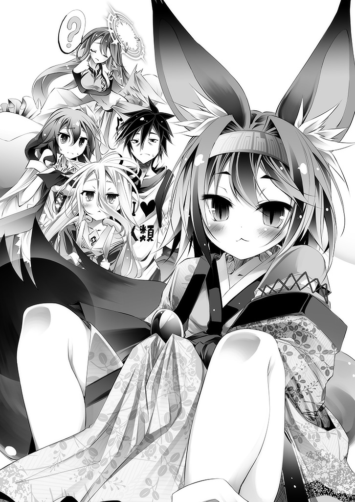
自分にだけ話したのには、何か理由があったはずだろう、と。
獣人種としての──いや......いづなの勘が、そう告げていた。
────............
──さて、と空は改めて皆の顔を見回す。
「じゃあ全員荷物を持ったな？ 白？」
「......おっけー......」
「ジブリール──は、荷物が見当たらないんだが......」
「大丈夫でございます。空間を圧縮して懐に入れてございます♥」
「なにその四次元ポケット......えーと、いづなは？」
「ん、問題ねぇ、です」
「こっちはこっちで荷物デカすぎだし......ステフ？」
「ええ、ええ、ちゃんと持ってますわよ。おっきぃ荷物を......」
「秘密兵器だから大事に扱えよ？ ──て、おいプラムは何処だ！」
「は、はいぃ......不本意ながらいますぅ......陽が沈んだら出ますぅ」
「よっし、みんな揃ってるな」
「あれ？ ソラ──〝あの二人〟は待たないんですの？」
「現地集合──まあ最悪、途中参加でいいだろ。つーわけで......」
そして空と白、不敵な笑みを浮かべ一同を見回して──
「んじゃ──行きますか？」
■■■
────............
赤い月の下、一同を連れて空は歩きながら語る。
「この世界──『十の盟約』と【十六種族】を聞いた時からずっと考えてたんだ」
十六の種族──そして全種族に、それぞれ割り振られた『種のコマ』。
それを揃えるのが唯一神への挑戦権で、それがこの世界。この〝ゲーム〟。
だがそうすると、ある疑問が生じる。
「......集団、組まない......例えば、神霊種の......種のコマ......どうやって、取る？」
空の隣を行く、白が、ポツポツと空の言葉を引き継ぐ。
──『十の盟約』七つ「集団における争いは、全権代理者をたてるものとする」──
言われてみれば当然のことに、気付かなかったステフはその後ろをとぼとぼと歩く。
「そう、神霊種は〝全権代理者〟を立てていない。『神霊種のコマ』は──〝取れない〟」
そう語る空の後ろを、まだよくわかっていないのかいづながてこてこ続く。
「すると、神霊種はきっとこう考えるよなぁ？」
嫌味に口元を吊り上げ空が言う。
「テトが創ったこの世界──『神霊種が他の種族のコマを集めるゲーム』だ、と」
──そう、Ｐｌａｙｅｒと、Ｐｒａｙｅｒの違い。
神霊種は自分達こそ『参加者』で他の全ては『ただのコマ』でしかない──
そう思い込み、天で踏ん反り返っている、と空は想像する。
何せ、かつては〝永遠に〟戦争していた連中だ。
そして──同じことを思い、諦めて軍門に降る種族もいるだろうと想像出来る。
「──と・こ・ろ・が、だ」
そのイメージ上の神さま達を嘲るような口調で、空が続ける。
「それがまったくの見当外れなんだな～これが」
その横を歩き、月明かりに絶好調の吸血種の少女──もとい少年が嗤う。
「はいぃ......だって、そもそもの話としてですねぇ......？」
そう、そもそもの話──と空と手を繋いで歩く白が薄く笑う。
「......種のコマ......とらなくて、いい......なら......話は、別......」
そしてジブリールが空と白──マスター達の慧眼に感服するように微笑む。
「はい、なにせ神霊種の全権代理者でございましたら──」
ザッ、と音を立てて一同が立ち止まり。
「別に神霊種に決めさせてやる必要なんてねぇ、そうだろ？」
眼をすぼめて──空が眼前の人物にただ確認するように、言い放つ。
「──〝何か〟の巫女さん？」
東部連合首都・巫鴈──巫社中央棟の庭園。
月詠みの光が照らす庭池にかかる朱い橋、その欄干に座りカランと鈴音を鳴らして。
──東部連合、獣人種全権代理者。
金色の二つ尾を揺らして──『巫女』は、妖艶に笑った。
■■■
──地平線の彼方。黒いキングの頂に戻り、テトは地上を眺めて語る。
誰に聞かせるでもなく、ただトランプの札を弄び、虚空に言葉を投げかける。
「世界なんてさ、本当は単純なものなんだよ......彼が感じた通りに」
──きっと子供の時、誰もが思った通りに。
それをややこしく、複雑にしてるのは、世界なんかじゃなく。
その世界に住んでいる退屈なモノ達に他ならないと──テトはそう思う。
「せっかく僕が創った単純な世界、台無しにしてる連中を──君達ならやれるよね？」
ややこしくしている連中。そう──退屈な連中。
何かを知った気でいる大人ぶった上から目線の連中。
そうため息一つついて、テトは──唯一神として。
ルールを勘違いして世界そのものを台無しにしている存在を。
明らかに悪意を含んだ笑みで、子供らしい毒気を帯びた眼で見つめて呟く。
「最初に引きずり下ろされるのは、やっぱり〝キミ〟か......因果なものだね☆」
史上三度目の〝神殺し〟を──神を殺さず殺す──
一転、眼を輝かせ、足をばたつかせてテトは熱を帯びた声で言う。
「君達なら──出来るよね。期待してるよ信じてるよだからはやく──」
「退屈な連中を引きずり下ろして、ここまでおいでっ!!」
■■■
「──神髄顕現、神将意通──神格設定......〝底辺〟」
巫女を中心に風が渦巻き雲が吹き流されていく。
ジブリールさえ息を呑む力の渦の中、巫女は最後に──問う。
「空はん、白はん、それとみなはん──うちの最後の一手、託すで──」
せやから──
「あてが一度は夢見......そして見果てた夢の〝その続き〟──」
だがそのセリフを遮り──空が引き継ぐ。
「〝果てなどない〟と──ああ証明してやる。安心して〝俺達〟に任せろ」
その答えに満足したように、『巫女』は眼を閉じ、そして──
大気が、雲が、地が軋む。概念の顕現が世界を塗りつぶし──言の葉を紡ぐ。
『──余を如何と知って呼びかける、定命のものよ』
巫女〝ではないもの〟が眼を開き、そう問う。
誰もがその権威と威圧、圧倒的な存在感に圧される中、だが──
「いい歳こいて人や星のスネかじって寄生してる身分で偉そーにしてる奴」
「......ヒキニート、童貞あんど友無し、の、しろ達以下、の......ダメ生物」
ただ吹き荒れる風をうざったそうに、空と白は告げる──すなわち、と。
「「【十六種族】位階序列・第一位──神霊種、ふっる～い神さま」」
「さぁ──さっさとゲームをはじめよう。ハッキリ言って──邪魔なんだよ神霊種」
【完】
●あとがき
少し話をしよう......なに、ほんの数ヶ月前のつまらない話だ───
あれはそう──ちょうど五巻のエンディングを書いている頃だった。
唐突に音を立て震える携帯──発信者『かまぼこ板』と表示された電話をとった。
「五巻完成前にアレですが、アニメ放映に合わせて次の巻、間に合わせてくださいね♥」
......なるほど五巻の入稿前、ド修羅場と百も承知で〝次〟を催促するわけだ。
さすがだ。見上げた根性だ。その位いい性格してなきゃ編集業は務まらぬのかと思わばなるほど業の深い仕事と涙の一つも零れよう、が──〝それはそれ、これはこれ〟だ。
その時点では、六巻は『対神霊種ゲーム』を予定していたのだ。アニメ放送前、挿絵も描いている都合上忙しくなるだろう時期に、間に合わせる自信がある内容ではない。
その旨を正直に、そして素直に伝えたところ、
「以前頂いた『〇巻』の構想あるじゃないですか。あれを六巻とするのはどうです？」
──なるほど、神霊種達とその眷属達が暴れ狂っていた時代──『大戦』。
その終結と『盤上の世界』が創られるに至った物語のプロット──確かにあった。
神霊種の絶対性を煽りきる前に、対神霊種戦をやることに多少躊躇があったのも事実。
対神霊種ゲームの構想も完全には固まっていなかったし、ならば──
「わかりました。じゃあそれでやってみます」
そう答えた恐るべき愚者に、クラゲさえ呆れ果てたことだろう。
〝一巻で大戦と終結、関わる全キャラと種族を描き切り本編と連動させる〟──
細胞小器官サイズでも脳があり機能していれば想像出来たであろう、その超無理難題に、この時点ではまだ、まったく気付いていなかったのだから............。
────............。
──以上を踏まえた上で、お久しぶりです、その榎宮祐です。
友人知人からバカだアホだ輪唱され今日を生き抜いています。
しかし──ふと、想像してみて欲しい。
今日の人類──その文明の飛躍に大きく貢献した偉人賢人達。
さしあたり、ここではコロンブスを思い描いてみて欲しい。
──クリストファー・コロンブス。
言わずと知れたアメリカ大陸の発見者である。
まーその功罪はこの際一旦置いておきまして、遥かなる大西洋へ乗りだし、その果てに何があるのか誰も確信などない中、勇気と知恵と知識だけを胸にゴートゥーウェスト。
誰もが不安を抱えながら、ひたすら西進西進西進。
そしてついに西の果て、アメリカ大陸へと到着──そして帰還ッ！
彼らの生還を支えたのはその知性と知識、知恵に他ならないだろう！
故にこそ偉人と呼ばれ、そして偉人と呼ばれるは賢人であったからしてッ!!
──だがしかし。
ここで一度冷静に立ち返って考えてみて欲しい。
偉大な旅に出、そして帰ってきた彼らは確かに賢人だったろう。
そうでなければそもそも帰って来られなかっただろうからして。
そう、察しのいい読者諸兄ならもうお気づきだろう。
帰って来られなかったら──ただのアホと呼ばれたのだ。
当然だろう、だって根本的な話として。
あるかもわからん大陸を目指して海に出た時点でアホの所業だろう？
本当に頭がよけりゃそもそも海に出ねぇっていう。
本物の賢者がそんなリスクを冒すかと。何でそんな博打に命張ってんだと。
──そうッ！
かくこのように、人間が真に誇るべきは賢さではないのである。
愚かさこそが人間の原動力であり、その愚かさに殺されまいと知性を磨くのである！
よって！ 僕はここで！ 胸を張って誰はばかることなく！ 堂々と言える！
そう──僕は──アホであるとぉぉおおぉッ!!!
以上──自己正当化完了ッ！
如何だろうこの穴一つない論理！ 惚れてもいいのよ？
「......清々しい詭弁で、納期をぶっちぎりまくった言い訳は終わりましたか？」
あちーす、担当さん全方位にゲザってくれてあざーっす（くっちゃくっちゃ）。
「あの、本当にホンットにヤバかったんですよ今回。三回も額で床磨きましたよ!?」
いえ、それは本当に感謝してますけど。
──え、あの、ぶっちゃけていいんですか？
「............あ、あ、いえ、あの──」
アニメ公式サイト用の書き下ろしＳＳ、全方位への特典用ＳＳ、台本チェックに版権物チェックに書き下ろしイラスト大量発注に──って何処まで情報公開していいかわからないんでここで止めておきますけど『原稿早く上げろ』って書いた次の行で『あとこれらのお願いしますね』って大量の案件書くのはどうなんですかね人として（頬がこけた笑み）。
「あはは～それに関しては私じゃなく、ほら、プロデューサーとかのせいってことに」
あ、していいんですか？（適当）
「いいんじゃないですかね♥（適当）」
では、僕を忙殺せしめんと企てた戦犯はＰってことで。
「異議なーし。というところで──（ちらっ）」
あ、はい。宣伝ですね。露骨な宣伝をしろというんですね？ おほん......。
さて──ッ!! 『テレビアニメ・ノーゲーム・ノーライフ』──ッ!!
これが書店に並ぶ頃にはもう放送がはじまっていますね。
ほぼ全脚本会議に参加し、プロデューサーの提案によって、アニメ一話は、あえて原作じゃなく、同じく僕が嫁と二人で描いてますコミカライズのほう──漫画用に組み直した構成になっていたり、脚本も一本、僕自身が担当していたり、ビジュアル設定も監督達とゲラゲラ笑いながら決め、原作者としては文句なしの出来になってると思うのですが。
果たして読者の方々も気に入って頂ける内容になっているでしょうか。
今巻ともども、満足頂ける内容になっていることを願うばかりです。
というわけで、この辺でそろそろ──あ、最後に一つだけ、お願いがあります。
......ジブリールのこと、嫌いにならないであげてください。今は心入れ替えて──いや入れ替えてないですけど......まあ、その。はい......。
「え、自分で書いといて──ッ!?」
それではこの辺で。また次巻も、手にとって頂ければ幸いです。
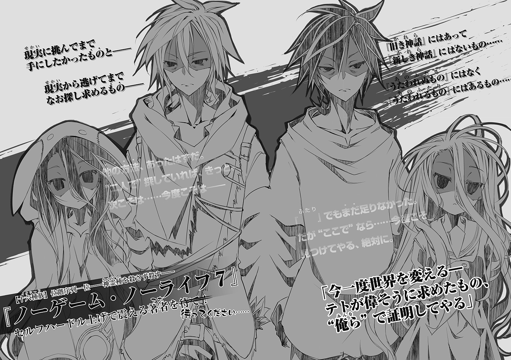
著者
榎宮祐（かみや・ゆう）
榎宮です。これが出る頃にはアニメ放送中の本作、アニメサイドのおかげでビジュアルイメージが固まり情景が浮かびやすくなって文章化が楽になりました。
この場を借りて美術担当の方々に絶大なる感謝を！
イラスト
榎宮祐（かみや・ゆう）
榎宮です。完成したアニメを一足早く見てますが。
拝啓・美術担当方々様。頑張りすぎです。
アヴァント・ヘイム描け言われたら死にますつか逃げ──嫌だぁ放せぇ!! あんなん画力的に無【検閲】
ノーゲーム・ノーライフ６
ゲーマー夫嫁は世界に挑んだそうです
2014年5月31日発行 ver.2.0
著者 榎宮祐
発行者 三坂泰二
編集長 万木壮
発行所 株式会社ＫＡＤＯＫＡＷＡ
〒102-8177
東京都千代田区富士見2-13-3
03-3238-8745（営業）
編集 メディアファクトリー
0570-002-001（カスタマーサポートセンター）
年末年始を除く平日10:00～18:00まで
©Yuu Kamiya 2014
http://www.kadokawa.co.jp/
※無断で複製・複写・データ配信などをすることは、かたくお断りいたします。
本電子書籍は下記にもとづいて制作しました
ＭＦ文庫Ｊ
ノーゲーム・ノーライフ６ ゲーマー夫嫁は世界に挑んだそうです
発行日 2014年5月8日 第二刷発行